Summary. (Work in Progress) The purpose of this document is to explain how computers solve mathematical models. Many of the most common numerical methods are presented, we show how to implement them in Python, and discuss their limitations. The mathematical formalism is kept to a minimum. All the material is available at github. For each of the chapters there is a Jupyter notebook. This makes it possible to run all the codes in this document. We strongly recommend to install the Anaconda Python distribution. All documents have been prepared using doconce.
This book is work in progress. It started out as a traditional book on numerical methods and numerical analysis, but I am currently working on bringing the modeling aspects more into focus.
The book is divided into chapters where I cover numerical methods. A numerical algorithm is a set of instructions executed in a specific order to find the solution to a mathematical or a physical problem. In each chapter, I try to explain and derive many of the standard numerical methods from first principles in a way that require little mathematical knowledge. It is important to understand the origin of numerical algorithms, because a numerical algorithm will only in a special case solve the underlying mathematical problem exact. We usually compare a computer generated solution of a model to data, you need to be able to tell if the mismatch is due to numerical errors introduced by the specific algorithm, or missing physical effects in the original mathematical model. Sometimes the numerical algorithm is unstable, i.e. it converges to the wrong solution. Thus, you need to understand the limitations of the algorithm. Another motivation to learn about numerical algorithms, is that they are not that difficult to implement, they usually follow a very similar pattern, but there are some ''tricks''. It is extremely useful to learn these tricks, it will put you into a position where you can combine different methods and optimize them for your specific problem.
In the course I teach, the theory is combined with modeling projects. I am currently working on making the modeling part more explicit in this book. Modeling is an art, and there are many models that can be used to simulate a phenomenon. In my experience, sometimes people use models that are too complicated compared to what they want to model. By complicated, I mean models that require a lot (sometimes too much) information about a system compared to the actual measuring data available. I believe that simplified models should be used in an exploratory manner to understand a certain phenomenon, before applying more complicated models. What many people realize is that a simple model that does not match data, can in many cases be more valuable than a complicated model that match data. If a simple model does not match data, it means that we have ignored important effect(s). This in turn mean that the effects or the physics we thought where important, might not be the most important after all. We have learned that our understanding is incomplete and we should search for the missing effects (or take another look at the quality of the data). The key point is that we should always ask ourselves ''What have we learned?''.
However, it is not easy to learn modeling and it is even harder if one use models developed by other people. The only way to learn is to do it yourself, test different mathematical models of a phenomenon, and compare to data. In this process you will also be able to understand the strength and limitations of models, or to use the famous quote by G. E. Box ''All models are wrong, but some are useful''.
Modeling can be broken down into several parts:
*Aksel Hiorth, September 2022
Defining a mathematical function
Passing arrays and lists to functions
Call by value or call by reference
Create DataFrame from dictionary
Filtering and visualizing data
Performing mathematical operations on DataFrames
Grouping, filtering and aggregating data
Working with folders and files
Continuous functions and finite representation: numerical errors
Taylor polynomial approximation
Calculating Numerical Derivatives of Functions
Floating point numbers and the IEEE 754-1985 standard
Partial differential equations and linear systems
Continuity equation as a linear problem
Solving least square, using algebraic equations
Least square as a linear algebra problem
Working with matrices on component form
Sparse matrices and Thomas algorithm
Example: Solving the heat equation using linear algebra
Exercise 4.1: Conservation Equation or the Continuity Equation
Exercise 4.2: Curing of Concrete and Matrix Formulation
Exercise 4.3: Solve the full heat equation
Exercise 4.4: Using sparse matrices in python
CO$_2$ diffusion into aquifers
Optimization and nonlinear systems
Example: van der Waals equation of state
Exercise 5.1: van der Waal EOS and CO$_2$
Exercise 5.2: Implement the fixed point iteration
Exercise 5.3: Finding the molar volume from the van der Waal EOS by fixed point iteration
When does the fixed point method fail?
What to do when the fixed point method fails
Exercise 5.4: Solve \( x=e^{1-x^2} \) using fixed point iteration
Exercise 5.5: Compare Newtons, Bisection and the Fixed Point method
Exercise 5.6: Gradient descent solution of linear regression
Practical estimation of errors on integrals (Richardson extrapolation)
Alternative implementation of adaptive integration
Error term on Gaussian integration
Common weight functions for classical Gaussian quadratures
Integrating functions over an infinite range
Exercise 6.1: Numerical Integration
Ordinary differential equations
Ordinary differential equations
Error analysis - Euler's method
Adaptive step size - Euler's method
Adaptive step size - Runge-Kutta method
Solving a set of ODE equations
Stiff sets of ODE and implicit methods
Exercise 7.1: Truncation error in Euler's method
Monte Carlo integration ''hit and miss''
Errors on Monte Carlo integration and the binomial distribution
Basic properties of probability distributions
Example: Monte Carlo integration of a hyper sphere
Exercise 8.1: The central limit theorem
There are plenty of online resources if you want get an overview of Python syntax, such as [1], for which the full book is available on github.
In this chapter I will try to focus on the key part of Python that you will need in this course, and maybe more importantly, give some advice on how to write good, reusable code. As you may have discovered, tasks can be solved in many different ways in Python. This is clearly a strength because you would most likely be able to solve any task. On the other hand it is a weakness, because code can get messy and hard to follow, especially if you solve the same task in different parts of your code using different libraries or syntax.
In this chapter, I will explain how I tend to solve some common tasks, in the process we will also cover some stuff that you should know. If you need more information on each topic below, there are plenty of online sources.
The code examples are meant as an inspiration, and you may not agree and have solutions that you think are better. If that is the case, I would love to know, so that I can update this chapter.
Many people are concerned about speed or execution time. My advice is to focus on readable code, and get the job done. When the code is working, it is very easy to go back and change parts that are slow. Remember that you should test the code on big problems; sometimes the advantage of Numpy or Scipy is not seen before the system is large. You can use the command %timeit to check the performance of different functions. You can also use Numba, which translates Python code into optimized machine code.
It is important to have some guidelines when coding, and for Python there are clear style guides called PEP 8. Take a look at the official guidelines, and make some specific rules for yourself, and stick to them. The reason for this is that if you make a large program or library, people will recognize your style and it will be easier to understand your code. If you are working in a team, it is even more important - try to agree on some basic rules, for example:
Code Guidelines:
def my_function(...): or def MyFunction(..), i.e. are words separated by an underscore or a capital letter? Personally I use capital letters for class definition, and underscore for function definition.import library as .., Numpy would typically be import numpy as np. The syntax from numpy import * could lead to conflicts between modules as functions could have the same name in two different modules.Work Guidelines:
You would like to use an editor that gives some help. This is particularly useful when you do not remember a variable or function name, you can start typing the name and a drop down list will appear which will let you pick the variable or function you want. If you enter a function name, the editor will write some useful information about the function, some screenshots are shown in figure 1.
Figure 1: A screenshot of vscode (left) the editor helps to identify which variable name you want, (right) the editor shows relevant information about the function you would like to call.
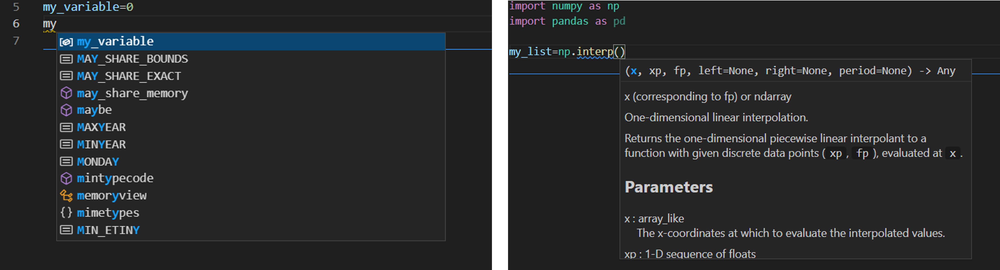
Currently my favorite editor is vscode, it can be used for any language, and there are a lot of add-ins that can be installed to make the coding experience more pleasant. Spyder is also a very good alternative, but this editor is mainly for Python. It takes some time to learn how an editor works, so it is good if the editor can be used for multiple purposes. However, always be open to new ideas and products, it will make you more efficient. As an example, in some cases you will have a particular error in the code that is difficult to find. It can help to open and run that code in a different editor, you might get slightly different error messages, which could help you locate the error.
In Python you do not need to define types as in a compiled language. In many ways one can say that Python works as if there is only one type. To not define types is generally an advantage as it lets you write code with fewer lines, and it is easier to write functions that will work with any kind of type. As an example, in the programming language C, if you want to write a function that lets you add two numbers, you have to write one version if the arguments are integers and one version if the arguments are floats.
The way that Python store and organize data is called a data model, and it is well described in the official documentation. The important point is that all data in Python is an object or a relation between objects. The is operator can be used to check if two objects have the same identity, that means they are the same object. The id method returns an unique integer value for the object, and if two objects have the same id number they are the same object, e.g.
y=10
x=y
x is y # gives true
print(id(x))
print(id(y)) # prints the same integer as id(x)
For those familiar with C or C++, one would first have to define x and y as the type int and then they would already have a different place in memory and they can never be the same (even if they contain the same number). We will return to this point in more detail when discussing lists and arrays in Python, as it can lead to unexpected behavior.
Another thing you might have experienced during Python coding is that you get error messages that refer to pieces of code that you have no knowledge of. This can happen when you pass the wrong type (e.g. a string instead of a number). Since Python only has one type, the wrong type will not be discovered before it is used. This error could be deep into some other library that you have no knowledge of.
I will assume that you are familiar with the common types like floats (for real numbers), strings (text, lines, word, a character), integer (whole numbers), Boolean (True, False). What is sometimes useful is to be able to test what kind of type a variable is, this can be done with the method type()
my_float = 2.0
my_int = 3
my_bool = True
print(type(my_float))
print(type(my_int))
print(type(my_bool))
The output of the code above will be float, int, bool. If you want to test the type of a variable you can do
if isinstance(my_int,int):
print('My variable is integer')
else:
print('My variable is not integer')
Python also has build in support for complex numbers. An example are 1+2j, j is the imaginary part of the complex number. Note there is no multiplication sign between 2 and j.
Lists are extremely useful, and they have very nice syntax that in my opinion is more elegant than Numpy arrays. Whenever you want to do more than one thing with only a slight change between the elements, you should think of lists. Lists are defined using the square bracket [] symbol
my_list = [] # an empty list
my_list = []*10 # still an empty list ...
my_list = [0]*10 # a list with 10 zeros
my_list = ['one', 'two','three'] # a list of strings
my_list = ['one']*10 # a list with 10 equal string elements
To get the first element in a list, we do e.g. my_list[0]. In a list with 10 elements the last element would be my_list[9]. The length of a list can be found using the len() function, i.e. len(my_list)=10. Thus, the last element can also be found by doing my_list[len(my_list)-1]. However, in Python you can always get the last element by doing my_list[-1], the second last element would be my_list[-2] and so on.
Sometimes you do not want to initialize the list with everything equal, and it can be tiresome to write everything out yourself. If that is the case you can use list comprehension
my_list = [i for i in range(10)] # a list from 0,1,..,9
my_list = [i**3 for i in range(10)] # a list with elements 0,1,8, ..,729
We will cover the for-loop below, but basically what is done is that the statement i in range(10), gives i the value 0, 1, \( \ldots \), 9 and the first i inside the list tells Python to use that value as the element in the list. Using this syntax, there are plenty of opportunities to initialize a list. Maybe you want to pick from a list words that contain a particular subset of characters
my_list = ['hammer', 'nail','saw','lipstick','shirt']
new_list = [i for i in my_list if 'a' in i]
Now new_list=['hammer', 'nail', 'saw'].
I showed you some examples above, where we used multiplication to create a list with equal copies of a single element, you can also join two lists by using addition
my_list = ['hammer','saw']
my_list2 = ['screw','nail','glue']
new_list = my_list + my_list2
Now new_list=['hammer', 'saw', 'screw', 'nail', 'glue'], we can also multiply the list with an integer and get a larger list with several copies of the original list.
Clearly we can access elements in a list by using the index to the element, i.e. first element is my_list[0], and the last element is my_list[-1]. Python also has very nice syntax to pick out a subset of a list. The syntax is my_list[start:stop:step], the step makes it possible to skip elements
my_list=['hammer', 'saw', 'screw', 'nail', 'glue']
my_list[:] # ['hammer', 'saw', 'screw', 'nail', 'glue']
my_list[1:] # ['saw', 'screw', 'nail', 'glue']
my_list[:-1] # ['hammer', 'saw', 'screw', 'nail']
my_list[1:-1] # ['saw', 'screw', 'nail']
my_list[1:-1:2] # ['saw','nail']
my_list[::1] # ['hammer', 'saw', 'screw', 'nail', 'glue']
my_list[::2] # ['hammer', 'screw', 'glue']
Sometimes you may have a list of lists. If you want to get e.g. the first element of each list, you cannot do this using list slicing. Instead, you will need to use a for-loop or list comprehension
my_list = ['hammer','saw']
my_list2 = ['screw','nail','glue']
new_list=[my_list,my_list2]
# extract the first element of each list
new_list2 = [ list[0] for list in new_list]
new_list2=['hammer','screw']
Use lists if you have mixed types, and as storage containers. Be careful when you do numerical computations not to mix lists and Numpy arrays. Adding two lists e.g. [1,2]+[1,1], will give you [1,2,1,1], whereas adding the same two Numpy arrays will give you [2,3].
Numpy arrays are awesome, and they should be your preferred choice when doing numerical operations. We import Numpy as import numpy as np. These are some examples of initialization
import numpy as np
my_array=np.array([0,1,2,3]) # initialized from list
my_array=np.zeros(10) # array with 10 elements equal to zero
my_array=np.ones(10) # array with 10 elements equal to one
A typical use of Numpy arrays is when you want to create equally spaced numbers to evaluate a function, this can be done in (at least) two ways
my_array=np.arange(0,1,0.2) # [0, 0.2, 0.4, 0.6, 0.8]
my_array=np.linspace(0,1,5) # [0., 0.25, 0.5, 0.75, 1.]
Note that in the second case, the edges of the domain (0,1) are included while in the first case the upper edge is not.
If a function is written to use Numpy arrays as arguments, make sure that it returns Numpy arrays. If you have to use a list inside the function to e.g. store the results of a calculation, convert the list to a Numpy array before returning it by np.array(my_list).
You can access elements in Numpy arrays in the same way as lists, the syntax is my_array[start,stop,step]
my_array=np.arange(0,6,1)
my_array[:] # [0,1,2,3,4,5]
my_array[1:] # [1,2,3,4,5]
my_array[:-1] # [0,1,2,3,4]
my_array[1:-1] # [1,2,3,4]
my_array[1:-1:2] # [1,3]
my_array[::2] # [0,2,4]
However, as opposed to lists all the basic mathematical operations addition, subtraction, multiplication are meaningful with arrays (if they have equal length, or shape)
my_array = np.array([0,1,2])
my_array2 = np.array([3,4,5])
my_array+my_array2 # [3,5,7]
my_array*my_array2 # [0,4,10]
my_array/my_array2 # [0,.25,.4]
Note that these operations do what you would expect them to do. If you have arrays of arrays, you can easily access elements in the arrays
my_array = np.array([[0,1,2],[3,4,5]]) # shape 2x3 matrix
my_array[0,:] # [0,1,2] First row
my_array[1,:] # [3,4,5] Second row
my_array[:,0] # [0,3] First column
my_array[:,1] # [1,4] Second column
Not the extra [] in the definition of my_array. Numpy arrays have a shape property, which makes it very easy to create different matrices. The array [0,1,2,3,4,5] has shape (6,), but we can change the shape to create e.g. a \( 2\times3 \) matrix
my_array = np.array([0,1,2,3,4,5])
my_array.shape = (2,3) # [[0,1,2],[3,4,5]] 2 rows and 3 columns
my_array.shape = (3,2) # [[0,1],[2,3],[4,5]] 3 rows and 2 columns
If you have not used dictionaries before they might look unnecessary, but if you get used to them and their syntax, they can make your code much more flexible and easier to expand. You should use dictionaries when you have data sets that you want to access fast. A very good mental image to have is an excel sheet where data are organized in columns. Each column has a header name, or a key. Assume we have the following table
| A | B | C |
| 1.0 | 2.0 | 3.0 |
| 4.0 | 5.0 | |
| 6.0 | 7.0 |
This could be represented as a dictionary
my_dict={'A':[1.0,4.0,6.0],'B':[2.0,5.0,7.0],'C':[3.0]}
The syntax is {key1:values, key2:values2, ...}. We access the values in the dictionary by the key i.e. print(my_dict['A']) would print [1.0,4.0,6.0]. If you want to print out all the elements in a dictionary, you can use a for-loop (see next section for more details about for-loops)
for key in my_dict:
print(key, my_dict[key])
There are basically two ways of iterating through lists or to do a series of computations: a for-loop and a while-loop. In most cases a for-loop can also be written as a while-loop and vice versa. You would typically use a for-loop when you are iterating over a fixed number of elements. A good example is when we are iterating in a numerical computation from time zero to the end time. A while-loop is typically used when we do not know before the run time when to stop, this could be that we are waiting for user input or to reach a certain numerical accuracy in our calculation before proceeding.
A typical example of a for-loop is to loop over a list and do something, and maybe during the execution store the results in another list
numbers=['one','two','three','one','two']
result=[] # has to be declared as empty
for number in numbers:
if number == 'one':
result.append(1)
The result of this code is result=[1, 1]. The number variable changes during the iteration and takes the value of each element in the list. Note that I use numbers for the list and number as the iterator, this makes it easy to read and understand the code. In many cases you want to have the index, not only the element in the list
numbers = ['one','two','three','one','two']
numerics = [ 1 , 2 , 3 , 1 , 2 ]
result=[] # has to be declared as empty
for idx,number in enumerate(numbers):
if number == 'one':
result.append(numerics[idx])
The result of this code is result=[1, 1]. In this case the function enumerate(numbers) returns two values: the index, which is stored in idx, and the value of the list element, which is stored in number.
A more elegant way to achieve the same results without using the enumerate() function is to use the zip() function
numbers = ['one','two','three','one','two']
numerics = [ 1 , 2 , 3 , 1 , 2 ]
result=[] # has to be declared as empty
for numeric,number in zip(numerics,numbers):
if number == 'one':
result.append(numeric)
The zip() function can be used with several lists of the same length.
In some cases you may want to plot more than one function in a plot, with different characteristics for each function curve. It is then tempting to copy and paste the previous code, but it is more elegant to use a for loop and lists
import numpy as np
import matplotlib.pyplot as plt
x_val = np.linspace(0,1,100) # 100 equal spaced points from 0 to 1
y_vals = [x_val,x_val**2]
labels = [r'x', r'$x^2$']
cols = ['r','g']
points = ['-*','-^']
for y_val,label,col,point in zip(y_vals,labels,cols,points):
plt.plot(x_val,y_val,point,c=col,label=label)
plt.grid()
plt.legend()
plt.show()
The output of this code is shown in figure 2.
Figure 2: Output of code above.
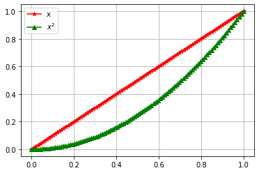
A while-loop is used whenever you do not know before run time when to stop iterating. The while-loop does something while a condition is true
import numpy as np
finished = False
sum =0
while not finished:
sum += np.random.random() #returns a random number between 0,1
if sum >= 10.:
finished = True
In some cases we are iterating from \( t_0 \), \( t_1 \), etc. to a final time \( t_f \). If we use a fixed time step, \( \Delta t \), we can calculate the number of steps i.e \( N= \text{int} ((t_f-t_0)/\Delta t) \), and use a for-loop. However, in a more fancy algorithm we can change the time step as the simulation proceeds and then we need to use a while-loop, e.g. while t0 <= tf:.
Short functions makes the code easier to read. Each function has a particular task, and it does only one thing. If functions do too many tasks there is a chance that you will have several functions doing some of the same operations. Whenever you want to extend the program, you may have to make changes several places in the code. The chance then is that you will forget to do the change in some of the functions and introduce a bug.
Throughout this course you will write many functions that do mathematical operations. In many cases, you would also pass a function to another function to make your code more modular. Lets say we want to calculate the derivative of \( \sin x \), using the most basic definition of a derivative \( f^\prime(x) = (f(x+\Delta x)-f(x))/\Delta x \), we could do it as
def derivative_of_sine(x,delta_x):
''' returns the derivative of sin x '''
return (np.sin(x+delta_x)-np.sin(x))/delta_x
print('The derivative of sinx at x=0 is :', derivative_of_sine(0,1e-3))
We will discuss in a later chapter why \( \Delta x=10^{-3} \) is a reasonable choice. If we would like to calculate the derivative at multiple points, that is straightforward since we have used the Numpy version of \( \sin x \).
x=np.array([0,.5,1])
print('Derivative of sinx at x=0,0.5,1 is :', derivative_of_sine(x,1e-3))
The challenge with our implementation is that if we want to calculate the derivative of another function we have to implement the derivative rule again for that function. It is better to have a separate function that calculates the derivative
def f(x):
return np.sin(x)
def df(x,f,delta_x=1e-3):
''' returns the derivative of f '''
return (f(x+delta_x)-f(x))/delta_x
print('Derivative of sinx at x=0 is :', df(0,f))
Note also that we have put delta_x=1e-3 as a default argument. Default arguments have to come at the end of the argument lists, df(x,delta_x=1e-3,f) is not allowed. All of this looks well, but what you would experience is that your functions would not be as simple as \( \sin x \). In many cases your functions need additional arguments to be evaluated e.g.:
def s(t,s0,v0,a):
'''
t : time
s0 : initial starting point
v0 : initial velocity
a : acceleration
returns the distance traveled
'''
return s0+v0*t+a*t*t*0.5 #multiplication (0.5)is general faster
#than division (2)
How can we calculate the derivative of this function? If we try to do df(1,s) we will get the following message
TypeError: s() missing 3 required positional
arguments: 's0', 'v0', and 'a'
This happens because the df function expect that the function we send into the argument list has a call signature f(x). What many people do to avoid this error is to use global variables, that is to define s0, v0, and a at the top of the code. This is not always the best solution. Python has a special variable *args which can be used to pass multiple arguments to your function, thus if we rewrite df like this
def df(x,f,*args,delta_x=1e-3):
''' returns the derivative of f '''
return (f(x+delta_x,*args)-f(x,*args))/delta_x
we can do (assuming s0=0, v0=1, and a=9.8)
print('The derivative of sinx at x=0 is :', df(0,f))
print('The derivative of s(t) at t=1 is :', df(0,s,0,1,9.8))
In small programs you would not care about scope, but once you have several functions, you will easily get into trouble if you do not consider the scope of a variable. By scope of a variable we mean where the variable is available, first some simple examples
A variable created inside a function is only available within the function: ``
def f(x):
a=10
b=20
return a*x+b
Doing print(a) outside the function will throw an error: name 'a' is not defined. What happens if we define variable a outside the function?
a=2
def f(x):
a=10
b=20
return a*x+b
If we first call the function f(0), and then do print(a) Python would give the answer 2, not 10. A local variable a is created inside f(x), that does not interfere with the variable a defined outside the function.
The global keyword can be used to pass and access variables in functions:
"
global a
a=2
def f(x):
global a
a=10
b=20
return a*x+b
In this case print(a) before calling f(x) will give the answer 2 and after calling f(x) will give 10.
Sometimes global variables can be very useful, and help you to make the code simpler. But make sure to use a naming convention for them, e.g. end all the global variables with an underscore. In the example above we would write global a_. A person reading the code would then know that all variables ending with an underscore are global, and can potentially be modified by several functions.
In the previous section, we looked at some simple examples regarding the scope of variables, and what happened with that variable inside and outside a function. The examples used integer or floats. However in most applications you will pass an array or a list to a function, and then you need to be aware that the behavior is not always what you might expect.
Sometimes functions do not do what you expect, this might be because the function does not treat the arguments as you might think. The best advice is to make a very simple version of your function and test it for yourself. Is the behavior what you expect? Try to understand why or why not.
Let us look at some examples, and try to understand what is going on and why.
x=3
def f(x):
x = x*2
return x
print('x =',x)
print('f(x) returns ', f(x))
print('x is now ', x)
In the example above we can use x=3, x=[3], x=np.array([3]), and after execution x is unchanged (i.e. same value as before f(x) was called). Based on what we have discussed before, this is maybe what you would expect, but if we now do
x=[3]
def append_to_list(x):
return x.append(1)
print('x = ',x)
print('append_to_list(x) returns ', append_to_list(x))
print('x is now ', x)
Clearly this function will only work for lists, due to the append command. After execution, we get the result
x = [3]
append_to_list(x) #returns [3 1], x is now [3, 1]
Even if this might be exactly what you wanted your function to do, why does x change here when it is a list and not in the previous case when it is a float? Before we explain this behavior let us rewrite the function to work with Numpy arrays
x=np.array([3])
def append_to_np(x):
return np.append(x,1)
print('x = ',x)
print('append_to_np(x) returns ', append_to_np(x))
print('x is now ', x)
The output of this code is
x = np.array([3])
append_to_np(x) #returns [3 1], x is now [3]
This time x was not changed, what is happening here? It is important to understand what is going on because it deals with how Python handles variables in the memory. If x contains million of values, it can slow down your program, if we do
N=1000000
x=[3]*N
%timeit append_to_list(x)
x=np.array([3]*N)
%timeit append_to_np(x)
On my computer I found that append_to_list used 76 nano seconds, and append_to_np
used 512 micro seconds, the Numpy function was about 6000 times slower! To add to the confusion consider the following functions
x=np.array([3])
def add_to_np(x):
x=x+3
return x
def add_to_np2(x):
x+=3
return x
print('x = ',x)
print('add_to_np(x) returns ', add_to_np(x))
print('x is now ', x)
print('x = ',x)
print('add_to_np2(x) returns ', add_to_np2(x))
print('x is now ', x)
The output is
x = np.array([3])
add_to_np(x) #returns [6], x is now [3]
x = np.array([3])
add_to_np2(x) #returns [6], x is now [6]
In both cases the function returns what you expect, but it has an unexpected (or at least a different) behavior regarding the variable x. What about speed?
N=10000000
x=np.array([3]*N)
%timeit add_to_np(x)
x=np.array([3]*N)
%timeit add_to_np2(x)
add_to_np is about twice as slow as add_to_np2. In the next section we will try to explain the difference in behavior.
The examples in this section are meant to show you that if you pass an array to a function, the array can be altered outside the scope of the function. If this is not what you want, it could lead to bugs that are hard to detect. Thus, if you experience unwanted behavior pick out the part of function involving list or array operations and test one by one in the editor.
For anyone that has programmed in C or C++ call by reference or value is something one need to think about constantly. When we pass a variable to a function there are two choices, should we pass a copy of the variable or should we pass information about where the variable is stored in memory?
In C and C++ pass by value means that we are making a copy in the memory of the variable we are sending to the function, and pass by reference means that we are sending the actual parameter or more specific the address to the memory location of the parameter. In Python all variables are passed by (object) reference.
In C and C++ you always tell in the function definition if the variables are passed by value or reference. Thus if you would like a change in a variable outside the function definition, you pass the variable by reference, otherwise by value. In Python we always pass by (object) reference.
To gain a deeper understanding, we can use the id function, the id function gives the unique id to a variable. In C this would be the actual memory address, lets look at a couple of examples
a=10.0
print(id(a)) #gives on my computer 140587667748656
a += 1
print(id(a)) #gives on my computer 140587667748400
Thus, after adding 1 to a, a is assigned a new place in memory. This is very different from C or C++, in C or C++ the variable, once it is created, always has the same memory address. In Python this is not the case, it works in the opposite way. The statement a=10.0, is executed so that first 10.0 is created in memory, secondly a is assigned the reference to 10.0. The assignment operator = indicates that a should point to whatever is on the right hand side. Another example is
a=10.0
b=10.0
print(a is b) # prints False
b=a
print(a is b ) # prints True
In this case 10.0 is created in two different places in the memory and a different reference is assigned to a and b. However if we put b=a, b points to the same object as a is pointing on. More examples
a=10
b=a
print(a is b) # True
a+=2
print(a is b) # False
When we add 2 to a, we actually add 2 to the value of 10, the number 12 is assigned a new place in memory and a will be assigned that object, whereas b would still points the old object 10.
You should think of lists and arrays as containers (or a box). If we do
x=[0,1,2,3,4]
print(id(x))
x[0]=10
print(id(x)) # same id value as before and x=[10,1,2,3,4]
First, we create a list, which is basically a box with the numbers 0, 1, 2, 3, 4. The variable x points to the box, and x[0] points to 0, and x[1] to 1 etc. Thus if we do x[0]=10, that would be the same as picking 0 out of the box and replacing it with 10, but the box stays the same. Thus when we do print(x), we print the content of the box. If we do
x=[0,1,2,3,4]
y=x
print(x is y) # True
x.append(10) # x is now [0,1,2,3,4,10]
print(y) # y=[0,1,2,3,4,10]
print(x is y) # True
What happens here is that we create a box with the numbers 0, 1, 2, 3, 4, x is referenced to that box. Next, we do y=x so that y is referenced to the same box as x. Then, we add the number 10 to that box, and x and y still points to the same box.
Numpy arrays behave differently, and that is basically because if we want to add a number to a Numpy array we have to do x=np.array(x,10). Because of the assignment operator = , we take the content of the original box add 10 and put it into a new box
x=np.array([0,1,2,3,4])
y=x
print(x is y) # True
x=np.append(x,10) # x is now [0,1,2,3,4,10]
print(y) # y=[0,1,2,3,4]
print(x is y) # False
The reason for this behavior is that the elements in Numpy arrays (contrary to lists) have to be continuous in the memory, and the only way to achieve this is to create a new box that is large enough to also contain the new number. This also explains that if you use the np.append(x,some_value) inside a function where x is large it could slow down your code, because the program has to delete x and create a new very large box each time it would want to add a new element. A better way to do it is to create x large enough in the beginning, and then just assign values x[i]=a.
What we have explained in the previous section is related to what is known as mutable and immutable objects. These terms are used to describe objects that have an internal state that can be changed (mutable), and objects that have an internal state that cannot be changed after they have been created. Example of mutable objects are lists, dictionaries, and arrays. Examples of immutable objects are floats, ints, tuples, and strings. Thus if we create the number 10 its value cannot be changed (and why would we do that?). Note that this is not the same as saying that x=10 and that the internal state of x cannot change, this is not true. We are allowed to make x reference another object. If we do x=10, then x is 10 will give true and they will have the same value if we use the id operator on x and 10. If we later say that x=11 then x is 10 will give false and id(x) and id(10) give different values, but * id(10) will have the same value as before*.
Lists are mutable objects, and once a list is created, we can change the content without changing the reference to that object. That is why the operations x=[] and x.append(1), does not change the id of x, and also explain that if we put y=x, y would change if x is changed. Contrary to immutable objects if x=[], and y=[] then x is y will give false. Thus, whenever you create a list it will be an unique object.
You are bound to get into strange, unwanted behavior when working with lists, arrays and dictionaries (mutable) objects in Python. Whenever, you are unsure, just make a simple version of your lists and perform some of the operations on them to investigate if the behavior is what you want.
Finally, we show some ``unexpected" behavior, just to demonstrate that it is easy to do mistakes and one should always test code on simple examples.
x_old=[]
x = [1, 2, 3]
x_old[:] = x[:] # x_old = [1, 2, 3]
x[0] = 10
print(x_old) # "expected" x_old = [10, 2, 3], actual [1, 2, 3]
Comment: We put the content of the x container into x_old, but x and x_old reference different containers.
def add_to_list(x,add_to=[])
add_to.append(x)
return add_to
print(add_to_list(1)) # "expected" [1] actual [1]
print(add_to_list(2)) # "expected" [2] actual [1, 2]
print(add_to_list(3)) # "expected" [3] actual [1, 2, 3]
Comment: add_to=[] is a default argument and it is created once when the program starts and not each time the function is called.
x = [10]
y = x
y = y + [1]
print(x, y) # prints [10] [10, 1]
x = [10]
y = x
y += [1]
print(x, y) # prints [10, 1] [10, 1]
Comment: In the first case y + [1] creates a new object and the assignment operator = assign y to that object, thus x stays the same. In the second case the += adds [1] to the y container without changing the container, and thus x also changes.
Pandas is a Python package that among many things is used to handle data, and perform operations on groups of data. It is built on top of Numpy, which makes it easy to perform vectorized operations. Pandas is written by Wes McKinney, and one of it objectives is according to the official website '' providing fast, flexible, and expressive data structures designed to make working with ''relational'' or ''labeled'' data both easy and intuitive. It aims to be the fundamental high-level building block for doing practical, real-world data analysis in Python''. Pandas also has Excellent functions for reading and writing Excel and csv files. An Excel file is read directly into memory in what is called a DataFrame. A DataFrame is a two dimensional object where data are typically stored in column and row format. Pandas has a lot of functions that can be used to calculate statistical properties of the data frame as a whole. In this chapter, we will focus on basic data manipulation, stuff you might do in Excel, but can be done much faster in Python and Pandas.
In the following we will assume that you have imported pandas, like this:
import pandas as pd
This is perhaps the most basic way of creating a DataFrame, first we create an empty DataFrame:
df = pd.DataFrame()
Note that we often use df as a variable name for a DataFrame. This is a good choice as someone else reading the code could infer from the variable name that df is a DataFrame. If you need more than one DataFrame variable you could use df1, df2, etc. or even better, use a descriptive name, df_sales_data.
Next, we can add columns to the DataFrame:
df=pd.DataFrame()
df['ints']=[0,1,2,3]
df['floats']=[4.,5.,6.,7.]
df['tools']=['hammer','saw','rock','nail']
print(df) # to view data frame
Note that all columns need to have the same size.
pd.Series()
Even if we initialize the DataFrame column with a list, the command type(df['a']) will tell you that the column in the DataFrame is of type pd.Series(). Thus the fundamental objects in Pandas are of type Series. Series are more flexible, and it is possible to calculate df['a']/df['b'], whereas [0,1,2,3]/[4,5,6,7] is not possible.
A DataFrame can be easily generated from a dictionary. A dictionary is a special data structure, where an unique key is associated with a data type (key:value pair). In this case, the key would be the title of the column, and the value would be the data in the columns.
my_dict={'ints':[0,1,2,3], 'floats':[4.,5.,6.,7.],
'tools':['hammer','saw','rock','nail']
}
df=pd.DataFrame(my_dict)
print(df) # to view
Assume you have some data organized in an Excel or csv file. The csv file could just be a file with column data, and the entries could be separated by a comma or tab.
Figure 3: Official Covid-19 data, and example of files (left) tab separated (right) Excel file.
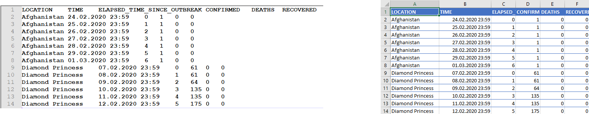
df=pd.read_excel('../data/corona_data.xlsx') # Excel file
df2=pd.read_csv('../data/corona_data.dat',sep='\t') # csv tab separated file
If the Excel file has several sheets, you can give the sheet name directly, e.g. df=pd.read_excel('file.xlsx',sheet_name='Sheet1'), for more information see the documentation.
Accessing files from Python can be painful. If Excel files are open in Excel, Windows will not allow a different program to access them - always remember to close the file before opening it. Sometimes we may not be in the right directory; to check which directory you are in, you can do the following
import os
print(os.getcwd()) # prints current working directory
We can easily save the data frame to Excel format and open it in Excel
df.to_excel('covid19.xlsx', index=False) # what happens if index=True?
Whenever you create a DataFrame, Pandas by default create an index column. This column contains an integer for each row starting at zero. The index column can be accessed by df.index, and it is also possible to define another column as index column.
If we want to pick out a specific column we can access it in the following way
df=pd.read_excel('../data/corona_data.xlsx')
# following two are equivalent
time=df['TIME'] # by the name, alternatively
time=df[df.columns[1]]
# following two are equivalent
time=df.loc[:,['TIME']] # by loc[] if we use name
time=df.iloc[:,1] # by iloc, pick column number 1
The loc[] and iloc[] functions also allow list slicing; one can then pick e.g. every second element in the column by time=df.iloc[::2,1] etc. The difference is that loc[] uses the name, and iloc[] the index (usually an integer).
Why do we have several ways of doing the same operation? It turns out that although we are able to extract what we want with these operations, they are of different type:
print(type(df['TIME']))
print(type(df.loc[:,['TIME']]))
When selecting rows in a DataFrame, we can use the loc[] and iloc[] functions
# pick rows number 0 and 1
time=df.loc[0:1,:] # by loc[]
time=df.iloc[0:2,:] # by iloc
pandas.DataFrame.loc vs pandas.DataFrame.iloc
When selecting rows loc and iloc behave differently, loc includes the endpoints (in the example above both row 0 and 1), whereas iloc includes the starting point up to the endpoint-1.
Sometimes when reading files from Excel, headers may contains invisible characters like newline \n or tab \t or maybe Norwegian special letters that are not read properly. If you have problems accessing a column by name do print(df.columns) and check if the name of the column matches what you would expect.
If the header names have unwanted white space, one can do:
df.columns = df.columns.str.replace(' ', '') # all white spaces
df.columns = df.columns.str.lstrip() # the beginning of string
df.columns = df.columns.str.rstrip() # end of string
df.columns = df.columns.str.strip() # both ends
Similarly for unwanted tabs:
df.columns = df.columns.str.replace('\t', '') # remove tab
If you want to make sure that the columns do not contain any white spaces, you can use pandas.Series.str.strip()
df['LOCATION']=df['LOCATION'].str.strip()
If you have dates in the file (as in our case for the TIME column), you should check if they are in the datetime format and not read as str.
datetime
The datetime library is very useful for working with dates. Variables of the type datetime (or equivalently timestamp used by Pandas) contain both date and time in the format YYYY-MM-DD hh:mm:ss. We can initialize a variable, a, by a=datetime.datetime(2022,8,30,10,14,1). To access the hour we do a.hour, the year a.year, etc. It is also easy to increase e.g. the day by one by doing a+datetime.timedelta(days=1).
import datetime as dt
time=df['TIME']
# what happens if you set
# time=df2['TIME'] #i.e df2 is from pd.read_csv ?
print(time[0])
print(time[0]+dt.timedelta(days=1))
The code above might work fine or in some cases a date is parsed as a string by Pandas, then we need to convert that column to the correct format. If not, we get into problems if we want to plot the data vs the time column.
Below are two ways of converting the TIME column:
df2['TIME']=pd.to_datetime(df2['TIME'])
# just for testing that everything went ok
time=df2['TIME']
print(time[0])
print(time[0]+dt.timedelta(days=1))
Another possibility is to do the conversion when reading the data:
df2=pd.read_csv('../data/corona_data.dat',sep='\t',parse_dates=['TIME'])
If you need to specify all data types, to avoid potential problems create a dictionary, with column names and data types:
types_dict={"LOCATION":str,"TIME":str,"ELAPSED_TIME_SINCE_OUTBREAK":int,
"CONFIRMED":int,"DEATHS":int,"RECOVERED":int}
df2=pd.read_csv('../data/corona_data.dat',sep='\t',dtype=types_dict,
parse_dates=['TIME']) # set data types explicit
Note that the time data type is str, but we explicitly tell Pandas to convert the time data to datetime.
Typically you would select rows based on a criterion. The syntax in Pandas is that you enter a series containing True and False for the rows you want to pick out, e.g. to pick out all entries with Afghanistan we can do:
df[df['LOCATION'] == 'Afghanistan']
The innermost statement df['LOCATION'] == 'Afghanistan' gives a boolean array with the value True for the five last elements and False for the rest. Then we pass this array to the DataFrame, and in one go the unwanted elements are removed. It is also possible to use several criteria, e.g. only extracting data after a specific time
df[(df['LOCATION'] == 'Afghanistan') &
(df['ELAPSED_TIME_SINCE_OUTBREAK'] > 2)]
Note that the parentheses are necessary, otherwise the logical operation would fail.
Pandas has built in plotting, by calling pandas.DataFrame.plot.
df2=df[(df['LOCATION'] == 'Afghanistan')]
df2.plot()
#try
#df2=df2.set_index('TIME')
#df2.plot() # what is the difference?
#df2.plot(y=['CONFIRMED','DEATHS'])
When performing mathematical operations on DataFrames there are at least two strategies
Using Pandas or Numpy should in principle be equally fast. Do not worry about performance before it is necessary. Use the methods you are confident with, and try to be consistent. By consistent, we mean that if you have found one way of doing a certain operation stick to this and try not to implement many different ways of doing the same thing.
We can always access the individual columns in a DataFrame by the syntax df['column_name'].
a) containing ten thousand random uniformly distributed numbers between 0 and 1 (checkout np.random.uniform)a are squared, and one where the sine function is applied to the column aa vs a*a, and a vs sin(a))import numpy as np
import pandas as pd
N=10000
a=np.random.uniform(0,1,size=N)
df=pd.DataFrame() # empty DataFrame
df['a']=a
If you like you could also try to use a dictionary. Next, we add the new columns:
df['b']=df['a']*df['a'] # alternatively np.square(df['a'])
df['c']=np.sin(df['a'])
1/df
Note: you can also do df+df and many other operations on the whole DataFrame.
Matplotlib: ``
import matplotlib.pyplot as plt
plt.plot(df['a'],df['b'], '*', label='$a^2$')
plt.plot(df['a'],df['c'], '^', label='$\sin(a)$')
plt.legend()
plt.grid() # make small grid lines
plt.show()
Pandas plotting: `` First, let us try the built in plot command in Pandas:
df.plot()
If you compare this plot with the previous plot, you will see that Pandas plots all columns versus the index columns, which is not what we want. But, we can set a to be the index column:
df=df.set_index('a')
df.plot()
We can also make separate plots:
df.plot(subplots=True)
or scatter plots
df=df.reset_index()
df.plot.scatter(x='a',y='b')
df.plot.scatter(x='a',y='c')
Note that we have to reset the index, otherwise there is no column named a.
Whenever you have a data set, you would like to do some exploratory analysis. That typically means that you would like to group, filter or aggregate data. Perhaps, we would like to plot the covid data not per country, but the data as a function of dates. Then you first must sort the data according to date, and then sum all the occurrences on that particular date. For all of these purposes we can use the pd.DataFrame.groupby() function. To sort our DataFrame on dates and sum the occurrences we can do:
df=pd.read_excel('../data/corona_data.xlsx')
df.groupby('TIME').sum()
Another case could be that we wanted to find the total number of confirmed, deaths and recovered cases in the full database. As always in Python this can be done in different ways, by e.g. splitting the database into individual countries and do df[['CONFIRMED','DEATHS','RECOVERED']].sum() or accessing each column individually and sum each of them e.g. np.sum(df['CONFIRMED']). However, with the groupby() function
(see figure 4 for final result)
df.groupby('LOCATION').sum()
Here Pandas sum all columns with the same location, and drop columns that cannot be summed. By doing df.groupby('LOCATION').mean() or df.groupby('LOCATION').std() we can find the mean or standard deviation (per day).
Figure 4: The results of df.groupby('LOCATION').sum().
Finally, it is worth mentioning the built in methods pd.DataFrame.mean, pd.DataFrame.median, pd.DataFrame.std which calculate the mean, median and standard deviation of the columns in the DataFrame where it makes sense (i.e. it avoids strings and dates). To get all these values in one go (and a few more) on can also use pd.DataFrame.describe()
df.describe()
The output is shown in figure 5
Figure 5: Output from the describe command.
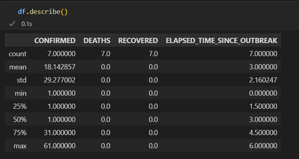
The DataFrame with the Covid-19 data in the previous section could have been created from two separate DataFrames, using concat(). First, create two DataFrames:
import datetime as dt
a=dt.datetime(2020,2,24,23,59)
b=dt.datetime(2020,2,7,23,59)
my_dict1={'LOCATION':7*['Afghanistan'],
'TIME':[a+dt.timedelta(days=i) for i in range(7)],
'ELAPSED_TIME_SINCE_OUTBREAK':[0, 1, 2, 3, 4, 5, 6],
'CONFIRMED':7*[1],
'DEATHS':7*[0],
'RECOVERED': 7*[0]}
my_dict2={'LOCATION':6*['Diamond Princess'],
'TIME':[b+dt.timedelta(days=i) for i in range(6)],
'ELAPSED_TIME_SINCE_OUTBREAK':[0, 1, 2, 3, 4, 5],
'CONFIRMED':[61, 61, 64, 135, 135, 175],
'DEATHS':6*[0],
'RECOVERED': 6*[0]}
df1=pd.DataFrame(my_dict1)
df2=pd.DataFrame(my_dict2)
Next, add them row wise (see figure 6):
df=pd.concat([df1,df2])
print(df) # to view
Figure 6: The result of concat().
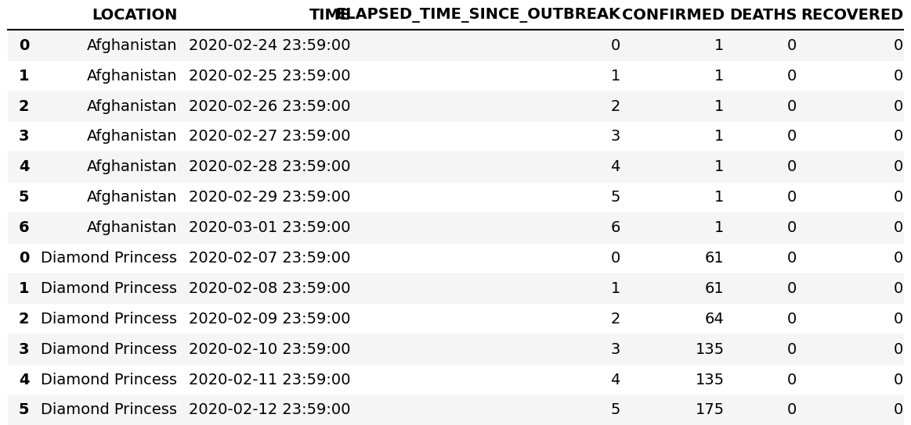
If you compare this DataFrame with the previous one, you will see that the index column is different. This is because when joining two DataFrames, Pandas does not reset the index by default. Doing df=pd.concat([df1,df2],ignore_index=True) resets the index. It is also possible to join DataFrames column wise:
pd.concat([df1,df2],axis=1)
In the previous example we had two non overlapping DataFrames (separate countries and times). It could also be the case that some of the data were overlapping. For example, continuing with the Covid-19 data, one could assume that there was one data set from one region and one from another region in the same country:
my_dict1={'LOCATION':7*['Diamond Princess'],
'TIME':[b+dt.timedelta(days=i) for i in range(7)],
'ELAPSED_TIME_SINCE_OUTBREAK':[0, 1, 2, 3, 4, 5, 6],
'CONFIRMED':7*[1],
'DEATHS':7*[0],
'RECOVERED': 7*[0]}
my_dict2={'LOCATION':2*['Diamond Princess'],
'TIME':[b+dt.timedelta(days=i) for i in range(2)],
'ELAPSED_TIME_SINCE_OUTBREAK':[0, 1],
'CONFIRMED':[60, 60],
'DEATHS':2*[0],
'RECOVERED': 2*[0]}
df1=pd.DataFrame(my_dict1)
df2=pd.DataFrame(my_dict2)
If we do pd.concat([df1,df2]), we will simply add all values after each other. What we want to do is to sum the number of confirmed, recovered and deaths for the same date. This can be done in several ways, but one way is to use pd.DataFrame.merge().You can specify the columns to merge, and choose outer which is union (all data from both frames) or inner which means the intersect (only data that exist in both DataFrames are merged). See figure 7 for a visual representation.
Figure 7: The result of using how=outer, inner, left, or right in pd.DataFrame.merge().
To be even more specific, after performing the commands
df1.merge(df2,on=['LOCATION','TIME'],how='outer')
df1.merge(df2,on=['LOCATION','TIME'],how='inner')
we get the results in figure 8
Figure 8: Merging to dataframes using outer (top) and inner (bottom).
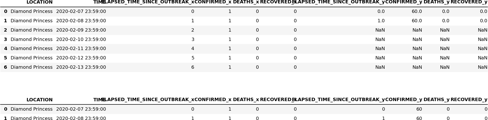
Clearly in this case we need to choose outer. In the merge process, pandas adds an extra subscript _x and _y on columns that contain the same header name. We also need to sum these columns, which can be done as follows
(see figure 9 for the final result):
df=df1.merge(df2,on=['LOCATION','TIME'],how='outer')
cols=['CONFIRMED','DEATHS', 'RECOVERED']
for col in cols:
df[col]=df[[col+'_x',col+'_y']].sum(axis=1) # sum row elements
df=df.drop(columns=[col+'_x',col+'_y']) # remove obsolete columns
# final clean up
df['ELAPSED_TIME_SINCE_OUTBREAK']=df['ELAPSED_TIME_SINCE_OUTBREAK_x']
df=df.drop(columns=['ELAPSED_TIME_SINCE_OUTBREAK_y','ELAPSED_TIME_SINCE_OUTBREAK_x'])
Figure 9: Result of outer merging and summing.
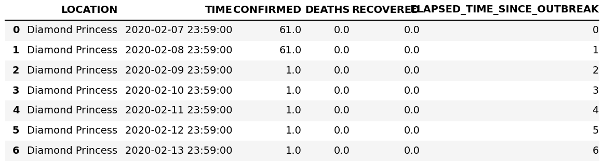
When working with big data sets you might want to split data into smaller sets, and also write them to different files (and folders) to view each individually in Excel. Working with files and folders in a way that will work on any kind of platform has always been a challenge, but it is greatly simplified by the Pathlib library.
List all sub directories and files: ``
from pathlib import Path
p=Path('.') # the directory where your python file is located
for x in p.iterdir():
if x.is_dir():
print('Found dir: ', x)
elif x.is_file():
print('Found file: ', x)
List all files of a type: ``
p=Path('.')
for p in p.rglob("*.png"):# rglob means recursively, searches sub directories
print(p.name)
If you want to print the full path do print(p.absolute()).
Create a directory: ``
Path('tmp_dir').mkdir()
If you run this code twice, it will produce an error because the directory already exists, then we can simply do Path('tmp_dir').mkdir(exist_ok=True).
Print current directory: ``
Path.cwd()
Joining paths: ``
p=Path('.')
new_path = p / 'tmp_dir' / 'my_file.txt'
print(new_path.absolute())
new_path.touch()
os We have already encountered the use of os when printing the working directory, i.e. print(os.getcwd()). If you want to create a directory named tmp, one can do
Creating a directory: ``
import os
os.mkdir('tmp')
Moving into a directory:
To move into that directory do`:
os.chdir('tmp')
os.chdir('..') # move back up
Using the Pathlib library: ``
df=pd.read_excel('../data/corona_data.xlsx')
countries = df['LOCATION'].unique() #skip duplicates
data_folder=Path('../covid-data')
data_folder.mkdir()
for country in countries:
new_path=data_folder / country
new_path.mkdir()
excel_file=country+'.xlsx'
df2=df[df['LOCATION']==country]
df2.to_excel(new_path/excel_file,index=False)
If you run this code twice, it will fail, but that can be resolved by e.g. data_folder.mkdir(exist_ok=True).
Using the os library:
``
# first get all the countries:
df=pd.read_excel('../data/corona_data.xlsx')
countries = df['LOCATION'].unique() #skip duplicates
os.mkdir('../covid-data')
os.chdir('../covid-data')
for country in countries:
os.mkdir(country)
os.chdir(country)
df2=df[df['LOCATION']==country]
df2.to_excel(country+'.xlsx',index=False)
os.chdir('..') # move up
This is a more robust way of creating a directory:
def my_mkdir(name):
if os.path.isdir(name):
print('Directory ', name,' already exists')
else:
os.mkdir(name)
print('creating directory ',name)
If you want to collect all data again, you can do as follows:
df_new=pd.DataFrame()
data_folder=Path('../covid-data')
for dir in data_folder.iterdir():
if dir.is_dir():
file=dir.name+'.xlsx'
df=pd.read_excel(dir/file)
print('Reading file ', file)
df_new=pd.concat([df_new,df],ignore_index=True)
Most likely in the last sections you have encountered long error messages from Python. Errors could be:
In the rest of this section, we will discuss how to avoid or to handle exceptions. The goal is to write code that catch all the exceptions before they happen, tries to do something with them or prints out a reasonable error message of what went wrong.
Let us look at the code that we have written so far, starting from the top of the notebook.
Accessing columns in Pandas: So far we have just accessed the columns directly, but it is very quick to write a wrong name, thus instead of doing
time=df['TIME']
we should try to check if the column exist before accessing it from the DataFrame. There are many ways of achieving this:
def get_column_from_dataframe(name,df):
'''
name: name of column
df: Pandas DataFrame
returns: column if found, and empty otherwise
'''
if name in df.columns:
return df[name]
else:
print('Column not found')
print('Possible column names are : ', df.columns)
return pd.Series(dtype=object)
# run the following code with df containing covid data
get_column_from_dataframe('TIME2',df)
get_column_from_dataframe('TIME',df)
Note the use of doc string in the beginning, the doc string will be printed in advanced editors once you write the name of the function. It also helps you to remember what the function does. It is a good practice to return a variable of the same type, because then the rest of the code can execute. If it is critical that you find the name of the column, you can always test from the outside:
s=get_column_from_dataframe('TIME2',df)
if s.empty:
print('Exiting ...')
exit() # note this shuts down the kernel
In the function get_column_from_dataframe many more things could go wrong, the user could pass a variable that is not a DataFrame, to catch all exceptions one can do:
def get_column_from_dataframe_v2(name,df):
'''
name: name of column
df: Pandas DataFrame
returns: column if found, and empty otherwise
'''
try:
return df[name]
except:
print('Something went wrong ...')
print('Maybe wrong column name?')
return pd.Series(dtype=object)
# run the following code with df containing covid data
get_column_from_dataframe_v2('TIME2',df)
The try and except handling is very elegant in Python, and a very easy way of making the code more robust. Python first tries df[name] if that is not successful (e.g. wrong column name, wrong DataFrame, maybe Pandas is not even imported) it jumps to the exception.
Another thing to consider is case insensitive search, we should be able to access a country or a header using e.g. Afghanistan or afghanistan. A possible solution could be to make sure that when you read in the column, both the DataFrame column and the passed column name are uppercase:
def get_column_from_dataframe_v3(name,df):
'''
name: name of column (case insensitive)
df: Pandas DataFrame
returns: column if found, and empty otherwise
'''
COL=df.columns.str.upper()
NAME=name.upper()
try:
idx=COL.get_loc(NAME)
return df.iloc[:,idx]
except:
print('Column not found')
print('Possible column names are : ', df.columns)
return pd.Series(dtype=object)
get_column_from_dataframe_v3('time',df)
Now, we might want to make our code more robust by collecting data from specific rows, e.g. a specific country df[df['LOCATION'] == 'Afghanistan']. This operation assumes 1) that the column LOCATION exists and 2) that the country is spelled correctly. However, we have already written code to get a column and check that it exists, but it is written inside a function with a different purpose. Thus, it is better to split the code above in two parts:
def get_col_index(name,df):
'''
name: name of column (case insensitive)
df: Pandas DataFrame
returns: pos if exists, and -1 otherwise
'''
COL=df.columns.str.upper()
NAME=name.upper()
try:
return COL.get_loc(NAME)
except:
print('Column not found')
print('Possible column names are : ', df.columns)
return -1
def get_column_from_dataframe_v4(name,df):
'''
name: name of column (case insensitive)
df: Pandas DataFrame
returns: column if found, and empty otherwise
'''
idx=get_col_index(name,df)
if idx>-1:
return df.iloc[:,idx]
else:
return pd.Series(dtype=object)
def get_rows_from_dataframe(name,df,col='LOCATION'):
'''
name: name of rows (case insensitive)
df: Pandas DataFrame
col: name of column to use as logical test
returns: DataFrame, and empty otherwise
'''
idx=get_col_index(col,df)
if idx>-1:
NAME=name.upper()
return df[df.iloc[:,idx].str.upper() == NAME]
else:
return pd.DataFrame()
get_rows_from_dataframe('afGhaniStan',df)
To summarize:
try and except functionality in PythonIf you are going to walk up a mountain, it is not enough to know the height of the mountain, you also want to know how steep the mountain is. Even if the mountain is low, it can still be difficult to reach the top if it is very steep. The steepness is how much the height changes as function of time (if we walk at the same pace) or how much the height changes with horizontal distance. To be more precise, let's say we move from \( x_a \) to \( x_b \), and the height increases from \( h_a \) to \( h_b \), the steepness is
$$ \begin{equation} \frac{h_b-h_a}{x_b-x_a}. \label{eq:tay:gradb} \end{equation} $$If we climb a ladder, the horizontal movement is small (\( x_b-x_a \) is small) and the increase in height is large, hence the steepness is large. If we walk a long a flat path we have no vertical movement and the steepness is zero (\( h_a=h_b \)). Mathematically, if we let \( x_b \) and \( x_a \) be infinitely close, the steepness is called a gradient, and we denote it by \( \nabla h(x) \). Note also that the sign of the gradient tells something about the direction. If we climb up a ladder the height is increasing (\( h_a < h_b \)) and the gradient is positive, on the other hand if we are climbing down the height is decreasing (\( h_a>h_b \)) and the gradient is negative.
If we consider the height of a mountain in two dimensions, \( h=h(x,y) \), the height is represented by the contour lines on a map. The spacing between the contour lines is the gradient, if the spacing between the contour lines is small the mountain side is steeper than if the spacing is larger.
If we are only considering a single variable, height as a function of time or position, \( x \), we often denote the gradient (\( \nabla h \)), \( h^\prime(x) \) and call it the derivative of \( h(x) \). In higher dimensions, e.g. \( h(x,y) \), we use the term partial derivatives, because there are now two different variables we can vary e.g. latitude and longitude. The gradient is now a vector, \( \nabla=[\partial h/\partial x, \partial h/\partial y] \). \( \partial h/\partial x \) is the partial derivative of \( h(x,y) \) with respect to \( x \), i.e. we keep \( y \) constant and only differentiate with respect to \( x \).
Another example where gradients are important is the flow of heat. Heat flows from hot to cold places, and the amount of heat is proportional to the temperature difference, i.e. a gradient in temperature. The flow of air is also from points of high pressure to low pressure, i.e. a gradient in pressure.
A primary task of a modeler is to predict something. If there are no gradients in a system, nothing will happen and there is no reason to model anything. Hence, an extremely important task when we model something is to analyze gradients carefully. If gradients are not represented correctly, the output of the simulation will introduce errors that can be so large that one cannot trust the results.
A computer can only deal with numbers. To simulate a physical system in a computer we have to divide space and time into finite pieces, and assign numbers to different parts of time and/or space.
Whenever we divide space and/or time into finite pieces, we introduce numerical errors. These errors tend to become smaller, but not always, when we use more pieces. The difference between the "true" answer and the answer obtained from a practical (numerical) calculation is called the numerical error.
When we divide space and time into finite pieces to represent them in a computer, a natural question is how many pieces do we need? Consider an almost trivial example, let say you want to visualize the function \( f(x)=\sin x \). To do this we need to choose where, which values of \( x \), we want to evaluate our function. To make an efficient program, we want to use as few points as possible but still capture the shape of the function. In figure 10, we have plotted \( \sin x \) for various discretization steps (\( \Delta x \), spacing between the points) in the interval \( [-\pi,\pi] \).
Figure 10: A plot of \( \sin x \) for different spacing (\( \Delta x \)) of the \( x \)-values.
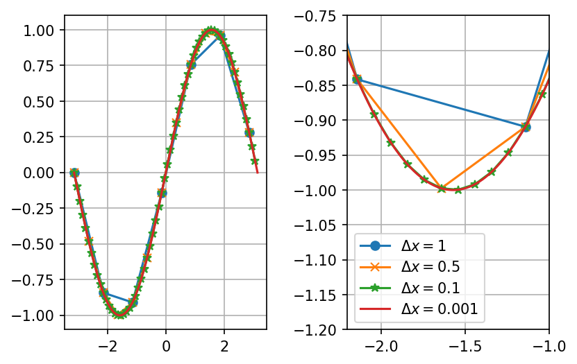
From the figure we see that in some areas only a couple of points are needed in order to represent the function well, and in some areas more points are needed. To state it more clearly; between \( [-1,1] \) a linear function (few points) approximate \( \sin x \) well, whereas in the area where the gradient of the function changes more rapidly e.g. between \( [-2,-1] \), we need the points to be more closely spaced to capture the behavior of the function.
What is a good representation of the function? We cannot rely on visual inspection every time, and most of the time we do not know the answer, so we would not know what to compare with. In the next section, we will show how the Taylor polynomial representation of a function is a natural starting point to answer this question.
How can we evaluate numerical errors if we do not know the true answer? There are at least two answers to this:
There are many ways of representing a function, \( f(x) \), like Fourier series and Legendre polynomials, but perhaps one of the most widely used is Taylor polynomials. Taylor series are perfect for computers, simply because they make possible to evaluate any function with a set of simple operations: addition, subtraction, and multiplication. Let us start off with the formal definition:
The Taylor polynomial, \( P_n(x) \) of degree \( n \) of a function \( f(x) \) at the point \( c \) is defined as:
$$ \begin{align} P_n(x) &= f(c)+f^\prime(c)(x-c)+\frac{f^{\prime\prime}(c)}{2!}(x-c)^2+\cdots+\frac{f^{(n)}(c)}{n!}(x-c)^n\nonumber\\ &=\sum_{k=0}^n\frac{f^{(k)}(c)}{k!}(x-c)^k.\label{eq:taylor:taylori} \end{align} $$Note that \( x \) can be anything, space, time, temperature, etc. If the series is around the point \( c=0 \), the Taylor polynomial \( P_n(x) \) is often called a Maclaurin polynomial. If the series converge (i.e. the higher order terms approach zero), then we can represent the function \( f(x) \) with its corresponding Taylor series around the point \( x=c \):
$$ \begin{align} f(x) &= f(c)+f^\prime(c)(x-c)+\frac{f^{\prime\prime}(c)}{2!}(x-c)^2+\cdots =\sum_{k=0}^\infty\frac{f^{(k)}}{k!}(x-c)^k.\label{eq:taylor:taylor} \end{align} $$Taylors formula, equation \eqref{eq:taylor:taylor}, states that if we know the function value and its gradients at a single point \( c \), we can estimate the function everywhere using only information from the single point \( c \). How can information from a single point be used to predict the behavior of the function everywhere? One way of thinking about this is to imagine an object moving in a constant gravitational field without air resistance. Newtons laws tell us that if we know the starting point e.g. (\( x(0) \)), the velocity (\( v=dx/dt \)), and the acceleration (\( a=dv/dt=d^2x/dt^2 \)) in that point we can predict the trajectory of the object. This trajectory is exactly the first terms in Taylor's formula, \( x(t)=x(0) + vt+at^2/2 \).
An example of how Taylors formula works for a known function, can be seen in figure 11, where we show the first nine terms in the Maclaurin series for \( \sin x \) (all even terms are zero).
Figure 11: Nine first terms of the Maclaurin series of \( \sin x \).
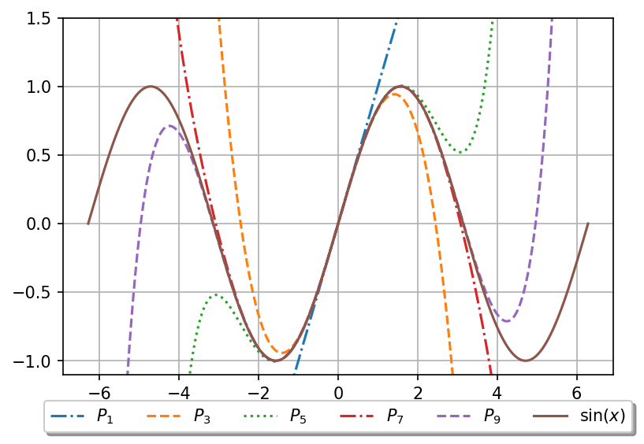
Notice that close to \( x=0 \) we only need one term, as we move further away from this point more and more terms need to be added. Thus, Taylors formula is only exact if we include an infinite number of terms. In practice, we only include a limited number of terms and truncate the series up to a given order. Luckily, Taylors formula include an estimate of the error we have when we truncate the series.
Notice that the mathematical formula is basically the next order term (\( n+1 \)) in the Taylor series, but with \( f^{(n+1)}(c)\to f^{(n+1)}(\eta) \). \( \eta \) is an (unknown) value in the domain \( [x,c] \).
Notice that if \( c \) is very far from \( x \) the truncation error increases. The fact that we do not know the value of \( \eta \) is usually not a problem, in many cases we just replace \( f(\eta) \) with the maximum value it can take on the domain. Equation \eqref{eq:taylor:error} gives us an direct estimate of discretization error.
Whenever you do e.g. np.sin(1) in Python or an equivalent statement in another language, Python has to tell the computer how to evaluate \( \sin x \) at \( x=1 \). Write a Python code that calculates \( \sin x \) up to a user specified accuracy.
Solution The Maclaurin series of \( \sin x \) is:
$$ \begin{equation} \sin x = x-\frac{x^3}{3!}+\frac{x^5}{5!}-\frac{x^7}{7!}+\cdots=\sum_{k=0}^{\infty}\frac{(-1)^n}{(2n+1)!}x^{2n+1}. \label{sin} \end{equation} $$If we want to calculate \( \sin x \) to a precision lower than a specified value we can do it as follows:
import numpy as np
# Sinus implementation using the Maclaurin Serie
# By setting a value for eps this value will be used
# if not provided
def my_sin(x,eps=1e-16):
f = power = x
x2 = x*x
sign = 1
i=0
while(power>=eps):
sign = - sign
power *= x2/(2*i+2)/(2*i+3)
f += sign*power
i += 1
print('No function evaluations: ', i)
return f
x=0.8
eps = 1e-9
print(my_sin(x,eps), 'error = ', np.sin(x)-my_sin(x,eps))
This implementation needs some explanation:
As stated earlier many models are described by differential equations. Differential equations contain derivatives, and we need to tell the computer how to calculate these. By using a simple transformation, \( x\to x+h \) and \( c\to x \) (hence \( x-c\to h \)), Taylors formula in equation \eqref{eq:taylor:taylor} can be written as:
$$ \begin{equation} f(x+h)=f(x)+f^\prime(x)h+\frac{1}{2}f^{\prime\prime}(x)h^2+\cdots. \label{eq:taylor:t} \end{equation} $$This is useful because this equation contains the derivative of \( f(x) \) on the right hand side. To be even more explicit let's truncate the series to a certain power. Remember that you can always do this but we need to replace \( x \) with \( \eta \) in the last term we choose to keep
$$ \begin{equation} f(x+h)=f(x)+f^\prime(x)h+\frac{1}{2}f^{\prime\prime}(\eta)h^2 \label{eq:taylor:t3} \end{equation} $$where \( \eta\in[x,x+h] \). Solving this equation with respect to \( f^\prime(x) \) gives:
$$ \begin{equation} f^\prime(x)=\frac{f(x+h)-f(x)}{h}-\frac{1}{2}f^{\prime\prime}(\eta)h. \label{eq:taylor:fd} \end{equation} $$Note that if \( h\to0 \), this expression is equal to the definition of the derivative. The beauty of equation \eqref{eq:taylor:fd} is that it contains an expression for the error when \( h \) is not zero. Equation \eqref{eq:taylor:fd} is usually called the forward difference . As you might guess, we can also choose to use the backward difference by simply replacing \( h\to-h \). Is equation \eqref{eq:taylor:fd} the only formula for the derivative? The answer is no, and we are going to derive the formula for the central difference , by writing Taylors formula for \( x+h \) and \( x-h \) up to the third order:
$$ \begin{align} f(x+h)&=f(x)+f^\prime(x)h+\frac{1}{2}f^{\prime\prime}(x)h^2+\frac{1}{3!}f^{(3)}(\eta_1)h^3, \label{eq:taylor:c1}\\ f(x-h)&=f(x)-f^\prime(x)h+\frac{1}{2}f^{\prime\prime}(x)h^2-\frac{1}{3!}f^{(3)}(\eta_2)h^3. \label{eq:taylor:c2} \end{align} $$where \( \eta_1\in[x,x+h] \), and \( \eta_2\in[x-h,x] \). Subtracting equation \eqref{eq:taylor:c1} and \eqref{eq:taylor:c2}, we get the following expression for the central difference:
$$ \begin{equation} f^\prime(x)=\frac{f(x+h)-f(x-h)}{2h} -\frac{h^2}{6}f^{(3)}(\eta),label{eq:taylor:cd} \end{equation} $$where \( \eta\in[x-h,x+h] \). Note that the error term in this equation is one order higher than in equation \eqref{eq:taylor:fd}, meaning that it is expected to be more accurate. Figure 12 is a graphical representation of the finite difference approximations to the derivative.
Figure 12: A graphical interpretation of the forward and central difference formula.
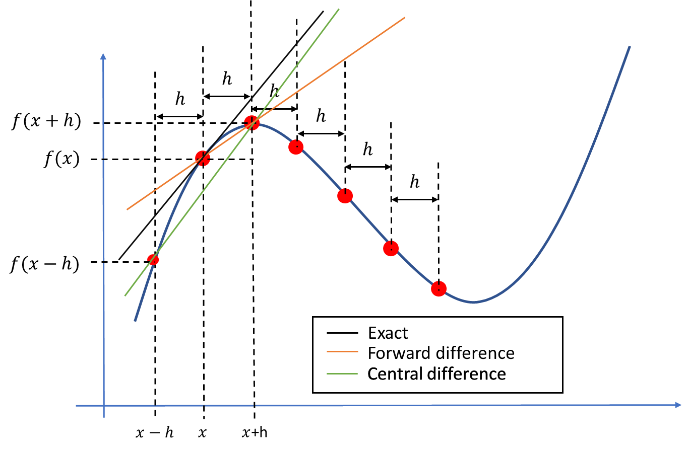
We are now in the position to derive a formula for the second order derivative. Instead of subtracting equation \eqref{eq:taylor:c1} and \eqref{eq:taylor:c2}, we can add them. Then the first order derivative disappear and we are left with an expression for the second derivative:
$$ \begin{equation} f^{\prime\prime}(x) = \frac{f(x+h)+f(x-h)-2f(x)}{h^2}- \frac{h^2}{12}f^{(4)}(\eta) \label{eq:taylor:2der}, \end{equation} $$We can also calculate higher order derivatives by expanding about \( x\pm h \) and \( x\pm 2h \), adding one more term it follows from equation \eqref{eq:taylor:cd}:
$$ \begin{align} f(x+h)-f(x-h)&=2hf^\prime(x)+\frac{2}{3!}h^3f^{(3)}(x)+\frac{2}{5!}h^5f^{(5)}(\eta),\no \label{_auto2}\\ f(x+2h)-f(x-2h)&=2(2h)f^\prime(x)+\frac{2}{3!}(2h)^3f^{(3)}(x)+\frac{2}{5!}h^5f^{(5)}(\eta). \label{} \end{align} $$It is now possible to find an expression for the third derivative:
$$ \begin{equation} f^{(3)}(x) = \frac{f(x-h)-f(x+h)-\frac{1}{2}f(x-2h)+\frac{1}{2}f(x+2h)}{h^3}+ \frac{h^2}{4}f^{(5)}(\eta) \label{eq:taylor:3der}, \end{equation} $$or a higher order first derivative:
$$ \begin{equation} f^{\prime}(x) = \frac{2f(x+h)-2f(x-h)-\frac{1}{4}f(x+2h)+\frac{1}{4}f(x-2h)}{3h}+ \frac{h^4}{30}f^{(5)}(\eta) \label{eq:taylor:5der}. \end{equation} $$Choose a specific point, e.g. \( x=1 \), and calculate the numerical error for various values of the step size \( h \).
Solution: The derivative of \( \sin x \) is \( \cos x \), we can calculate the numerical derivatives using Python
def f(x):
return np.sin(x)
def fd(f,x,h):
""" f'(x) forward difference """
return (f(x+h)-f(x))/h
def fc(f,x,h):
""" f'(x) central difference """
return 0.5*(f(x+h)-f(x-h))/h
def fdd(f,x,h):
""" f''(x) second order derivative """
return (f(x+h)+f(x-h)-2*f(x))/(h*h)
def fd3(f,x,h):
""" f'''(x) third order derivative """
return (2*f(x-h)-2*f(x+h)-f(x-2*h)+f(x+2*h))/(2*h*h*h)
def fd_4(f,x,h):
""" f'(x) fourth order """
return (8*f(x+h)-8*f(x-h)-f(x+2*h)+f(x-2*h))/(12*h)
x=1
h=np.logspace(-15,0.1,10)
plt.plot(h,np.abs(np.cos(x)-fd(f,x,h)), '-o',label='forward difference')
plt.plot(h,np.abs(np.cos(x)-fc(f,x,h)),'-x', label='central difference')
plt.plot(h,np.abs(np.cos(x)-fd_4(f,x,h)),'-*',label='derivative - fourth order')
plt.plot(h,np.abs(-np.sin(x)-fdd(f,x,h)),'-*',label='second derivative')
h=np.logspace(-7,0.1,10)
plt.plot(h,np.abs(-np.cos(x)-fd3(f,x,h)),'-*',label='third derivative')
plt.grid()
plt.legend()
plt.xscale('log')
plt.yscale('log')
plt.xlabel('Step size $h$')
plt.ylabel('Numerical error')
Figure 13 shows the result of the code above.
Figure 13: Numerical error of derivatives of \( \sin x \) for various step sizes.
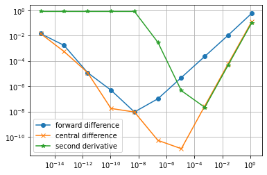
There are several important lessons from figure 13:
The numerical error has a minimum, it does not continue to decrease when \( h \) decreases. The explanation for this behavior are two competing errors: truncation errors and roundoff errors. The truncation errors have already been discussed in great detail, in the next section we will look at roundoff errors.
In a computer a floating point number, \( x \), is represented as:
$$ \begin{align} x=\pm q2^m. \label{eq:taylor:sci2} \end{align} $$This is very similar to our usual scientific notation where we represent large (or small numbers) as \( \pm q E m=\pm q 10^{m} \). The processor in a computer handles a chunk of bits at one time, this chunk of bits is usually called a word. The number of bits (or bytes which almost always means a group of eight bits) in a word is handled as a unit by a processor. Most modern computers use 64-bits (8 bytes) processors. We are not going into all the details, the most important message is that the units handled by the processor are finite. Thus we cannot, in general, store numbers in a computer with infinite accuracy.
Machine precision, \( \epsilon_M \) is the smallest number we can add to one and get something different than one, i.e. \( 1+\epsilon_M>1 \). For a 64-bits computer this value is \( \epsilon_M=2^{-52}\simeq2.2204\times10^{-16} \).
In the next section we explain why the machine precision has this value, but if you just accept this for a moment, we can demonstrate why the machine precision is important and you need to care about it. First, just to convince you that the machine precision has the value of \( 2^{-52} \), you can do the following in Python:
print(1+2**-52) # prints a value larger than 1
print(1+2**-53) # prints 1.0
Next, consider the simple calculation
a=0.1+0.2
b=0.3
print(a==b) # gives False
Why is a==b false if this calculation involves only numbers with one decimal? The reason is that the computer uses the binary system, and in the binary system there is no way of representing 0.2 and 0.3 with a finite number of bits. As an example 0.2 in the binary system is:
Note that we use the subscript \( _{10} \) and \( _2 \) to represent the decimal and binary system respectively. Thus in the computer 0.2 will be represented as \( 0.1999\ldots \) and when we add 0.1 we will get a number really close to 0.3 but not equal to 0.3. Some floats have an exact binary representation e.g. \( 0.125_{10}=2^{-3}_{10}=0.001_2 \). Thus the following code will produce the expected result
a=0.125+0.25
b=0.375
print(a==b) # gives True
Whenever you want to compare if two floats, \( a \) and \( b \), are equal in a computer program, you should never do \( a==b \) because of roundoff errors. Rather you should choose a variant of \( |a-b| < \epsilon \), where you check if the numbers are close enough. In practice, you may also want to normalize the values and do \( |1-b/a| < \epsilon \).
Roundoff errors can play a big role in calculations. This is particularly apparent when subtracting two numbers of similar magnitude as illustrated in the following code:
h=2**-53
a=1+h
b=1-h
print((a-b)/h) # analytical result is 2
The calculation above is very similar to the calculation performed when evaluating derivatives, and if you run the code you will see that Python does not give the expected value of 2.
A step size that is too low will give higher numerical error because roundoff errors dominate the numerical error.
There is a simple trick you can use sometimes to avoid roundoff errors [3]. In practice, we can never get rid of roundoff errors in the calculation \( f(x+h) \), but since we can choose the step size \( h \), we can choose values such that \( x \) and \( x+h \) differ by an exact binary number
x=1
h=0.0002
temp = x+h
h=temp-x
print(h) # improved value of h with exact binary representation
In the next sections we will show why \( \epsilon_M=2^{-52} \), and why a finite word size implies a maximum and minimum number.
Binary numbers are used in computers because processors are made of billions of transistors, the end states of a transistor are off or on, representing a 0 or 1 in the binary system. Assume, for simplicity, that we have a processor that uses a word size of 4 bits (instead of 64 bits). How many unsigned (positive) integers can we represent in such processor? Lets write down all the possible combinations of ones and zeros and also do the translation from the base 2 numerical system to the base 10 numerical system:
$$ \begin{equation} \begin{matrix} 0&0&0&0=0\cdot 2^3+0\cdot 2^2+0\cdot 2^1+0\cdot 2^0=0\\ 0&0&0&1=0\cdot 2^3+0\cdot 2^2+0\cdot 2^1+1\cdot 2^0=1\\ 0&0&1&0=0\cdot 2^3+0\cdot 2^2+1\cdot 2^1+0\cdot 2^0=2\\ 0&0&1&1=0\cdot 2^3+0\cdot 2^2+1\cdot 2^1+1\cdot 2^0=3\\ 0&1&0&0=0\cdot 2^3+1\cdot 2^2+0\cdot 2^1+0\cdot 2^0=4\\ 0&1&0&1=0\cdot 2^3+1\cdot 2^2+0\cdot 2^1+1\cdot 2^0=5\\ 0&1&1&0=0\cdot 2^3+1\cdot 2^2+1\cdot 2^1+0\cdot 2^0=6\\ 0&1&1&1=0\cdot 2^3+1\cdot 2^2+1\cdot 2^1+1\cdot 2^0=7\\ 1&0&0&0=1\cdot 2^3+0\cdot 2^2+0\cdot 2^1+0\cdot 2^0=8\\ 1&0&0&1=1\cdot 2^3+0\cdot 2^2+0\cdot 2^1+1\cdot 2^0=9\\ 1&0&1&0=1\cdot 2^3+0\cdot 2^2+1\cdot 2^1+0\cdot 2^0=10\\ 1&0&1&1=1\cdot 2^3+0\cdot 2^2+1\cdot 2^1+1\cdot 2^0=11\\ 1&1&0&0=1\cdot 2^3+1\cdot 2^2+0\cdot 2^1+0\cdot 2^0=12\\ 1&1&0&1=1\cdot 2^3+1\cdot 2^2+0\cdot 2^1+1\cdot 2^0=13\\ 1&1&1&0=1\cdot 2^3+1\cdot 2^2+1\cdot 2^1+0\cdot 2^0=14\\ 1&1&1&1=1\cdot 2^3+1\cdot 2^2+1\cdot 2^1+1\cdot 2^0=15 \end{matrix} . \label{eq:taylor:bin4} \end{equation} $$Hence, with a 4 bits word size, we can represent \( 2^4=16 \) integers. The largest number is \( 2^4-1=15 \), and the smallest is zero. What about negative numbers? If we use a 4 bits word size, there are still \( 2^4=16 \) numbers, but they are distributed differently. The common way to do this is to reserve the first bit to be a sign bit, a "0" is positive and "1" is negative, i.e. \( (-1)^0 = 1 \), and \( (-1)^1=-1 \). Replacing the first bit with a sign bit in equation \eqref{eq:taylor:bin4}, we get the following sequence of numbers 0,1,2,3,4,5,6,7,-0,-1,-2,-3,-4,-5,-6,-7. The "-0" might seem strange but is used in the computer to extend the real number line \( 1/0=\infty \), whereas \( 1/-0=-\infty \). In general when there are \( m \) bits, we have a total of \( 2^m \) numbers. If we include negative numbers, we can choose to have \( 2^{m-1}-1 \) negative and \( 2^{m-1}-1 \) positive numbers, and negative and positive zero, i.e. \( 2^{m-1}-1+2^{m-1}-1+1+1=2^m \).
What about real numbers? As stated earlier we use the scientific notation as in equation \eqref{eq:taylor:sci2}, but still the scientific notation might have a real number in front, e.g. \( 1.25\cdot 10^{-3} \). To represent the number \( 1.25 \) in binary format we use a decimal separator, just as with base 10. In this case 1.25 is 1.01 in binary format
$$ \begin{equation} 1.01=1\cdot 2^0 + 0\cdot 2^{-1}+1\cdot 2^{-2}=1 + 0 + 0.25=1.25. \label{eq:taylor:b2fr} \end{equation} $$The scientific notation is commonly referred to as a floating point representation. The term "floating point" is used because the decimal point is not in the same place, in contrast to the fixed point where the decimal point is always in the same place. To store the number 1e-8=0.00000001 in floating point format, we only need to store 1 and -8 (and possibly the sign), whereas in fixed point format we need to store all 9 numbers. In equation \eqref{eq:taylor:bin4}, we need to use one bit to store the sign, leaving (in the case of 4 bits word size) three bits to be distributed among the mantissa, \( q \), and the exponent, \( m \). It is not given how many bits should be used for the mantissa and the exponent. Thus there are choices to be made, and all modern processors use the same standard, the IEEE Standard 754-1985.
A 64 bits word size is commonly referred to as double precision, whereas a 32 bits word size is termed single precision. In the following, we will consider a 64 bits word size. We would like to know: what is the roundoff error, what is the largest number, and what is the smallest number that can be represented in the computer? Almost all floating point numbers are represented in normalized form. In normalized form, the mantissa is written as \( M=1.F \), and it is only \( F \) that is stored, \( F \) is termed the fraction. We will return to the special case of some of the unnormalized numbers later. In the IEEE standard one bit is reserved for the sign, 52 for the fraction (\( F \)), and 11 for the exponent (\( m \)), see figure 14 for an illustration.
Figure 14: Representation of a 64 bits floating point number according to the IEEE 754-1985 standard. For a 32 bits floating point number, 8 bits are reserved for the exponent and 23 for the fraction.
The exponent must be positive to represent numbers with absolute value larger than one, and negative to represent numbers with absolute value less than one. To make this more explicit the simple formula in equation \eqref{eq:taylor:sci2} is rewritten as:
$$ \begin{equation} \pm q 2^{E-e}. \label{eq:taylor:ieee} \end{equation} $$The number \( e \) is called the bias and has a fixed value. For 64 bits it is \( 2^{11-1}-1=1023 \) (32-bits: \( e=2^{8-1}-1=127 \)). The number \( E \) is represented by 11 bits and can thus take values from 0 to \( 2^{11}-1=2047 \). If we have an exponent of e.g. -3, the computer adds 1023 to that number and store the number 1020. Two numbers are special numbers and they are reserved to represent infinity and zero, \( E=0 \) and \( E=2047 \). Thus the largest and smallest possible numerical value of the exponent is: 2046-1023=1023, and 1-1023=-1022, respectively. The fraction of a normalized floating point number takes on values from \( 1.000\ldots 00 \) to \( 1.111\ldots 11 \). Thus the lowest normalized number is:
$$ \begin{align} 1.000 + \text{ (49 more zeros)}\cdot 2^{-1022}&=2^0\cdot2^{-1022}\no \label{_auto3}\\ &=2.2250738585072014\cdot 10^{-308}. \label{} \end{align} $$It is possible to represent smaller numbers than \( 2.22\cdot10^{-308} \), by allowing unnormalized values. If the exponent is -1022, then the mantissa can take on values from \( 1.000\ldots 00 \) to \( 0.000\ldots 01 \), but then accuracy is lost. So the smallest possible number is \( 2^{-52}\cdot{2^-1022}\simeq4.94\cdot10^{-324} \). The highest normalized number is
$$ \begin{align} 1.111 + &\text{ (49 more ones)}\cdot2^{1023}=(2^0+2^{-1}+2^{-2}+\cdots+2^{-52})\cdot2^{1023}\no \label{_auto4}\\=(2-2^{-52})\cdot2^{1023} &=1.7976931348623157\cdot 10^{308}. \label{} \end{align} $$If you enter print(1.8*10**(308)) in Python, the answer will be Inf. If you enter print(2*10**(308)), Python will (normally) give an answer. This is because
the number \( 1.8\cdot10^{308} \) is floating point number, whereas \( 2\cdot 10^{308} \) is an integer, and Python does something clever when it comes to representing integers.
Python has a third numeric type called long int, which can use the available memory to represent an integer.
What about the machine precision? The machine precision, \( \epsilon_M \), is the smallest possible number that can be added to one, and get a number larger than one, i.e. \( 1+\epsilon_M>1 \). The smallest possible value of the mantissa is \( 0.000\ldots 01=2^{-52} \), thus the lowest number must be of the form \( 2^{-52}\cdot 2^{m} \). If the exponent , \( m \), is lower than 0 then when we add this number to 1, we will only get 1. Thus the machine precision is \( \epsilon_M=2^{-52}=2.22\cdot10^{-16} \) (for 32 bits \( 2^{-23}=1.19\cdot10^{-7} \)). In practical terms this means that e.g. the value of \( \pi \) is \( 3.14159265358979323846264338\ldots \), but in Python it can only be represented by 16 digits: \( 3.141592653589793 \).
All numerical floating point operations introduce roundoff errors at each step in the calculation due to finite word size. These errors accumulate in long simulations and introduce random errors in the final results. After \( N \) operations, the error is at least \( \sqrt{N}\epsilon_M \) (the square root is a random walk estimate, and we assume that the errors are randomly distributed). The roundoff errors can be much, much higher when numbers of equal magnitude are subtracted. You might be so unlucky that after one operation the answer is completely dominated by roundoff errors.
The roundoff error when we represent a floating point number \( x \) in the machine will be of the order \( x/10^{16} \) (not \( 10^{-16} \)). In general, when we evaluate a function, the error will be of the order \( \epsilon|f(x)| \), where \( \epsilon\sim10^{-16} \). Thus equation \eqref{eq:taylor:fd} is modified in the following way when we take into account the roundoff errors:
$$ \begin{align} f^\prime(x)=\frac{f(x+h)-f(x)}{h}\pm\frac{2\epsilon|f(x)|}{h}-\frac{h}{2}f^{\prime\prime}(\eta),\label{eq:taylor:derr2} \end{align} $$we do not know the sign of the roundoff error, so the total error \( R_2 \) is:
$$ \begin{align} R_2=\frac{2\epsilon|f(x)|}{h}+\frac{h}{2}|f^{\prime\prime}(\eta)|.\label{eq:taylor:derr3} \end{align} $$We have put absolute values around the function and its derivative to get the maximal error, it might be the case that the roundoff error cancel part of the truncation error. However, the roundoff error is random in nature and will change from machine to machine, and each time we run the program. Note that the roundoff error increases when \( h \) decreases, and the approximation error decreases when \( h \) decreases. This is exactly what we saw in figure 13. We can find the best step size, by differentiating \( R_2 \) and put it equal to zero:
$$ \begin{align} \frac{dR_2}{dh}&=-\frac{2\epsilon|f(x)|}{h^2}+\frac{1}{2}f^{\prime\prime}(\eta)=0\nonumber\\ h&=2\sqrt{\epsilon\left|\frac{f(x)}{f^{\prime\prime}(\eta)}\right|}\simeq 2\cdot10^{-8},\label{eq:taylor:derr4} \end{align} $$In the last equation we have assumed that \( f(x) \) and its derivative is \( ~1 \). This step size corresponds to an error of order \( R_2\sim10^{-8} \). Inspecting figure 13 we see that the minimum is located at \( h\sim10^{-8} \).
We can perform a similar error analysis as we did before, and then we find for equation \eqref{eq:taylor:cd} and \eqref{eq:taylor:2der} that the total numerical error is:
$$ \begin{align} R_3&=\frac{\epsilon|f(x)|}{h}+\frac{h^2}{6}f^{(3)}(\eta),\label{eq:taylor:derr3b}\\ R_4&=\frac{4\epsilon|f(x)|}{h^2}+\frac{h^2}{12}f^{(4)}(\eta),\label{eq:taylor:derr4b} \end{align} $$respectively. Differentiating these two equations with respect to \( h \), and setting the equations equal to zero, we find an optimal step size of \( h\sim10^{-5} \) for equation \eqref{eq:taylor:derr3b}, which gives an error of \( R_2\sim 10^{-16}/10^{-5}+(10^{-5})^2/6\simeq10^{-10} \), and \( h\sim10^{-4} \) for equation \eqref{eq:taylor:derr4b}, which gives an error of \( R_4\sim 4\cdot10^{-16}/(10^{-4})^2+(10^{-4})^2/12\simeq10^{-8} \). Note that we get the surprising result for the first order derivative in equation \eqref{eq:taylor:cd}, that a higher step size gives a more accurate result.
Most problems in nature are nonlinear. That means that the system response is not proportional to the system variables, e.g. doubling the CO$_2$ concentration in the atmosphere does not lead to a doubling of the earth surface temperature. Still, linear solvers lies at the heart of all grid based models describing e.g. the earths climate. The reason is that although the global model is nonlinear, the model can be formulated locally as a linear model. Typically the simulation code solves the nonlinear problem through a series of steps where each step is a solution of a linear problem. The topic of solving linear systems of equations have been extensively studied, and sophisticated linear equation solving packages have been developed. Python uses functions from the LAPACK library.
In the next sections we will show in detail how differential equations can be solved as a linear problem. We will first start off by deriving one of the most useful differential equations describing conservation of a quantity, e.g. mass, energy, momentum, charge.
The continuity equation is fundamental to all mathematical models describing a physical phenomenon. To gain more understanding of its origin we will take the time to derive it from first principles. We will do so in one dimension, consider a volume in space between \( A(x) \) and \( A(x+dx) \) in figure 15. To be concrete we will assume that the green arrows represents the flow of heat. Thus there are heat flowing into and out of the system, and also heat that can be generated within the system by e.g. chemical reactions. The conservation equation can be formulated with words
Figure 15: A closed volume, \( V(x)=A(x)dx \), where a quantity flows in and out (illustrated by the green lines), there is also a possibility for generation or loss of the same quantity inside the volume.
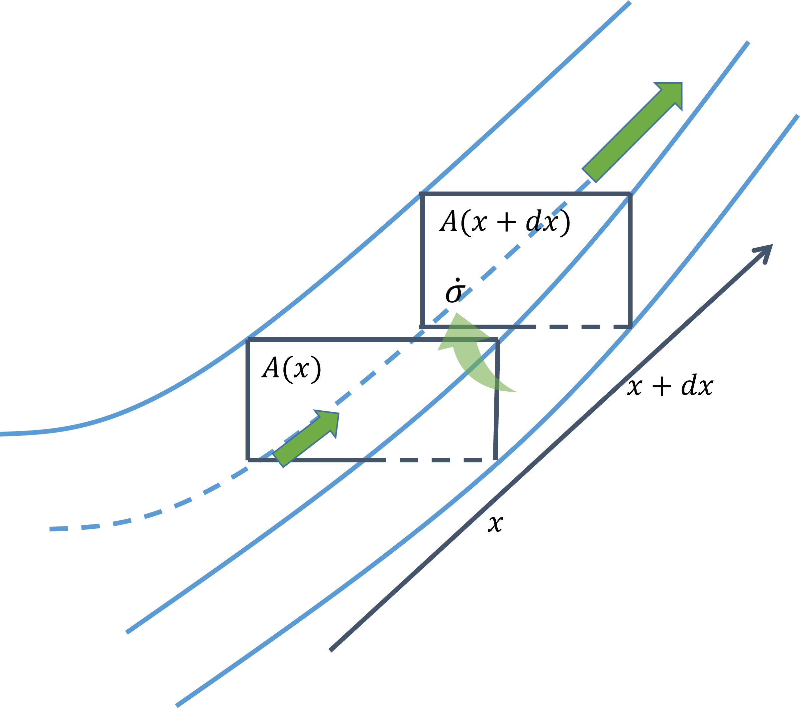
We formulate the conservation equation per time, because we would like to investigate the time dependency of heat flow. The next step is to replace the terms ''heat into/out of'' with a useful mathematical quantity. It turns out that the term flux is particularly useful, because it is an intensive quantity. An intensive quantity is a quantity that is independent of the system size, like density. The flux is denoted by the symbol \( J \)
$$ \begin{equation} J(x)=\frac{\text{quantity (heat)}}{\text{area}\cdot\text{time}}, \label{} \end{equation} $$and was first introduced by Isaac Newton. Thus to find the amount of heat transported through a surface per time we simply multiply the flux with the surface area. Next, we define the heat per volume as \( q(x) \), and the heat produced per volume as \( \sigma \). Then equation \eqref{eq:lin:flux} can be written
$$ \begin{align} \frac{J(x)A(x)}{dt}-\frac{J(x+dx)A(x+dx)}{dt}&+ \frac{\sigma(t+dt)V(x)-\sigma(t)V(x)}{dt}\no \label{_auto6}\\= &\frac{q(t+dt)V(x)-q(t)V(x)}{dt}. \label{eq:lin:cont1} \end{align} $$Using Taylor expansion we can write
$$ \begin{align} J(x+dx)A(x+dx) &=J(x)A(x)+\frac{d(J(x)A(x)}{dx}dx+{\cal O}(dx^2), \label{eq:lin:cont2} \\ \sigma(t+dt) &=\sigma(t)+\frac{d\sigma}{dt}dt+{\cal O}(dt^2),\no \label{_auto7}\\ q(t+dt) &=q(t)+\frac{dq}{dt}dt+{\cal O}(dt^2), \label{eq:lin:cont3} \end{align} $$Inserting these equations into equation\eqref{eq:lin:cont1}, using \( V(x)=A(x)dx \), and taking the limit \( dx,dt\to0 \) we arrive at
We have kept the area in equation \eqref{eq:lin:cont4}, because we are only considering flow of heat in one dimension and then we can allow for the area to change in the \( y \) and \( z \) dimension. When the continuity equation is derived in three dimensions, one consider a volume \( V(x,y,z)=dxdydz \), then the area in equation \eqref{eq:lin:cont4} will drop out and \( d/dx\to\nabla=[\partial/\partial x, \partial/\partial y, \partial/\partial z] \)
How can a differential equation be formulated as a matrix problem? To see this we need to discretize equation \eqref{eq:lin:cont4}. We will discretize the equation in one dimension, and we will use a regular grid, where we keep the same distance, \( h \), between the points. Assume our system has dimension \( L \), in figure 16, there are two examples of discretization.
Figure 16: Examples of discretization of a system with length \( L \) (left) the boundaries lies exactly at the boundary nodes, (right) boundary nodes lies half-way between the grid nodes.
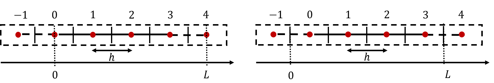
There are many things to consider when discretizing equations, but perhaps the most important are
We have already encountered finite difference discretization in the last chapter where we used various approximations to calculate derivatives, i.e. we calculate derivatives by calculating the difference between \( f(x+h) \) and \( f(x) \) (or \( f(x+h) \) and \( f(x-h) \)). The finite volume formulation is also a finite difference scheme, but it is formulated such that we always ensure that the quantity we are simulating is conserved (regardless of numerical errors). Formally, one transforms the divergence term (the term that contains the flux \( \nabla \mathbf{J} \)) into a surface integral using the Gauss (divergence) theorem
$$ \begin{equation} \int_V\nabla\cdot \mathbf{J}=\int_S\mathbf{J}\cdot \hat{\mathbf{n}} \label{eq:lin:dgau} \end{equation} $$There are excellent books written on the finite volume method, see e.g. [4]. Here we will mainly focus on the key idea, which is to formulate a scheme that conserves the flux. The process of formulating a finite volume scheme is very close to the derivation of the continuum equation we did in the beginning of the chapter. We consider our numerical discretization as several boxes (exactly like the dotted lines in figure 16), the continuum equation is written down for each box an therefore we are ensured that the quantities are conserved regardless of the size of the boxes.
Let us consider the heat equation, where the heat flux is given as
$$ \begin{equation} J=-k\frac{dT}{dx}, \label{eq:lin:e1} \end{equation} $$where \( k \) describes the thermal conductivity of the solid. We will further assume that there is a constant source term \( d\sigma/dt=\kappa=const \), and steady state \( dq/dt=0 \). Then equation \eqref{eq:lin:cont4} can be written
$$ \begin{equation} k\frac{d^2T}{dx^2}+\kappa=0, \label{eq:lin:e2} \end{equation} $$The finite difference discretization is now straight forward, just replace the term \( d^2T/dx^2 \) with a suitable finite difference formula for the second derivative, e.g.
$$ \begin{align} k\frac{T(x+h)+T(x-h)-2T(x)}{h^2}+\kappa&=0,\no \label{_auto8}\\ k\frac{T_{i+1}+T_{i-1}-2T_i}{h^2}+\kappa&=0. \label{eq:lin:e3} \end{align} $$Note that in the last equations we have introduced the short hand notation \( T(x)\equiv T_i \), and \( T(x\pm h)=T_{i\pm 1} \).
The finite volume discretization approach is slightly different, we then operate with cell averaged values. The heat in the box is the volume averaged heat. Since the divergence term is replaced with a surface integral, equation \eqref{eq:lin:dgau}, we calculate the flow of heat into the boundary \( x-h/2 \) and out of the boundary \( x+h/2 \) as
$$ \begin{equation} \frac{J_{x+h/2} -J_{x-h/2}}{h}+\kappa=0. \label{eq:lin:e4} \end{equation} $$Note that this equation is exactly the same as equation \eqref{eq:lin:cont1}, with the only exception that the point \( x \) is placed in the center of the box. The diffusive flux is \( -kdT/dx \), and in order to be consistent with this law we have to write the flux between two cells as proportional to the difference between the cell average values
$$ \begin{align} -\frac{k}{h}\left(\frac{T_{i+1}-T_i}{h}-\frac{T_{i}-T_{i-1}}{h}\right)+\kappa&=0\nonumber,\\ k\frac{T_{i+1}+T_{i-1}-2T_i}{h^2}+\kappa&=0. \label{eq:lin:e5} \end{align} $$In this case we actually recover the same equation as we did for the finite difference approach equation \eqref{eq:lin:e3}.
Basically there are two types of boundary conditions i) the flux is known at the edges of the computational domain and/or ii) the physical quantity we are solving for is known. To be more specific, and to see how all connects, we will continue with the example above on the heat equation. Consider the outline of nodes as in figure 16, we will consider two possibilities i) where the physical boundary lies exactly between nodes, and ii) where the physical boundary is exactly at the grid nodes. In the finite volume scheme, we need to make sure that the flux over the surface is calculated correctly, and then we have to use the formulas in figure 17
$$ \begin{equation} \left.\frac{dT}{dx}\right|_{x=0}=\frac{T_{-1}-T_0}{h}+{\cal O}(h^2). \label{eq:lin:nn} \end{equation} $$Note that if the boundary node lies exactly at \( x=0 \), we have to replace \( T_0 \) with \( T_{1} \). A flux boundary condition is usually called Neumann boundary condition after Carl Neumann (1832–1925) a German mathematician, and the constant value boundary condition is called Dirichlet boundary condition after another German mathematician, Peter Gustav Lejeune Dirichlet (1805–1859). If the boundary nodes lies exactly at the physical boundary, it is trivial to implement, just replace \( T_N=T_b \) i.e. with the boundary value. On the other hand if the physical boundary lies a distance from the node, we have to interpolate the value from the physical coordinate to the simulation node.
$$ \begin{align} T_N&=T(x+h)=T(x+h/2+h/2)\no \label{_auto9}\\ &=T_{N+1/2}+\left.\frac{dT}{dx}\right|_{x+h/2}+{\cal O}(h^2)=T_b+\frac{T_N-T_{N-1}}{h}\frac{h}{2}+{\cal O}(h^2),\text{ hence:}\nonumber\\ T_N&=2T_b-T_{N-1}+{\cal O}(h^2).label{eq:lin:dd} \end{align} $$Notice that the result make sense, \( T_b=(T_N+T_{N-1})/2 \), i.e. the value midway is the average of the values at the neighboring nodes.
Figure 17: Flux boundary condition (Neumann), and value boundary condition (Dirichlet). For the upper right boundary condition we use Taylors formula to interpolate, see equation \eqref{eq:lin:dd}.
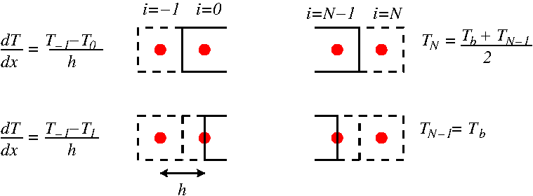
Consider the case where we have 4 grid nodes and the outline of the simulation nodes are as in figure 16 to the left, i.e. nodes at the physical boundaries. Assume a zero flux boundary condition to the left, and a constant temperature,$T_b$, to the right. Write the heat equation
$$ \begin{equation} k\frac{d^2T}{dx^2}+\kappa=0, \label{eq:lin:exx1} \end{equation} $$as a matrix equation.
Solution: First, we use the discrete version of equation \eqref{eq:lin:exx1} in equation \eqref{eq:lin:e3} for \( i=0, 1, 2, 3 \)
$$ \begin{align} T_{-1}+T_1-2T_0 &=-h^2\kappa/k,\nonumber \\ T_{0}+T_2-2T_1 &=-h^2\kappa/k\nonumber \\ T_{1}+T_3-2T_2 &=-h^2\kappa/k\nonumber \\ T_{2}+T_4-2T_3 &=-h^2\kappa/k. \label{eq:lin:exx2} \end{align} $$Now, we have four equations, but six unknowns (\( T_{-1}, T_0, T_1, T_2, T_3, T_4 \)). \( T_{-1} \), and \( T_4 \) can be found from the boundary conditions. Using the formulas in figure 17 at the lower left and lower right, we get \( dT/dx=0 \), and \( T_{-1}=T_1 \), and \( T_4=T_b \). Thus the first and last equation in equation \eqref{eq:lin:exx2}, can be written
$$ \begin{align} 2T_1-2T_0 &=-h^2\kappa/k,\nonumber \\ T_{2}-2T_3 &=-h^2\kappa/k-T_b. \label{eq:lin:2b} \end{align} $$Now, we can formulate equation \eqref{eq:lin:exx2} as a matrix problem, with the unknowns on the left side and the unknown on the right hand side.
$$ \begin{align} \left( \begin{array}{cccc} -2&2&0&0\\ 1&-2&1&0\\ 0&1&-2&1\\ 0&0&1&-2\\ \end{array} \right) \left( \begin{array}{c} T_0\\ T_1\\ T_2\\ T_3\\ \end{array} \right) = \left( \begin{array}{c} -h^2\kappa/k\\ -h^2\kappa/k\\ -h^2\kappa/k\\ -h^2\kappa/k-T_b \end{array} \right). \label{_auto10} \end{align} \label{eq:lin:exx4}$$There are a number of excellent books covering this topic, see e.g. [5] [6] [7] [8]. In most of the examples covered in this course we will encounter problems where we have a set of linearly independent equations and one equation for each unknown. For these type of problems there are a number of methods that can be used, and they will find a solution in a finite number of steps. If a solution cannot be found it is usually because the equations are not linearly independent, and our formulation of the physical problem is wrong.
Assume that we would like to solve the following set of equations:
$$ \begin{align} 2x_0+x_1+x_2+3x_3&=1, \label{eq:lin:la} \\ x_0+x_1+3x_2+x_3&=-3, \label{eq:lin:lb} \\ x_0+4x_1+x_2+x_3&=2, \label{eq:lin:lc} \\ x_0+x_1+2x_2+2x_3&=1. \label{eq:lin:ld} \end{align} $$These equations can be written in matrix form as:
$$ \begin{equation} \mathbf{A\cdot x}=\mathbf{b}, \label{eq:lin:mat} \end{equation} $$where:
$$ \begin{equation} \mathbf{A}\equiv\begin{pmatrix} 2&1&1&3\\ 1&1&3&1\\ 1&4&1&1\\ 1&1&2&2 \end{pmatrix} \qquad \mathbf{b}\equiv \begin{pmatrix} 1\\-3\\2\\1 \end{pmatrix} \qquad \mathbf{x}\equiv \begin{pmatrix} x_0\\x_1\\x_2\\x_3 \end{pmatrix}. \label{eq:lin:matA} \end{equation} $$You can easily verify that \( x_0=-4, x_1=1, x_2=-1, x_3= 3 \) is the solution to the above equations by direct substitution. If we were to replace one of the above equations with a linear combination of any of the other equations, e.g. replace equation \eqref{eq:lin:ld} with \( 3x_0+2x_1+4x_2+4x_3=-2 \), there would be no unique solution (infinite number of solutions). This can be checked by calculating the determinant of the matrix \( \mathbf{A} \), if \( \det \mathbf{A}=0 \), What is the difficulty in solving these equations? Clearly if none of the equations are linearly dependent, and we have \( N \) independent linear equations, it should be straight forward to solve them? Two major numerical problems are i) even if the equations are not exact linear combinations of each other, they could be very close, and as the numerical algorithm progresses they could at some stage become linearly dependent due to roundoff errors. ii) roundoff errors may accumulate if the number of equations are large [5].
Let us continue the discussion by consider Gauss-Jordan elimination, which is a direct method. A direct method uses a final set of operations to obtain a solution. According to [5] Gauss-Jordan elimination is the method of choice if we want to find the inverse of \( \mathbf{A} \). However, it is slow when it comes to calculate the solution of equation \eqref{eq:lin:mat}. Even if speed and memory use is not an issue, it is also not advised to first find the inverse, \( \mathbf{A}^{-1} \), of \( \mathbf{A} \), then multiply it with \( \mathbf{b} \) to obtain the solution, due to roundoff errors (Roundoff errors occur whenever we subtract to numbers that are very close to each other). To simplify our notation, we write equation \eqref{eq:lin:matA} as:
$$ \begin{equation} \left( \begin{array}{cccc|c} 2&1&1&3&1\\ 1&1&3&1&-3\\ 1&4&1&1&2\\ 1&1&2&2&1 \end{array} \right). \label{_auto11} \end{equation} $$The numbers to the left of the vertical dash is the matrix \( \mathbf{A} \), and to the right is the vector \( \mathbf{b} \). The Gauss-Jordan elimination procedure proceeds by doing the same operation on the right and left side of the dash, and the goal is to get only zeros on the lower triangular part of the matrix. This is achieved by multiplying rows with the same (nonzero) number, swapping rows, adding a multiple of a row to another:
$$ \begin{align} &\left( \begin{array}{cccc|c} 2&1&1&3&1\\ 1&1&3&1&-3\\ 1&4&1&1&2\\ 1&1&2&2&1 \end{array} \right)\to \left( \begin{array}{cccc|c} 2&1&1&3&1\\ 0&1/2&5/2&-1/2&-7/2\\ 0&7/2&1/2&-1/2&3/2\\ 0&1/2&3/2&1/2&1/2 \end{array} \right)\to\label{eq:lin:gj1}\\ &\left( \begin{array}{cccc|c} 2&1&1&3&1\\ 0&1/2&5/2&-1/2&-7/2\\ 0&0&-17&3&26\\ 0&0&1&-1&4 \end{array} \right) \to \left( \begin{array}{cccc|c} 2&1&1&3&1\\ 0&1/2&5/2&-1/2&-7/2\\ 0&0&-17&3&26\\ 0&0&0&14/17&42/17 \end{array} \right)\no \end{align}$$The operations done are: (\( 1\to2 \)) multiply first row with \( -1/2 \) and add to second, third and the fourth row, (\( 2\to 3 \)) multiply second row with \( -7 \), and add to third row, multiply second row with \( -1 \) and add to fourth row, (\( 3\to4 \)) multiply third row with \( -1/17 \) and add to fourth row. These operations can easily be coded into Python:
A = np.array([[2, 1, 1, 3],[1, 1, 3, 1],
[1, 4, 1, 1],[1, 1, 2, 2 ]],float)
b = np.array([1,-3,2,1],float)
N=4
# Gauss-Jordan Forward Elimination
for i in range(1,N):
fact = A[i:,i-1]/A[i-1,i-1]
A[i:,] -= np.outer(fact,A[i-1,])
b[i:] -= b[i-1]*fact
The python code is a bit compact, below there is an implementation using for loops
# Gauss-Jordan Forward Elimination - for loops
for i in range(N):
for j in range(i+1,N):
fact = A[j,i]/A[i,i]
for k in range(i+1,N):
A[j,k] = A[j,k]- fact*A[i,k]
b[j] = b[j]- b[j-1]*fact
A[j,i]= 0. # alternatively k=i,...,N
The code above reveals that that there are quite a few multiplications or divisions being performed in the forward elimination. Multiplications and divisions are more time consuming than addition and subtraction, and are usually termed long operations. Not all loops runs from zero to \( N \), the innermost from \( k=i+1\ldots N-1 \), i.e. a total of \( N-i-2 \), the second contains \( N-i-2 \) and one multiplication for the b vector. Hence we have number of long operations
The important result is that when the system of equations becomes large \( N^3\gg N^2 \) and the algorithm scales as \( N^3 \).
Notice that the final matrix has only zeros beyond the diagonal, such a matrix is called upper triangular. We still have not found the final solution, but from an upper triangular (or lower triangular) matrix it is trivial to determine the solution. The last row immediately gives us \( 14/17z=42/17 \) or \( z=3 \), now we have the solution for z and the next row gives: \( -17y+3z=26 \) or \( y=(26-3\cdot3)/(-17)=-1 \), and so on. In a more general form, we can write our solution of the matrix \( \mathbf{A} \) after making it upper triangular as:
$$ \begin{equation} \begin{pmatrix} a^\prime_{0,0}&a^\prime_{0,1}&a^\prime_{0,2}&a^\prime_{0,3}\\ 0&a^\prime_{1,1}&a^\prime_{1,2}&a^\prime_{1,3}\\ 0&0&a^\prime_{2,2}&a^\prime_{2,3}\\ 0&0&0&a^\prime_{3,3} \end{pmatrix} \cdot \begin{pmatrix} x_0\\ x_1\\ x_2\\ x_3 \end{pmatrix} = \begin{pmatrix} b^\prime_{0}\\ b^\prime_{1}\\ b^\prime_{2}\\ b^\prime_{3} \end{pmatrix} \label{eq:lin:back} \end{equation} $$The back substitution can then be written formally as:
$$ \begin{equation} x_i=\frac{1}{a^\prime_{ii}}\left[b_i^\prime-\sum_{j=i+1}^{N-1}a^\prime_{ij}x_j\right],\quad i=N-1,N-2,\ldots,0 \label{eq:lin:back2} \end{equation} $$The back substitution can now easily be implemented in Python as:
# Back substitution
sol = np.zeros(N,float)
sol[N-1]=b[N-1]/A[N-1,N-1]
for i in range(2,N+1):
sol[N-i]=(b[N-i]-np.dot(A[(N-i),],sol))/A[N-i,N-i]
Notice that in the Python implementation, we have used vector operations instead of for loops. This makes the code more efficient, but it could also be implemented with for loops:
# Back substitution - for loop
sol = np.zeros(N,float)
for i in range(N-1,-1,-1):
sol[i]= b[i]
for j in range(i+1,N):
sol[i] -= A[i][j]*sol[j]
sol[i] /= A[i][i]
As for the forward elimination, we can find how the backward substitution scales. Notice that here there are only two loops, hence we have number of long operations
$$ \begin{equation} \sum_{i=0}^{N-1}(N-i-1)=\frac{N}{2}(N-1). \label{} \end{equation} $$Thus, the backward substitution scales as \( N^2 \).
There are at least two things to notice with our implementation:
A[i-1,i-1]. By simply changing equation \eqref{eq:lin:lb} to \( 2x_0+x_1+3x_2+x_3=-3 \), when doing the first Gauss-Jordan elimination, both \( x_0 \) and \( x_1 \) would be canceled. In the next iteration we try to divide next equation by the leading coefficient of \( x_1 \), which is zero, and the whole procedure fails.The solution to the last problem is solved by what is called pivoting. The element that we divide on is called the pivot element. It actually turns out that even if we do Gauss-Jordan elimination without encountering a zero pivot element, the Gauss-Jordan procedure is numerically unstable in the presence of roundoff errors [5]. There are two versions of pivoting, full pivoting and partial pivoting. In partial pivoting we only interchange rows, while in full pivoting we also interchange rows and columns. Partial pivoting is much easier to implement, and the algorithm is as follows:
For a linear equation we can multiply with a number on each side and the equation would be unchanged, so if we where to multiply one of the equations with a large value, we are almost sure that this equation would be placed first by our algorithm. This seems a bit strange as our mathematical problem is the same. Sometimes the linear algebra routines tries to normalize the equations to find the pivot element that would have been the largest element if all equations were normalized according to some rule, this is called implicit pivoting.
The solution procedure would then be to rewrite equation \eqref{eq:lin:mat} as:
$$ \begin{align} \mathbf{A\cdot x}=\mathbf{L}\cdot\mathbf{U}\cdot\mathbf{x}=\mathbf{b},label{eq:lin:matb} \end{align} $$If we define a new vector \( \mathbf{y} \):
$$ \begin{align} \mathbf{y}\equiv\mathbf{U}\cdot\mathbf{x}, \label{_auto13} \end{align} $$we can first solve for the \( \mathbf{y} \) vector:
$$ \begin{align} \mathbf{L}\cdot\mathbf{y}=\mathbf{b},label{eq:lin:for} \end{align} $$and then for \( \mathbf{x} \):
$$ \begin{align} \mathbf{U}\cdot\mathbf{x}=\mathbf{y}. \label{_auto14} \end{align} $$Note that the solution to equation \eqref{eq:lin:for} would be done by forward substitution:
$$ \begin{equation} y_i=\frac{1}{l_{ii}}\left[b_i-\sum_{j=0}^{i-1}l_{ij}x_j\right],\quad i=1,2,\ldots N-1. \label{eq:lin:back3} \end{equation} $$Why go to all this trouble? First of all it requires (slightly) less operations to calculate the LU decomposition and doing the forward and backward substitution than the Gauss-Jordan procedure discussed earlier. Secondly, and more importantly, is the fact that in many cases one would like to calculate the solution for different values of the \( \mathbf{b} \) vector in equation \eqref{eq:lin:matb}. If we do the LU decomposition first we can calculate the solution quite fast using backward and forward substitution for any value of the \( \mathbf{b} \) vector.
The NumPy function solve, uses LU decomposition and partial pivoting, and we can find the solution to our previous problem simply by the following code:
from numpy.linalg import solve
x=solve(A,b)
The methods described so far are what is called direct methods. The direct methods for very large systems might suffer from round off errors. That means that even if the computer has found a solution, the solution is "polluted" by round off errors, or stated more clearly: your solution for \( \mathbf{x} \), when entered into the original equation \( \mathbf{A}\mathbf{x}\neq\mathbf{b} \). Below we will describe one trick, and two alternative methods to the direct methods.
subtracting equation \eqref{eq:lin:mat} we get
$$ \begin{equation} \mathbf{A}\cdot\delta\mathbf{x}=\delta\mathbf{b}. \label{eq:lin:itb2} \end{equation} $$Solving equation \eqref{eq:lin:itb} for \( \delta\mathbf{b} \) an inserting in the equation above, we get
$$ \begin{equation} \mathbf{A}\cdot\delta\mathbf{x}=\mathbf{A}\cdot\mathbf{\hat{x}}-\mathbf{b}. \label{eq:lin:itb3} \end{equation} $$The usefulness of this method assumes that we have already obtained the LU decomposition of \( \mathbf{A} \), and if possible one should use a higher precision to calculate the right hand side, since there will be a lot of cancellations. Then the whole computational process it is simply to calculate the right hand side and backsubstitute. The improved solution is then obtained by subtracting \( \delta\mathbf{x} \) from \( \mathbf{\hat{x}} \).
A completely different approach is the Jacobian method, which is simply to decompose the \( \mathbf{A} \) matrix in the following way
$$ \begin{equation} \mathbf{A}=\mathbf{D}+\mathbf{R} \label{eq:lin:DR} \end{equation} $$ $$ \begin{align} &\begin{pmatrix} a_{0,0}&a_{0,1}&a_{0,2}&a_{0,3}\\ a_{1,0}&a_{1,1}&a_{1,2}&a_{1,3}\\ a_{2,0}&a_{2,1}&a_{2,2}&a_{2,3}\\ a_{3,0}&a_{3,1}&a_{3,2}&a_{3,3} \end{pmatrix} \no \label{_auto15} \\ &= \begin{pmatrix} a_{0,0}&0&0&0\\ 0&a_{1,1}&0&0\\ 0&0&a_{2,2}&0\\ 0&0&0&a_{3,3} \end{pmatrix} + \begin{pmatrix} 0&a_{0,1}&a_{0,2}&a_{0,3}\\ a_{1,0}&0&a_{1,2}&a_{1,3}\\ a_{2,0}&a_{2,1}&0&a_{2,3}\\ a_{3,0}&a_{3,1}&a_{3,2}&0 \end{pmatrix}. \label{eq:lin:DR2} \end{align}$$We can then write equation \eqref{eq:lin:mat} as
$$ \begin{equation} \mathbf{D}\mathbf{x}=\mathbf{b}-\mathbf{R}\cdot\mathbf{x}. \label{eq:lin:jc} \end{equation} $$How does this help us? First of all, the matrix \( \mathbf{D} \) is easy to invert as it is diagonal, the inverse can be found by simply replace \( a_{ii}\to 1/a_{ii} \). But \( \mathbf{x} \) is still present on the right hand side? This is where the iterations comes into play, we simply guess at an initial solution \( \mathbf{x}^k \), and then we use equation \eqref{eq:lin:jc} to calculate the next solution \( \mathbf{x}^{k+1} \), and so on
$$ \begin{equation} \mathbf{x}^{k+1}=\mathbf{D}^{-1}(\mathbf{b}-\mathbf{R}\cdot\mathbf{x}^{k}). \label{eq:lin:jc2} \end{equation} $$Lets write it out on component form for a \( 4\times4 \) matrix to see what is going on
$$ \begin{align} x_0^{k+1} &=\frac{1}{a_{00}}(b_0-a_{01}x_1^k-a_{02}x_2^k-a_{03}x_3^k), \label{eq:lin:jc3a}\\ x_1^{k+1} &=\frac{1}{a_{11}}(b_1-a_{10}x_0^k-a_{12}x_2^k-a_{13}x_3^k), \label{eq:lin:jc3b}\\ x_2^{k+1} &=\frac{1}{a_{22}}(b_2-a_{20}x_0^k-a_{21}x_1^k-a_{23}x_3^k), \label{eq:lin:jc3c}\\ x_3^{k+1} &=\frac{1}{a_{33}}(b_3-a_{30}x_0^k-a_{31}x_1^k-a_{32}x_2^k). \label{eq:lin:jc3d} \end{align} $$Below is a Python implementation
def solve_jacobi(A,b,x=-1,w=1,max_iter=1000,EPS=1e-6):
"""
Solves the linear system Ax=b using the Jacobian method, stops if
solution is not found after max_iter or if solution changes less
than EPS
"""
if(x==-1): #default guess
x=np.zeros(len(b))
D=np.diag(A)
R=A-np.diag(D)
eps=1
x_old=x
iter=0
w=0.1
while(eps>EPS and iter<max_iter):
iter+=1
x=w*(b-np.dot(R,x_old))/D + (1-w)*x_old
eps=np.sum(np.abs(x-x_old))
x_old=x
print('found solution after ' + str(iter) +' iterations')
return x
A sufficient criteria for the Jacobian method to converge is if the matrix \( A \) is diagonally dominant. In the implementation above we have included a weight, which sometimes can help in the convergence even if the matrix is not diagonally dominant.
The iterative method can be appealing if we do not need a high accuracy, we can choose to stop whenever \( |\mathbf{x}^{k+1}-\mathbf{x}^k| \) is small enough. For the direct method we have to follow through all the way.
The Jacobi method converges if the matrix \( \mathbf{A} \) is strictly diagonally dominant. Strictly diagonally dominant means that the absolute value of each entry on the diagonal is greater than the sum of the absolute values of the other entries in the same row, i.e if \( |a_{00}|>|a_{01}+a_{02}+\cdots| \). In general it can be shown that a iterative scheme \( \mathbf{x}^{k+1}=\mathbf{P}\cdot \mathbf{x}^k+\mathbf{q} \) is convergent if and only if every eigenvalue, \( \lambda \), of \( \mathbf{P} \) satisfies \( |\lambda| < 1 \), i.e. the spectral radius \( \rho(\mathbf{P}) < 1 \).
It is tempting in equation \eqref{eq:lin:jc3a} to use our estimate of \( x_0^{k+1} \) in the next equation, equation \eqref{eq:lin:jc3b}, instead of \( x_0^k \). After all our estimate \( x_0^{k+1} \) is an improved estimate. This is actually the Gauss-Seidel method. This method also has the advantage that if there are memory issues, one can overwrite the old value of \( x_i^k \). Usually the Gauss-Seidel method converges faster, but not always. A plus for the Jacobi method is that is can be parallelised, as the calculations is only dependent on the old values and do not require information about the new values as for the Gauss Seidel method. Below is a Python implementation of the Gauss-Seidel method
def solve_GS(A,b,x=-1,max_iter=1000,EPS=1e-6):
"""
Solves the linear system Ax=b using the Gauss-Seidel method, stops if
solution is not found after max_iter or if solution changes less
than EPS
"""
if(x==-1):
x=np.zeros(len(b))
D=np.diag(A)
R=A-np.diag(D)
eps=1
iter=0
while(eps>EPS and iter<max_iter):
iter+=1
eps=0.
for i in range(len(x)):
tmp=x[i]
x[i]=(b[i]- np.dot(R[i,:],x))/D[i]
eps+=np.abs(tmp-x[i])
print('found solution after ' + str(iter) +' iterations')
return x
In the previous section, we considered a system of \( N \) equations and \( N \) unknown (\( x_0, x_1,\ldots, x_N \)). In general we might have more equations than unknowns or more unknowns than equations. An example of the former is linear regression, we might have many data points and we would like to fit a line through the points. How do you fit a single lines to more than two points that does not line on the same line? One way to do it is to minimize the distance from the line to the points, as illustrated in figure 18.
Figure 18: Linear regression by minimizing the total distance to all the points.
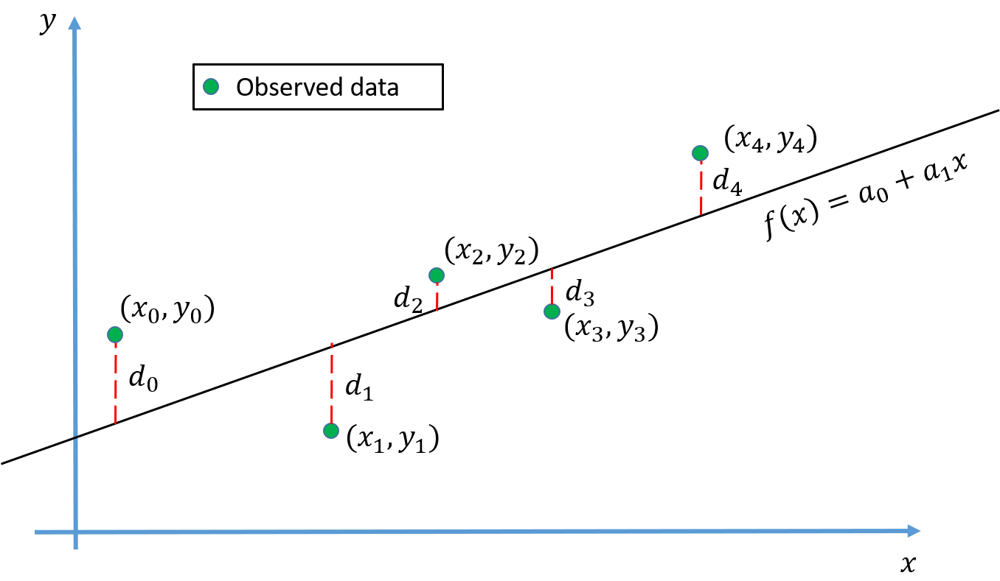
Mathematically we can express the distance between a data point \( (x_i,y_i) \) and the line \( f(x) \) as \( y_i-f(x_i) \). Note that this difference can be negative or positive depending if the data point lies below or above the line. We can then take the absolute value of all the distances, and try to minimize them. When we minimize something we take the derivative of the expression and put it equal to zero. As you might remember from Calculus it is extremely hard to work with the derivative of the absolute value, because it is discontinuous. A much better approach is to square each distance and sum them:
$$ \begin{equation} S=\sum_{i=0}^{N-1}(y_i-f(x_i))^2=\sum_{i=0}^{N-1}(y_i-a_0-a_1x_i)^2. \label{eq:lin:lsq} \end{equation} $$(For the example in figure 18, \( N=5 \).) This is the idea behind least square, and linear regression. One thing you should be aware of is that points lying far from the line will contribute more to equation \eqref{eq:lin:lsq}. The underlying assumption is that each data point provides equally precise information about the process, this is often not the case. When analyzing experimental data, there may be points deviating from the expected behaviour, it is then important to investigate if these points are more affected by measurements errors than the others. If that is the case one should give them less weight in the least square estimate, by extending the formula above:
$$ \begin{equation} S=\sum_{i=0}^{N-1}\omega_i(y_i-f(x_i))^2=\sum_{i=0}^3\omega_i(y_i-a_0-a_1x_i)^2, \label{eq:lin:lsqm} \end{equation} $$\( \omega_i \) is a weight factor.
Let us continue with equation \eqref{eq:lin:lsq}, the algebraic solution is to simply find the value of \( a_0 \) and \( a_1 \) that minimizes \( S \):
$$ \begin{align} \frac{\partial S}{\partial a_0} &=-2\sum_{i=0}^{N-1}(y_i-a_0-a_1x_i)=0, \label{eq:lin:ls1} \\ \frac{\partial S}{\partial a_1} &=-2\sum_{i=0}^{N-1}(y_i-a_0-a_1x_i)x_i=0. \label{eq:lin:ls2} \end{align} $$Defining the mean value as \( \overline{x}=\sum_ix_i/N \) and \( \overline{y}=\sum_iy_i/N \), we can write equation \eqref{eq:lin:ls1} and \eqref{eq:lin:ls2} as:
$$ \begin{align} \sum_{i=0}^{N-1}(y_i-a_0-a_1x_i)&=N\overline{y}-a_0N-a_1N\overline{x}=0, \label{eq:lin:ls1a} \\ \sum_{i=0}^{N-1}(y_i-a_0-a_1x_i)x_i&=\sum_iy_ix_i-a_0N\overline{x}-a_1\sum_ix_ix_i=0. \label{eq:lin:ls2b} \end{align} $$Solving equation \eqref{eq:lin:ls1a} with respect to \( a_0 \), and inserting the expression into equation \eqref{eq:lin:ls2b}, we find:
$$ \begin{align} a_0&=\overline{y}-a_1\overline{x},label{eq:lin:ls1c} \\ a_1&=\frac{\sum_iy_ix_i-N\overline{x}\overline{y}}{\sum_ix_i^2-N\overline{x}^2} =\frac{\sum_i(x_i-\overline{x})(y_i-\overline{y})}{\sum_i(x_i-\overline{x})^2}. \label{eq:lin:ls2d} \end{align} $$We leave it as an exercise to show the last expression for \( a_1 \). Clearly the equation \eqref{eq:lin:ls2d} above will in most cases have a solution. But in addition to a solution, it would be good to have an idea of the goodness of the fit. Intuitively it make sense to add all the distances (residuals) \( d_i \) in figure 18. This is basically what is done when calculating \( R^2 \) (R-squared). However, we would also like to compare the \( R^2 \) between different datasets. Therefor we need to normalize the sum of residuals, and therefore the following form of the \( R^2 \) is used:
$$ \begin{equation} R^2=1-\frac{\sum_{i=0}^{N-1}(y_i-f(x_i))^2}{\sum_{i=0}^{N-1}(y_i-\overline{y})^2}. \label{eq:lin:r2} \end{equation} $$In python we can implement equation \eqref{eq:lin:ls1c}, \eqref{eq:lin:ls2d} and \eqref{eq:lin:r2} as:
def OLS(x, y):
# returns regression coefficients
# in ordinary least square
# x: observations
# y: response
# R^2: R-squared
n = np.size(x) # number of data points
# mean of x and y vector
m_x, m_y = np.mean(x), np.mean(y)
# calculating cross-deviation and deviation about x
SS_xy = np.sum(y*x) - n*m_y*m_x
SS_xx = np.sum(x*x) - n*m_x*m_x
# calculating regression coefficients
b_1 = SS_xy / SS_xx
b_0 = m_y - b_1*m_x
#R^2
y_pred = b_0 + b_1*x
S_yy = np.sum(y*y) - n*m_y*m_y
y_res = y-y_pred
S_res = np.sum(y_res*y_res)
return(b_0, b_1,1-S_res/S_yy)
It turns out that the least square problem can be formulated as a matrix problem. (Two great explanations see linear regression by matrices, and $R^2$-squared.) If we define a matrix \( \mathbf{X} \) containing the observations \( x_i \) as:
$$ \begin{align} \mathbf{X} &= \begin{pmatrix} 1&x_0\\ 1&x_1\\ \vdots&\vdots\\ 1&x_{N-1} \end{pmatrix}. \label{eq:lin:mreg1} \end{align}$$We introduce a vector containing all the response \( \mathbf{y} \), and the regression coefficients \( \mathbf{a}=(a_0,a_1) \). Then we can write equation \eqref{eq:lin:lsqm} as a matrix equation:
$$ \begin{equation} S=(\mathbf{y}-\mathbf{X\cdot a})^T(\mathbf{y}-\mathbf{X\cdot a}). \label{eq:lin:mregS} \end{equation} $$Note that this equation can easily be extended to more than one observation variable \( x_i \). By simply differentiating equation \eqref{eq:lin:mregS} with respect to \( \mathbf{a} \), we can show that the derivative has a minimum when (see proof below):
$$ \begin{equation} \mathbf{X}^T\mathbf{X a}=\mathbf{X}^T\mathbf{y} \label{eq:lin:mregS2} \end{equation} $$Below is a python implementation of equation \eqref{eq:lin:mregS2}.
def OLSM(x, y):
# returns regression coefficients
# in ordinary least square using solve function
# x: observations
# y: response
XT = np.array([np.ones(len(x)),x],float)
X = np.transpose(XT)
B = np.dot(XT,X)
C = np.dot(XT,y)
return solve(B,C)
Whenever you want to do some manipulation with matrices, it is very useful to simply write them on component form. If we multiply two matrices \( \mathbf{A} \) and \( \mathbf{B} \) to form a new matrix \( \mathbf{C} \), the components of the new matrix is simply \( \mathbf{C}_{ij}=\sum_k\mathbf{A}_{ik}\mathbf{B}_{kj} \). The strength of doing this is that the elements of a matrix, e.g. \( \mathbf{A}_{ik} \) are numbers, and we can move them around. Proving that e.g. \( (\mathbf{A}\mathbf{B})^T=\mathbf{B}^T\mathbf{A}^T \) is straight forward using the component form. The transpose of a matrix is simply to exchange columns and rows, hence \( \mathbf{C}_{ij}^T=\mathbf{C}_{ji} \)
$$ \begin{equation} \mathbf{C}_{ij}^T=\mathbf{C}_{ji}=\sum_k\mathbf{A}_{jk}\mathbf{B}_{ki}=\sum_k\mathbf{B}^T_{ik}\mathbf{A}^T_{kj} =(\mathbf{B}^T\mathbf{A}^T)_{ij}, \label{eq:lin:trans} \end{equation} $$thus \( \mathbf{C}^T=\mathbf{B}^T\mathbf{A}^T \). To derive equation \eqref{eq:lin:mregS2}, we need to take the derivative of equation \eqref{eq:lin:mregS2} with respect to \( \mathbf{a} \). What we mean by this is that we want to evaluate \( \partial S/\partial a_k \) for all the components of \( \mathbf{a} \). A useful rule is \( \partial a_i/\partial a_k=\delta_{ik} \), where \( \delta_{ik} \) is the Kronecker delta, it takes the value of one if \( i=k \) and zero otherwise. We can write \( S=\mathbf{y}^T\mathbf{y}-\mathbf{y}\mathbf{X\cdot a} -(\mathbf{X\cdot a})^T\mathbf{y}-(\mathbf{X\cdot a})^T\mathbf{X\cdot a} \). All terms that do not contain \( \mathbf{a} \) are zero, thus we only need to evaluate the following terms
$$ \begin{align} \frac{\partial}{a_k}(\mathbf{X\cdot a})^T\mathbf{y} &=\frac{\partial}{a_k}(\mathbf{a}^T\cdot \mathbf{X}^T\mathbf{y})=\frac{\partial}{a_k}\sum_{ij}\mathbf{a}^T_i\mathbf{X}^T_{ij}\mathbf{y}_j =\sum_{ij}\delta_{ik}\mathbf{X}^T_{ij}\mathbf{y}_j\no \label{_auto16}\\ &=\sum_{j}\mathbf{X}^T_{kj}\mathbf{y}_j=\mathbf{X}^T\mathbf{y} \label{_auto17}\\ \frac{\partial}{a_k}\mathbf{y}^T\mathbf{X\cdot a}&=\frac{\partial}{a_k}\sum_{ij}\mathbf{y}^T_i\mathbf{X}_{ij}\mathbf{a}_j =\sum_{ij}\mathbf{y}^T_i\mathbf{X}_{ij}\delta_{jk}=\sum_{j}\mathbf{y}^T_{i}\mathbf{X}_{ik}\no \label{_auto18}\\ &=\sum_{j}\mathbf{y}^T_{i}\mathbf{X}^T_{ki}=\mathbf{X}^T\mathbf{y} \label{_auto19}\\ \frac{\partial}{a_k} (\mathbf{X\cdot a})^T\mathbf{X\cdot a}&= \frac{\partial}{a_k}\sum_{ijl} \mathbf{a}^T_i\mathbf{X}^T_{ij}\mathbf{X}_{jl}\mathbf{a}_l= \sum_{ijl}(\delta_{ik}\mathbf{X}^T_{ij}\mathbf{X}_{jl}\mathbf{a}_l+\mathbf{a}^T_i\mathbf{X}^T_{ij}\mathbf{X}_{jl}\delta_{lk})\no \label{_auto20}\\&=\sum_{jl}\mathbf{X}^T_{kj}\mathbf{X}_{jl} \mathbf{a}_l+\sum_{ij}\mathbf{a}^T_i\mathbf{X}^T_{ij}\mathbf{X}_{jk}\no \label{_auto21}\\ &=\mathbf{X}^T\mathbf{X}\mathbf{a}+\sum_{ij}\mathbf{X}^T_{kj}\mathbf{X}_{ji}\mathbf{a}_i = 2\mathbf{X}^T\mathbf{X}\mathbf{a}. \label{} \end{align} $$It then follows that \( \partial S/\partial \mathbf{a} = 0 \) when
$$ \begin{equation} \mathbf{X}^T\mathbf{X a}=\mathbf{X}^T\mathbf{y}. \label{eq:lin:matpr} \end{equation} $$In many practical examples, such as solving partial differential equations the matrices could be quite large and also contain a lot of zeros. A very important class of such matrices are banded matrices this is a type of sparse matrices containing a lot of zero elements, and the non-zero elements are confined to diagonal bands. In the following we will focus on one important type of sparse matrix the tridiagonal. In the next section we will show how it enters naturally in solving the heat equation. It turns out that solving banded matrices is quite simple, and can be coded quite efficiently. As with the Gauss-Jordan example, lets consider a concrete example:
$$ \begin{align} &\left( \begin{array}{ccccc|c} b_0&c_0&0&0&0&r_0\\ a_1&b_1&c_1&0&0&r_1\\ 0&a_2&b_2&c_2&0&r_2\\ 0& 0&a_3&b_3&c_3&r_3\\ 0& 0& 0&a_4&b_4&r_4 \end{array} \right) \label{_auto22} \end{align}$$The right hand side is represented with \( r_i \). The first Gauss-Jordan step is simply to divide by \( b_0 \), then we multiply with \( -a_1 \) and add to second row:
$$ \begin{align} \to \left( \begin{array}{ccccc|c} 1&c_0^\prime&0&0&0&r_0^\prime\\ 0&b_1-a_1c_0^\prime&c_1&0&0&r_1-a_0r_0^\prime\\ 0&a_2&b_2&c_2&0&r_2\\ 0& 0&a_3&b_3&c_3&r_3\\ 0& 0& 0&a_4&b_4&r_4 \end{array} \right), \label{_auto23} \end{align}$$Note that we have introduced some new symbols to simplify the notation: \( c_0^\prime=c_0/b_0 \) and \( r_0^\prime=r_0/b_0 \). Then we divide by \( b_1-a_1c_0^\prime \):
$$ \begin{align} &\left( \begin{array}{ccccc|c} 1&c_0^\prime&0&0&0&r_0^\prime\\ 0&1&c_1^\prime&0&0&r_1^\prime\\ 0&a_2&b_2&c_2&0&r_2\\ 0& 0&a_3&b_3&c_3&r_3\\ 0& 0& 0&a_4&b_4&r_4 \end{array} \right), \label{_auto24} \end{align}$$where \( c_1^\prime=c_1/(b_1-a_1c_0^\prime) \) and \( r_1^\prime=(r_1-a_0r_0^\prime)/(b_1-a_1c_0^\prime) \). If you continue in this manner, you can easily convince yourself that to transform a tridiagonal matrix to the following form:
$$ \begin{align} \to \left( \begin{array}{ccccc|c} 1&c_0^\prime&0&0&0&r_0^\prime\\ 0&1&c_1^\prime&0&0&r_1^\prime\\ 0&0&1&c_2^\prime&0&r_2^\prime\\ 0& 0&0&1&c_3^\prime&r_3^\prime\\ 0& 0& 0&0&1&r_4^\prime \end{array} \right), \label{_auto25} \end{align}$$where:
$$ \begin{align} c_0^\prime =\frac{c_0}{b_0} \qquad &r_0^\prime=\frac{r_0}{b_0} \label{eq:lin:th0} \\ c_i^\prime =\frac{c_i}{b_i-a_ic_{i-1}^\prime}\qquad &r_i^\prime=\frac{r_i-a_ir_{i-1}^\prime}{b_i-a_ic_{i-1}^\prime} \quad\text{, for }i=1,2,\ldots,N-1label{eq:lin:thi} \end{align} $$Note that we where able to reduce the tridiagonal matrix to an upper triangular matrix in only one Gauss-Jordan step. This equation can readily be solved using back-substitution, which can also be simplified as there are a lot of zeros in the upper part. Let us denote the unknowns \( x_i \) as we did for the Gauss-Jordan case, now we can find the solution as follows:
$$ \begin{align} x_{N-1} & = r_{N-1}^\prime \label{eq:lin:this0} \\ x_i & = r_i^\prime-x_{i+1}c_i^\prime\quad\text{, for } i=N-2,N-3,\ldots,0 \label{eq:lin:thisi} \end{align} $$Equation \eqref{eq:lin:th0}, \eqref{eq:lin:thi}, \eqref{eq:lin:this0} and \eqref{eq:lin:thisi} is known as the Thomas algorithm after Llewellyn Thomas.
Clearly tridiagonal matrices can be solved much more efficiently with
the Thomas algorithm than
using a standard library, such as LU-decomposition. This is
because the solution method takes advantages of the symmetry of the
problem. We will not show it here, but it can be shown that the Thomas
algorithm is stable whenever \( |b_i|\ge |a_i|+|c_i| \). If the algorithm
fails, an advice is first to use the standard solve function in
python. If this gives a solution, then pivoting combined with the
Thomas algorithm might do the trick.
Figure 19: Conservation of energy and the continuity equation.
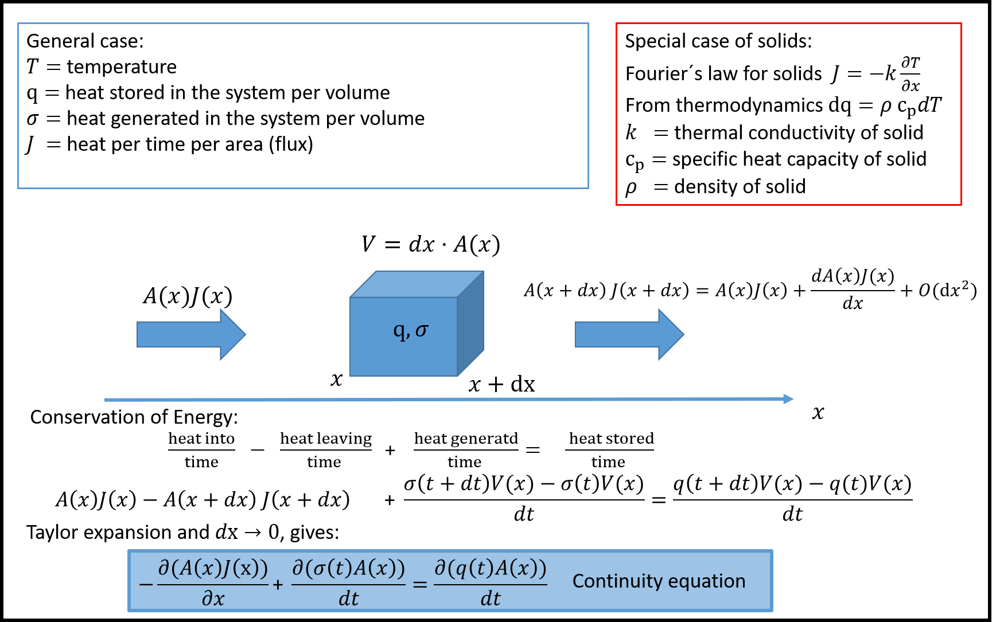
In figure 19, the continuity equation is derived for heat flow.
where \( \dot{\sigma} \) is the rate of heat generation in the solid. This equation can be used as a starting point for many interesting models. In this exercise we will investigate the steady state solution, steady state is just a fancy way of expressing that we want the solution that does not change with time. This is achieved by ignoring the derivative with respect to time in equation \eqref{eq:nlin:heateq}. We want to study a system with size \( L \), and is it good practice to introduce a dimensionless variable: \( y=x/L \).
Part 1.
Show that equation \eqref{eq:nlin:heateq} now takes the following form:
$$ \begin{equation} \frac{d^2T }{dy^2}+\frac{\dot{\sigma}L^2}{k}=0 \label{eq:nlin:heat2} \end{equation} $$Curing of concrete is one particular example that we can investigate with equation \eqref{eq:nlin:heat2}. When concrete is curing, there are a lot of chemical reactions happening, these reactions generate heat. This is a known issue, and if the temperature rises too much compared to the surroundings, the concrete may fracture. In the following we will, for simplicity, assume that the rate of heat generated during curing is constant, $\dot{\sigma}=$100 W/m$^3$. The left end (at \( x=0 \)) is insulated, meaning that there is no flow of heat over that boundary, hence \( dT/dx=0 \) at \( x=0 \). On the right hand side the temperature is kept constant, \( x(L)=y(1)=T_1 \), assumed to be equal to the ambient temperature of $T_1=25^\circ$C. The concrete thermal conductivity is assumed to be \( k=1.65 \) W/m$^\circ$C.
Part 1.
Show that the solution to equation \eqref{eq:nlin:heat2} in this case is:
$$ \begin{equation} T(y)=\frac{\dot{\sigma}L^2}{2k}(1-y^2)+T_1. \label{eq:nlin:heatsol} \end{equation} $$Part 2. In order to solve equation \eqref{eq:nlin:heat2} numerically, we need to discretize it. Show that equation \eqref{eq:nlin:heat2} now takes the following form:
$$ \begin{equation} T_{i+1}+T_{i-1}-2T_i=-h^2\beta, \label{eq:nlin:heat3} \end{equation} $$where \( \beta=\dot{\sigma}L^2/k \).
Figure 20: Finite difference grid for \( N=4 \).
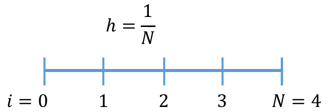
In figure 20, the finite difference grid is shown for \( N=4 \).
Part 3.
Show that equation \eqref{eq:nlin:heat3} including the boundary conditions for \( N=4 \) can be written as the following matrix equation
$$ \begin{align} \left( \begin{array}{cccc} -\gamma&\gamma&0&0\\ 1&-2&1&0\\ 0&1&-2&1\\ 0&0&1&-2\\ \end{array} \right) \left( \begin{array}{c} T_0\\ T_1\\ T_2\\ T_3\\ \end{array} \right) = \left( \begin{array}{c} -h^2\beta\\ -h^2\beta\\ -h^2\beta\\ -h^2\beta-25 \end{array} \right). \label{_auto26} \end{align} \label{eq:lin:heats}$$where \( \gamma=2 \) for the central difference scheme and 1 for the forward difference scheme.
Part 4.
import numpy as np
import scipy as sc
import scipy.sparse.linalg
from numpy.linalg import solve
import matplotlib.pyplot as plt
central_difference=False
# set simulation parameters
h=0.25
L=1.0
n = int(round(L/h))
Tb=25 #rhs
sigma=100
k=1.65
beta = sigma*L**2/k
y = np.arange(n+1)*h
def analytical(x):
return beta*(1-x*x)/2+Tb
def tri_diag(a, b, c, k1=-1, k2=0, k3=1):
""" a,b,c diagonal terms
default k-values for 4x4 matrix:
| b0 c0 0 0 |
| a0 b1 c1 0 |
| 0 a1 b2 c2|
| 0 0 a2 b3|
"""
return np.diag(a, k1) + np.diag(b, k2) + np.diag(c, k3)
# defina a, b and c vector
a=np.ones(n-1)
b=..
c=..
if central_difference:
c[0]= ...
else:
b[0]=...
A=tri_diag(a,b,c)
print(A) # view matrix - compare with N=4 to make sure no bugs
# define rhs vector
d=...
#rhs boundary condition
d[-1]=...
Tn=np.linalg.solve(A,d)
print(Tn)
The correct solution for \( L=1 \) m, and \( h=1/4 \), is: $[T_0,T_1.T_2,T_3]$=[55.3030303 , 53.40909091, 47.72727273, 38.25757576] (central difference) and $[T_0,T_1.T_2,T_3]$=[62.87878788, 59.09090909, 51.51515152, 40.15151515] (forward difference)
Part 1. Replace the time derivative in equation \eqref{eq:nlin:heateq} with
$$ \begin{equation} \frac{dT}{dt}\simeq\frac{T(t+\Delta t)-T(t)}{\Delta t}=\frac{T^{n+1}-T^n}{\Delta t}, \label{eq:lin:dt} \end{equation} $$and show that by using an implicit formulation (i.e. that the second derivative with respect to \( x \) is to be evaluated at \( T(t+\Delta t)\equiv T^{n+1} \)) that equation \eqref{eq:nlin:heateq} can be written
$$ \begin{equation} T_{i+1}^{n+1}+T_{i-1}^{n+1}-(2+\frac{\alpha h^2}{\Delta t})T_i^{n+1}=-h^2\beta-\frac{\alpha h^2 }{\Delta t}T_i^n, \label{eq:lin:imp} \end{equation} $$where \( \alpha\equiv\rho c_p/k \).
Part 2.
Use the central difference formulation for the boundary condition and show that for four nodes we can formulate equation \eqref{eq:lin:imp} as the following matrix equation
$$ \begin{align} &\left( \begin{array}{cccc} -(2+\frac{\alpha h^2}{\Delta t})&2&0&0\\ 1&-(2+\frac{\alpha h^2}{\Delta t})&1&0\\ 0&1&-(2+\frac{\alpha h^2}{\Delta t})&1\\ 0&0&1&-(2+\frac{\alpha h^2}{\Delta t})\\ \end{array} \right) \left( \begin{array}{c} T_0^{n+1}\\ T_1^{n+1}\\ T_2^{n+1}\\ T_3^{n+1}\\ \end{array} \right)\no \label{_auto27} \\ &= \left( \begin{array}{c} -h^2\beta\\ -h^2\beta\\ -h^2\beta\\ -h^2\beta-25 \end{array} \right) -\frac{\alpha h^2 }{\Delta t} \left( \begin{array}{c} T_0^n\\ T_1^n\\ T_2^n\\ T_3^n\\ \end{array} \right) \label{_auto28} \end{align} \label{eq:lin:heatfull}$$Part 3. Assume that the initial temperature in the concrete is $25^\circ$C, $\rho$=2400 kg/m$^3$, a specific heat capacity \( c_p= \) 1000 W/kg K, and a time step of \( \Delta t=86400 \) s (1 day). Solve equation \eqref{eq:lin:heatfull}, plot the result each day and compare the result after 50 days with the steady state solution in equation \eqref{eq:nlin:heatsol}.
In this part we are going to create a sparse matrix in python and use scipy.sparse.linalg.spsolve to solve it. The matrix is created using scipy.sparse.spdiags.
Part 1. Extend the code you developed in the last exercises to also be able to use sparse matrices, by e.g. a logical switch. Sparse matrices may be defined as follows
import scipy.sparse.linalg
#right hand side
# rhs vector
d=np.repeat(-h*h*beta,n)
#rhs - constant temperature
Tb=25
d[-1]=d[-1]-Tb
#Set up sparse matrix
diagonals=np.zeros((3,n))
diagonals[0,:]= 1
diagonals[1,:]= -2
diagonals[2,:]= 1
#No flux boundary condition
diagonals[2,1]= 2
A_sparse = sc.sparse.spdiags(diagonals, [-1,0,1], n, n,format='csc')
# to view matrix - do this and check that it is correct!
print(A_sparse.todense())
# solve matrix
Tb = sc.sparse.linalg.spsolve(A_sparse,d)
# if you like you can use timeit to check the efficiency
# %timeit sc.sparse.linalg.spsolve( ... )
%timeit, how large must the linear system be before an improvement in speed is seen?The transport of CO$_2$ into aquifers can be described according to the diffusion equation
$$ \begin{equation} \frac{\partial C(z,t)}{\partial t}=\frac{\partial }{\partial z}\left(K(z)\frac{\partial C(z,t)}{\partial z}\right), \label{eq:lin:co2_diff} \end{equation} $$where \( C(z,t) \) is the concentration of \co\ as a function of depth (\( z \)) and time \( t \), and \( K(z) \) is the diffusion constant of \co\ as a function of depth. This equation can be discretized using standard techniques, to help in that respect consider figure 21.
Figure 21: Discretization for diffusion of \co\ into an aquifer, including boundary conditions.
In the following we will assume that there are only four nodes (\( i=0\ldots 3 \)) in the physical domain, and two ghost nodes \( i=-1 \), and \( i=4 \). There are many ways to attack this problem, but in the following we will borrow ideas from Finite Volume. Finite volume methods is a way of discretizing equations such that we conserve mass. The diffusion equation as it is derived in figure 19, express that the flux of something (heat, particles, etc) leaving the box surface minus the flux entering the surface of the box is equal to the rate of change of something inside the box. We can formulate this mathematically as:
$$ \begin{equation} \frac{\partial C(z,t)}{\partial t}\simeq\frac{1}{h}\left[\left.K(z)\frac{\partial C(z,t)}{\partial z}\right|_{i+1/2} -\left.K(z)\frac{\partial C(z,t)}{\partial z}\right|_{i-1/2}\right] \label{eq:lin:co2fv} \end{equation} $$The notation \( i\pm1/2 \), means that the flux is to be evaluated at the surface of the box (i.e. halfway between the red dots in figure 21). \( K(z) \) is the diffusion constant, and it is known everywhere, so this is simple to evaluate at the surface. The concentrations are only known at the center of each box, the red dots in figure 21. The derivative of the concentration can be evaluated using the central difference formula (remember that the distance between the red dot and edge of the box is \( h/2 \)), hence
$$ \begin{equation} \frac{C_i^{n+1}-C_i^n}{\Delta t}=\frac{1}{h}\left[K_{i+1/2}\frac{ C_{i+1}-C_{i}}{h}-K_{i-1/2}\frac{ C_{i}-C_{i-1}}{h}\right], \label{eq:lin:co2fv2} \end{equation} $$notice that we have discretized the time derivative, and that we have introduced \( n \) to indicate the time step. On the right hand side there are is no time indicated, it turns out that we have a choice to put time step \( n \) or \( n+1 \) on the concentrations on the right hand side. If we put \( n \) the scheme is said to be explicit, if we put \( n+1 \), the scheme is implicit. Implicit schemes are stable compared to explicit schemes, whereas explicit schemes has slightly higher numerical accuracy (TO DO 1: show this!) . In general we can write
$$ \begin{align} \frac{C_i^{n+1}-C_i^n}{\Delta t}&=\frac{\theta}{h}\left[K_{i+1/2} \frac{C^n_{i+1}-C^n_{i}}{h}-K_{i-1/2}\frac{C^n_{i}-C^n_{i-1}}{h}\right] \label{_auto29}\\ &+\frac{1-\theta}{h}\left[K_{i+1/2} \frac{C_{i+1}^{n+1}-C_{i}^{n+1}}{h}-K_{i-1/2}\frac{ C_{i}^{n+1}-C_{i-1}^{n+1}}{h}\right], \label{eq:lin:co2fv23} \end{align} $$hence if \( \theta=1 \) the scheme is explicit, if \( \theta=0 \) the scheme is implicit, and if \( \theta=1/2 \), the scheme is called the Crank-Nicolson method. The first and last boundary are special, let us first consider the \( i=0 \), this is where the sea is in contact with the \co\ in the atmosphere, and the flux is \( k_w(C_0-C_{eq}) \), hence
$$ \begin{align} \frac{C_0^{n+1}-C_0^n}{\Delta t}&=\frac{\theta}{h}\left[K_{i+1/2} \frac{C^n_{1}-C^n_{0}}{h}-k_w(C_0^n-C_{eq}^n)\right] \label{_auto30}\\ &+\frac{1-\theta}{h}\left[K_{i+1/2} \frac{C_{1}^{n+1}-C_{0}^{n+1}}{h}-k_w(C_0^{n+1}-C_{eq}^{n+1})\right]. \label{eq:lin:co2fv23b} \end{align} $$For the last block the flux is zero towards the seafloor, and equation \eqref{eq:lin:co2fv23} can be written
$$ \begin{align} \frac{C_3^{n+1}-C_3^n}{\Delta t} & =\frac{\theta}{h}\left[-K_{5/2}\frac{C^n_{3}-C^n_{2}}{h}\right] \label{_auto31}\\ &+\frac{1-\theta}{h}\left[-K_{5/2}\frac{ C_{3}^{n+1}-C_{2}^{n+1}}{h}\right]. \label{eq:lin:co2fv23c} \end{align} $$For the blocks \( i=1\ldots2 \), we can collect all terms with \( n+1 \) on one side and terms with \( n \) on the other side and rewrite equation \eqref{eq:lin:co2fv23}
$$ \begin{align} \left[1+(1-\theta)\right. &\left.\alpha(K_{i+1/2}+K_{i-1/2})\right]C_i^{n+1}\no \label{_auto32}\\ &-(1-\theta)\alpha K_{i+1/2}C_{i+1}^{n+1} -(1-\theta)\alpha K_{i-1/2}C_{i-1}^{n+1} \no \label{_auto33}\\ =\left[1-\theta\right. &\left.\alpha(K_{i+1/2}+K_{i-1/2})\right]C_i^{n}\no \label{_auto34}\\ &+\theta\alpha K_{i+1/2}C_{i+1}^{n} +\theta\alpha K_{i-1/2}C_{i-1}^{n}, \label{eq:lin:co2fv4} \end{align} $$where \( \alpha\equiv\Delta t/h^2 \). Next, we want to write down the corresponding matrix equations for four grid nodes as indicated in figure 21. Notice that we need to use the equations in figure 21, for \( C_{-1} \), and \( C_4 \). The left and right hand coefficient matrix \( \mathbf{L} \), and \( \mathbf{R} \) are given as
$$ {\tiny \begin{align} \begin{pmatrix} 1+(1-\theta)\alpha(K_{1/2}+hk_w)&-(1-\theta)\alpha K_{1/2}&0&0\\ -(1-\theta)\alpha K_{1/2}&1+(1-\theta)\alpha(K_{3/2}+K_{1/2})&-(1-\theta)\alpha K_{3/2} &0\\ 0&-(1-\theta)\alpha K_{3/2}&1+(1-\theta)\alpha(K_{5/2}+K_{3/2})&-(1-\theta)\alpha K_{5/2} \\ 0&0&-(1-\theta)\alpha K_{5/2}&1+(1-\theta)\alpha K_{5/2}\no \end{pmatrix}, \label{_auto35} \end{align} }$$ $$ {\tiny \begin{align} \begin{pmatrix} 1-\theta\alpha(K_{1/2}+hk_w)&+\theta\alpha K_{1/2}&0&0\\ \theta\alpha K_{1/2}&1-\theta\alpha(K_{3/2}+K_{1/2})&\theta\alpha K_{3/2} &0\\ 0&\theta\alpha K_{3/2}&1-\theta\alpha(K_{5/2}+K_{3/2})&\theta\alpha K_{5/2} \\ 0&0&\theta\alpha K_{5/2}&1-\theta\alpha K_{5/2}\no \end{pmatrix}, \label{_auto36} \end{align} }$$respectively. Introducing \( \mathbf{S}=\left[k_wC_{eq}\Delta t/h,0,0,0\right]^T \), we can finally write the diffusion equation \eqref{eq:lin:co2_diff} as
$$ \begin{equation} \mathbf{L}\mathbf{C}^{n+1}=\mathbf{R}\mathbf{C}^n+\theta\mathbf{S}^n+(1-\theta)\mathbf{S}^{n+1} \label{eq:lin:discdif} \end{equation} $$More stuff to do:
In this chapter we will cover some theory related to the solution of nonlinear equations, and introduce the most used methods. A nonlinear problem is represented as a single equation or a system of equations, where the response is not changing proportionally to the input. Almost all physical systems are nonlinear, and one frequent use of the methods presented in this chapter is to determine model parameters by matching a nonlinear model to data.
Numerical methods that is guaranteed to find a solution (if it exists) are called closed methods, and open other vise. In many cases the closed methods requires more iterations for well behaved functions than the open methods. For one dimensional problems we will cover: fixed point iteration, bisection, Newton's method, and the secant method. For multidimensional problems we will cover Newton-Rapson method, which is a direct extension of Newton's method in one dimension, and the steepest decent. The main challenge is that there are (usually) more than one solution, the solution that you want for a specific problem is usually dictated by the underlying physics. If computational speed is not an issue, the method of choice is usually the bisection method. It is guaranteed to give an answer, but it might be slow. If speed is an issue, usually Newton's or the secant method will be the fastest (but it depends on the starting point). The secant method is sometimes preferred if the derivative of the function is costly to evaluate. Brents method is a method that combine the secant and bisection method (not covered), and is guaranteed to find a solution if the root is bracketed.
In many practical, engineering, applications one usually implements some of the methods described below directly inside functions. This is because it is usually faster than calling a separate all purpose nonlinear solver, and that one usually has a very good idea of what a good starting point for the nonlinear solver is.
A nonlinear equation is simply an equation that is not linear. That means that when the variables changes the response is not changing proportional to the values of the variables. Solving a nonlinear equation always proceeds by iterations, we start with one or several initial guesses and then search for the solution. In many cases we do not know beforehand if the equation actually has a solution, or multiple solutions. An example of a nonlinear problem is:
$$ \begin{equation} e^{-x}=x^2. \label{eq:nlin:exp} \end{equation} $$Traditionally one collect all the terms on one side, to solve an equation of the form
$$ \begin{equation} f(x)=x^2-e^{-x}=0. \label{eq:nlin:fx} \end{equation} $$In figure 22, the solution is shown graphically. Note that in one case the solution is when the graph of \( e^{-x} \), and \( x^2 \) intersect, whereas in the other case the root is located when \( x^2-e^{-x} \) intersect the $x-$axis.
Figure 22: Notice that the root is located at the same place (\( x=0.703467417 \))
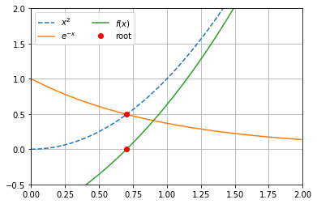
In the case of more than one unknown, or a set of equations that must be satisfied simultaneously, equation \eqref{eq:nlin:fx} is replaced with a vector equation
$$ \begin{equation} \mathbf{f}(\mathbf{x})=\mathbf{0}. \label{eq:nlin:fvec} \end{equation} $$Although this equation looks quite similar to equation \eqref{eq:nlin:fx}, this equation is much harder to solve. The only methods we will cover is the Newton Rapson method, which is a very good method if a good starting point is given. If you have a multidimensional problem, the advice is to try Newton-Raphson, if this method fails you need to try more advanced method, see e.g. [9].
Before we begin with the numerical algorithms, let us consider an example: the van der Waals equation of state. The purpose is to illustrate some of the typical challenges. You are probably familiar with the ideal gas law:
$$ \begin{equation} P\nu=R_gT, \label{eq:nlin:pvt} \end{equation} $$where \( \nu=V/n \) is the molar volume of the gas, \( P \) is the pressure, \( V \) is the volume, \( T \) is the temperature, \( n \) is the number of moles of the gas, and \( R_g \) is the ideal gas constant. This equation is an example of an equation of state (EOS), it relates \( P \), \( T \), and \( \nu \). Thus if we know the pressure and temperature of the gas, we can calculate \( \nu \). Equation \eqref{eq:nlin:pvt} assumes that there are no interactions between the molecules in the gas. Clearly, this is too simplistic, and because of this one normally uses an EOS that better reflect the physical properties of the substance. A very famous EOS is the van der Waal EOS, which is a slight modification of equation \eqref{eq:nlin:pvt}:
$$ \begin{equation} \left(P+\frac{a}{\nu^2}\right)\left(\nu-b\right)=R_gT. \label{eq:nlin:vdw} \end{equation} $$\( a \) and \( b \) are material constants that needs to be determined experimentally. This equation is not used in industrial design, but most equations used in practice are based on equation \eqref{eq:nlin:vdw}. Multiplying equation \eqref{eq:nlin:vdw} with \( \nu^2 \), we get a non linear equation that is cubic in the molar volume. It turns out that cubic EOS are a class of equations that are quite successful in modeling the behavior of real systems [10]. However equation \eqref{eq:nlin:vdw} is a good starting point for more complex and realistic equations.
It is common practice to rescale EOS with respect to the critical point. At the critical point we have [ref]:
$$ \begin{align} \left.\frac{\partial P}{\partial \nu}\right|_{T_c,P_c} &=0 \label{eq:nlin:crit1} \\ \left.\frac{\partial^2 P}{\partial \nu^2}\right|_{T_c,P_c} &=0 \label{eq:nlin:crit2} \end{align} $$From equation \eqref{eq:nlin:crit1}, \eqref{eq:nlin:crit2}, and \eqref{eq:nlin:vdw}, it follows:
$$ \begin{equation} \nu_c=3b\quad,P_c=\frac{a}{27b^2}\quad,R_gT_c=\frac{8a}{27b^2}. \label{eq:nlin:crit3} \end{equation} $$Inserting these equations into equation \eqref{eq:nlin:vdw}, and defining the reduced quantities \( \hat{P}=P/P_c \), \( \hat{T}=T/T_c \), \( \hat{\nu}=\nu/\nu_c \), we get
$$ \begin{equation} \left(\hat{P}+\frac{3}{\hat{\nu}^2}\right)\left(3\hat{\nu}-1\right)=8\hat{T}. \label{eq:nlin:vdwr} \end{equation} $$Figure 23: van der Waal isotherms.
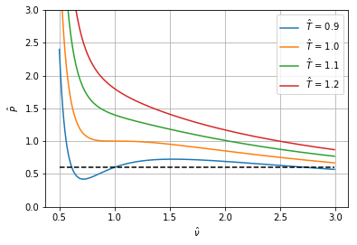
In figure 23, we have plotted the isotherms. Note that if \( \hat{T} < 1 \) (\( T < T_c \)), there might be more than one solution for the molar volume. This is clearly unphysical and additional constraints are needed. For the curve \( \hat{T}=0.9 \), the dashed lined shows that for \( \hat{P}=0.7 \), there are three solutions. This is a typical behavior of the cubic EOS, and physically it corresponds to the saturated case, where the vapor and liquid phase co-exist. The left root is the liquid state and the right root is the vapor state. The root in the middle represents a meta stable state.
The example in figure 23 illustrates some important points. Solving a nonlinear problem might be very easy in part of the parameter space (e.g. when \( T>T_c \) there are only one solution), but extremely hard in other part of the parameter space (e.g. when \( T < T_c \), where there are multiple solutions). However, much of the trick to find a solution is to choose a good starting point. When there are multiple solutions we need to start close to the physical solution.
Use equation \eqref{eq:nlin:vdw}, and the parameters for CO$_2$: a=3.640 L$^2$bar/mol, and b=0.04267 L/mol, to test the van der Waal EOS in equation \eqref{eq:nlin:vdw}. Use that at 2 MPa and 100 $^\circ$C, CO$_2$ has a specific volume of 0.033586 m$^3$/kg.
Solution.
The calculation is straight forward, but it is easy to get an error due to units. We will use SI units: a=0.3640 m$^6$Pa/mol, b=4.267$\cdot10^{-5}$ m$^3$/mol, $R$=8.314J/mol K. The molar volume is obtained by multiplying by the molar weight of CO$_2$: \( M_w \) = 44 g/mol, hence $\nu=1.478\cdot10^{-3}$m$^3$/mol. Using \( P=RT/(\nu-b)-a/\nu^2=1.993 \) MPa, or an error of \( 0.3\% \).
A simple (but not always possible) way of solving a nonlinear equation is to reformulate the problem \( f(x)=0 \) to a problem of the form
$$ \begin{equation} x=g(x). \label{eq:nlin:g} \end{equation} $$The algorithm for solving this equation is to guess at a starting point, \( x_0 \), evaluate \( x_1=g(x_0) \), \( x_2=g(x_1) \), and so on. In some circumstances we might end up at a stable point, where \( x \) does not change. This point is termed a fixed point.
Note that the form of \( g(x) \) is not uniquely determined. For our function defined in equation \eqref{eq:nlin:exp}, we can solve for \( x \) directly
$$ \begin{equation} x=e^{-x/2}, \label{eq:nlin:g2} \end{equation} $$or we could write:
$$ \begin{equation} x=x-x^2+e^{-x}. \label{eq:nlin:g3} \end{equation} $$These functions are illustrated in figure 24, by visual inspection they look very similar, but as we will show in the next exercise the convergence is quite different.
Figure 24: Two examples of iterative functions, that will give the same solution.
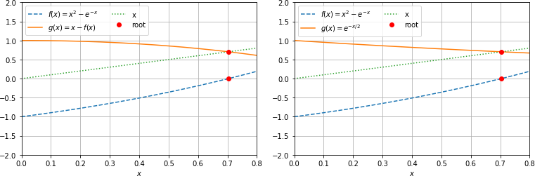
Write a Python function that utilizes the fixed point algorithm in the previous section, find the root of \( f(x)=x^2-e^{-x} \). In one case use \( g(x)=e^{-x/2} \), and in the other case use \( g(x)=x-x^2+e^{-x} \). How many iterations does it take in each case?
Solution.
Below is a straight forward (vanilla) implementation:
def iterative(x,g,prec=1e-8, MAXIT=1000):
'''Approximate solution of x=g(x) by fixed point iterations.
x : starting point for iterations
eps : desired precision
Returns x when x does not change more than prec
and number of iterations MAXIT are not exceeded
'''
eps = 1
n=0
while eps>prec and n < MAXIT:
x_next = g(x)
eps = np.abs(x-x_next)
x = x_next
n += 1
if(np.isinf(x)):
print('Quitting .. maybe bad starting point?')
return x
if (n<MAXIT):
print('Found solution: ', x, ' After ', n, 'iterations')
else:
print('Max number of iterations exceeded')
return x
If we start at \( x=0 \), it will take 174 iterations using \( x-x^2+e^{-x} \) (\( g(x) \)) and only 19 for \( e^{-x/2} \) (\( h(x) \)), the root is $x$=0.70346742.
Extend the code above to take as argument the van der Waal EOS. For simplicity we will use the rescaled EOS in equation \eqref{eq:nlin:vdwr}. Show that for the reduced temperature, $\hat{T}$=1.2, and pressure, $\hat{P}$=1.5, the reduced molar volume \( \hat{nu} \) is 1.3522091.
Solution.
First we rewrite equation \eqref{eq:nlin:vdwr} in a more useful form
$$ \begin{equation} \hat{\nu}=\frac{1}{3}(1+\frac{8\hat{T}}{\hat{P}+3/\hat{\nu}^2}) \label{eq:nlin:sp} \end{equation} $$The right hand side will play the same role as \( g(x) \) above, where \( x \) now is the reduced molar volume, and can be implemented in Python as:
def dvdwEOS(nu,t,p):
return (1+8*t/(p+3/nu**2))/3
Note that this function requires the values of \( \hat{P} \) and \( \hat{T} \), in addition to \( \hat{\nu} \) to return a value. Thus in order to use the fixed point iteration method implemented above, we need to pass arguments to our function. This can easily be achieved by taking advantage of Pythons *args functionality. By simply rewriting our implementation slightly:
def iterative(x,g,*args,prec=1e-8):
MAX_ITER=1000
eps = 1
n=0
while eps>prec and n < MAX_ITER:
x_next = g(x,*args)
eps = np.abs(x-x_next)
x = x_next
n += 1
print('Number of iterations: ', n)
return x
We can find the root by calling the function as:
iterative(1,dvdwEOS,1.2,1.5)
The program returns the correct solution after 71 iterations.
If we replace \( e^{-x} \) with \( e^{1-x^2} \) in equation \eqref{eq:nlin:g3}, our method will not give a solution. You can easily verify that the \( x=1 \) is a solution, so why does our method fail? To investigate this in a bit more detail, we turn to Taylors formula (once again). Assume that the root is located at \( x^* \), and our guess is \( x_k \), then the next \( x \)-value will be
$$ \begin{equation} x_{k+1}=g(x_0)=g(x^*)+g^\prime(x^*)(x_k-x^*)+\cdots \label{eq:nlin:t1} \end{equation} $$The true solution is \( x^* \), hence \( x^*=f(x^*) \), and we can write
$$ \begin{equation} x_{k+1}-x^*=g^\prime(x^*)(x_k-x^*), \label{eq:nlin:t2} \end{equation} $$where we have neglected higher order terms. The point is: at each iteration we want the distance \( x_1-x^* \) to decrease, i.e. to be smaller than \( x_0-x^* \). This can only be achieved if
$$ \begin{equation} |g^\prime(x^*)| < 1. \label{eq:nlin:fpi} \end{equation} $$In our example above we saw that if \( g(x)=x-x^2+e^{-x} \), we used 172 iterations and only 19 iterations if we replaced \( g(x) \) with \( h(x)=e^{-x/2} \) to converge to the same root $x$=0.70346742. We can now understand this, because \( g^\prime(x)=1-2x-e^{-x} \) and \( g(x^*)\simeq-0.90 \), whereas \( h^\prime(x)=-e^{-x/2}/2 \), and \( h^\prime(x^*)\simeq0.35 \). We expect the number of iterations, \( n \), needed to reach a certain precision, \( \varepsilon \), to scale as
$$ \begin{equation} |g^\prime(x^*)|^n=\varepsilon. \label{eq:nlin:scale} \end{equation} $$We expect to use \( \log|h^\prime(x^*)|/\log|g^\prime(x^*)|\simeq10 \) more iterations using \( g(x) \) compared to \( h(x) \), which is close to the observed value of 172/19$\simeq 9$.
taking the derivative with respect to x gives
$$ \begin{align} \frac{d}{dx}g^{-1}(y)&=\frac{dx}{dx}=1,label{eq:nlin:fpi1}\\ \frac{dg^{-1}(y)}{dy}\frac{dy}{dx}&=\frac{dx}{dx}=1,label{eq:nlin:fpi2}\\ \frac{dg^{-1}(y)}{dy}&=\frac{1}{\frac{dy}{dx}}=\frac{1}{g^{\prime}(x)} =\frac{1}{g^{\prime}(g^{-1}(y))}.label{eq:nlin:fpi3} \end{align} $$Going from equation \eqref{eq:nlin:fpi1} to \eqref{eq:nlin:fpi2}, we have used the chain rule. Equation \eqref{eq:nlin:fpi3} is general, let us now specify to our fixed point iteration. Then we can use \( x^*=g(x^*)=y^* \), and \( x^*=g^{-1}(y^*)=g^{-1}(x^*) \) hence we can write the last equation as
$$ \begin{equation} \frac{d}{dx}g^{-1}(x^*)=\frac{1}{g^{\prime}(x^*)}. \label{eq:nlin:fpif} \end{equation} $$The solution to \( x=e^{1-x^2} \) is clearly \( x=1 \).
Solution.
First, we calculate the derivative of \( g(x) \), \( g^\prime(x)=-2xe^{1-x^2} \), hence \( g^\prime(x^*)=-2 \) and \( |g^\prime(x^*)|>1 \). This is an unstable fixed point, and if we start a little bit off from this point we will spiral away from it.
Inverting \( y=g(x) \) gives us $ g^{-1} (y)=\sqrt{1-\ln y}$. Note that \( y^*=x^*=1 \) is a solution to this equation as it should be. The derivative is
$$ \begin{equation} {g^{-1}}^\prime(y)=-\frac{1}{2\sqrt{1-\ln y}}, \label{_auto38} \end{equation} $$and $ {g^{-1}}^\prime(y^*)=-1/2 $. It takes about 30 iterations to reach the correct solution \( y^*=1 \), when the starting point is \( y=0 \).
The rate of convergence is the speed at which a convergent sequence approach the limit. Assume that our sequence \( x_{k} \) converges to the number \( x^* \), the sequence is said to converge linearly to \( x^* \) if there exists a number \( \mu\in < 0,1> \), such that
$$ \begin{equation} \lim_{k\to\infty}=\frac{|x_{k+1}-x^*|}{|x_k-x^*|}=\mu \label{eq:nlin:linconv} \end{equation} $$Inserting equation \eqref{eq:nlin:t2} in equation \eqref{eq:nlin:linconv}, we get:
$$ \begin{equation} \lim_{k\to\infty}=\frac{|x_{k+1}-x_k|}{x_k-x^*} =\frac{|g^\prime(x^*)(x_k-x^*)|}{|x_k-x^*|}=|g^\prime(x^*)|. \label{eq:nlin:ling} \end{equation} $$Hence the fixed point iteration is expected to converge linearly to the correct solution. The definition in equation \eqref{eq:nlin:linconv}, can be extended to include the definition of quadratic, cubic, etc. convergence:
$$ \begin{equation} \lim_{k\to\infty}=\frac{|x_{k+1}-x^*|}{|x_k-x^*|^q}=\mu. \label{eq:nlin:qconv} \end{equation} $$If \( q=2 \) the convergence is said to be quadratic and so on.
The idea behind bisection is that the root is bracketed, i.e. that there exists two points \( a \) and \( b \), such that \( f(a)\cdot f(b) < 0 \). In practice it might be a challenge to find these two points. However, if you know that the function has a only root between two values, and that speed is not a big issue this method guarantees that the root will be found within a finite number of steps. The basic idea behind the method is to divide the interval into two (i.e. bisecting the interval). The method only works if the function is continuous on the interval.
Figure 25: Illustration of the bisection method for the van der Waal EOS.
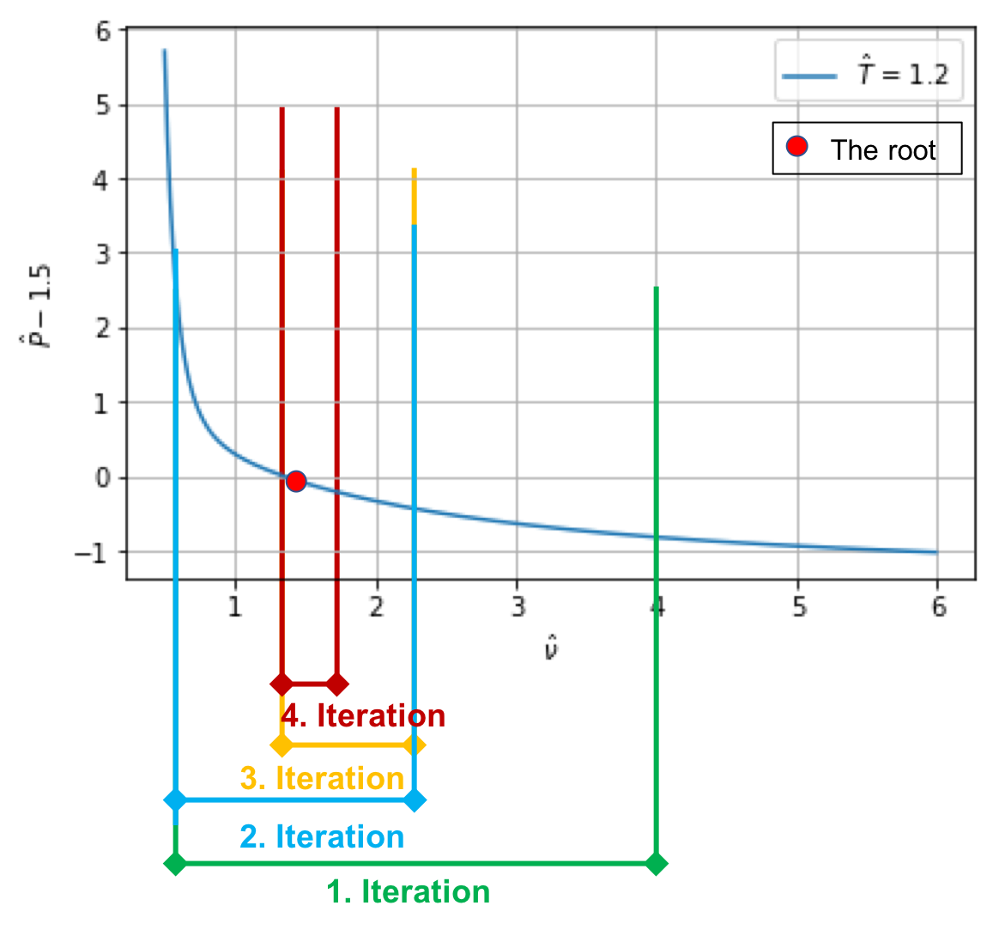
The algorithm is as follows:
In figure 25, there is a graphical illustration. Below is an implementation of the bisection method.
def bisection(f,a,b,PREC=1e-8,MAXIT=100):
'''Approximate solution of f(x)=0 on interval [a,b] by bisection.
f : f(x)=0.
a,b : brackets the root f(a)*f(b) has to be negative
PREC: desired precision
Returns the midpoint when it is closer than eps to the root,
unless MAXIT are not exceeded
'''
if f(a)*f(b) > 0:
print('You need to bracket the root, f(a)*f(b) >= 0')
return None
prec=10*PREC
c = 0.5*(a + b)
for n in range(MAXIT):
c_old = c
fc = f(c)
if fc == 0:
print('Found exact solution ', c,
' after ', n, 'iterations' )
return c
if f(a)*fc < 0:
b = c
else:
a = c
c = 0.5*(a+b)
prec=np.abs(c_old-c)
if n<MAXIT-1:
print('Found solution ', c,' after ', n, 'iterations' )
return c
else:
print('Max number of iterations: ', MAXIT, ' reached.')
print('Try to increase MAXIT')
print('Returning best guess, value of function is: ', fc)
return c
Note that the implementation of the bisection algorithm is only a few lines of code, and most of the code is to give warnings to the user. In this case it is important to do additional checking, and give the user warnings. If $f(c)$=0, then we must stop and return the exact solution. If we only test if \( f(a)\cdot f(c) \) is greater or lower than zero the algorithm would fail.
If \( c_n \) is the midpoint after \( n \) steps, the difference between the solution \( x^* \) and \( c_n \) is
$$ \begin{equation} |c_n-x^*| \le \frac{|b-a|}{2^n} \label{eq:nlin:bisec} \end{equation} $$Using our previous definition in equation \eqref{eq:nlin:qconv}, we find that
$$ \begin{equation} \lim_{k\to\infty}=\frac{|c_{k+1}-x^*|}{|c_k-x^*|}\le\frac{|b-a|/2^{n+1}}{|b-a|/2^n}=\frac{1}{2}, \label{eq:nlin:bsc1} \end{equation} $$hence the bisection method converges linearly.
Figure 26: Illustration of Newtons method for the van der Waals EOS.
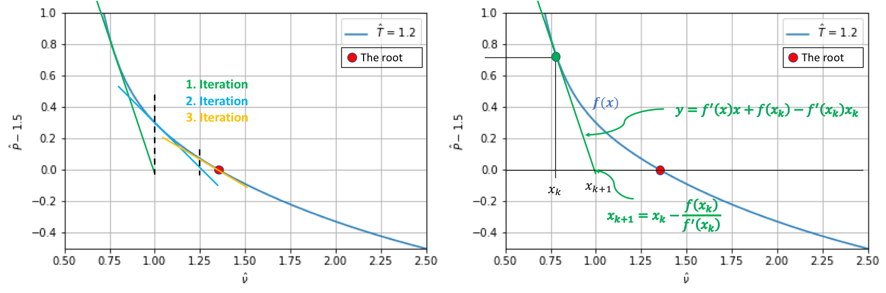
We can easily derive the algorithm by finding the formula for the tangent line. Using \( y=ax+b \) for the tangent line, we immediately know that \( a=f^\prime(x_k) \). \( b \) can be found as we know that the line intersects \( (x_k,f(x_k)) \): \( f(x_k)=f^\prime(x_k)x_k+b \), hence the equation for the tangent line is \( y=f^\prime(x_k)x+f(x_k)-f^\prime(x_k)x_k \). The next point is located where \( y \) crosses the \( x \)-axis, hence \( 0=f^\prime(x_k)x_{k+1}+f(x_k)-f^\prime(x_k)x_k \). Rearranging this equation, we can write Newtons method in the standard form
$$ \begin{equation} x_{k+1}=x_k-\frac{f(x_k)}{f^\prime(x_k)}. \label{eq:nlin:newton} \end{equation} $$Note that the derivative of \( f(x) \) enters in equation \eqref{eq:nlin:newton}, which means that if our function has a extremal value in our search domain, Newtons method most likely will fail. In particular \( x_1 \), and \( x_4 \) in the figure to the right in figure 27 are bad starting point for Newtons method.
Figure 27: Illustration of some of the possible challenges with Newtons method. Note that if the derivative is zero somewhere in the search interval, Newtons method will fail.
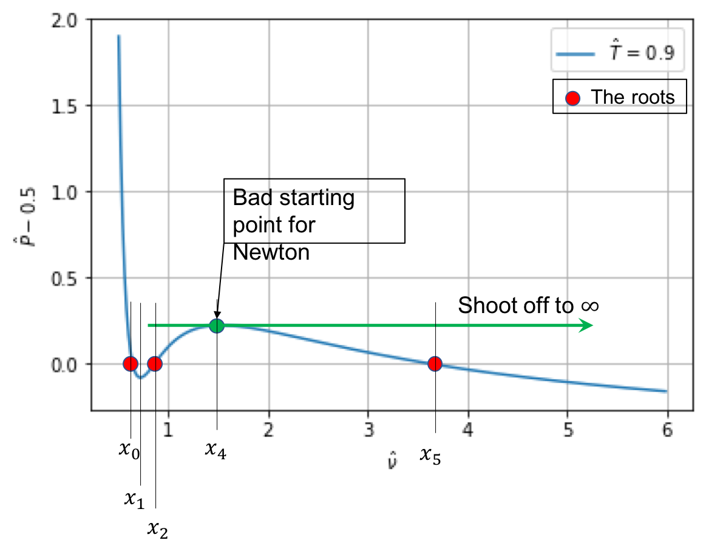
An implementation is shown below.
def newton(f,x, prec=1e-8,MAXIT=500):
'''Approximate solution of f(x)=0 by Newtons method.
The derivative of the function is calculated numerically
f : f(x)=0.
x : starting point
eps : desired precision
Returns x when it is closer than eps to the root,
unless MAX_ITERATIONS are not exceeded
'''
MAX_ITERATIONS=MAXIT
x_old = x
h = 1e-4
for n in range(MAX_ITERATIONS):
x_new = x_old - 2*h*f(x_old)/(f(x_old+h)-f(x_old-h))
if(abs(x_new-x_old)<prec):
print('Found solution:', x_new,
', after:', n, 'iterations.' )
return x_new
x_old=x_new
print('Max number of iterations: ', MAXIT, ' reached.')
print('Try to increase MAXIT or decrease prec')
print('Returning best guess, value of function is: ', f(x_new))
return x_new
Comparing figure 25 and 26, you immediately get the sense that Newtons method converges faster, and indeed it does.
Newtons method is similar to the fixed point method, but where we do not use \( g(x)=x-f(x) \), but \( g(x)=x-\frac{f(x)}{f^\prime(x)} \). We will now analyze Newtons method, using the same approach as in the section When does the fixed point method fail?. First we expand \( g(x) \) around the root \( x^* \)
$$ \begin{equation} x_{k+1}=g(x_k)=g(x^*)+g^\prime(x^*)(x_k-x^*)+\frac{1}{2}g^{\prime\prime}(x^*)(x_k-x^*)^2, \label{eq:nlin:nsec} \end{equation} $$where we have skipped all higher order terms. You can easily verify that
$$ \begin{align} g^\prime(x) &=\frac{f^{\prime\prime}(x)f(x)}{f^\prime(x)^2} \label{eq:nlin:gn2} \\ g^{\prime\prime}(x) &=\frac{(f^{\prime\prime\prime}(x)f^\prime(x)-2f^{\prime\prime}(x)^2f^\prime(x))f(x) +f^{\prime\prime}(x)f^\prime(x)^2}{f^\prime(x)^4}. \label{eq:nlin:gn3} \end{align} $$\( x^* \) is a solution, hence \( f(x^*)=0 \), we then find from equation \eqref{eq:nlin:gn2} and \eqref{eq:nlin:gn3} that \( g^\prime(x^*)=0 \), and \( g^{\prime\prime}(x^*)=f^{\prime\prime}(x^*)/f^{\prime}(x^*)^2 \). Thus from equation \eqref{eq:nlin:nsec} we get
$$ \begin{equation} x_{k+1}=x^*+\frac{1}{2}\frac{f^{\prime\prime}(x^*)}{f^{\prime}(x^*)^2}(x_k-x^*)^2, \label{eq:nlin:nsecn} \end{equation} $$or equivalently:
$$ \begin{equation} \frac{x_{k+1}-x^*}{(x-x^*)^2}=\frac{1}{2}\frac{f^{\prime\prime}(x^*)}{f^{\prime}(x^*)^2}. \label{eq:nlin:nsecn2} \end{equation} $$The denominator has a power of two, and hence Newtons method is quadratic convergent (assuming that the sequence \( x_{k+1} \) is a convergent sequence). Note that it also follows from the analyses above that Newtons method will fail if the derivative at the root, \( f^\prime(x^*) \), is zero.
Find the root of \( f(x)=x^2-e^{-x} \) using bisection, fixed point, and Newtons method, start at \( x=0 \). How many iterations do you need to use reach a precision of \( 10^{-8} \)? What happens if you widen the search domain or start further away from the root?
Solution.
The root is located at \( x^*=0.70346742 \).
Figure 28: Newtons method performs poorly far away due to the shape of the function close to \( x=-100 \), bisection performs much better while the fixed point method fails.
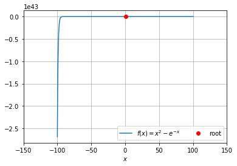
Note that it is not given which method is best, but if we are ''close'' to the root Newtons method is usually superior. If we are far away, other methods might work better. In many cases one uses a more stable method far away from the root, and then ''polish up'' the root by a couple of Newton iterations [9]. See also Brents method which combines bisection and linear interpolation (secant method) [9].
The Newtons method is very good if you can choose a good starting point, and you can give in an analytical formula for the derivative. In some cases it is not possible to calculate the derivative analytically, then a very good method of choice is the secant method. It can be derived by simply replacing the derivative in Newtons method by the finite difference approximation
$$ \begin{equation} f^\prime(x_k)\to \frac{f(x_k)-f(x_{k-1})}{x_k-x_{k-1}}. \label{eq:nlin:sec1} \end{equation} $$Inserting this equation into equation \eqref{eq:nlin:newton}, we get
$$ \begin{align} x_{k+1}&=x_k-f(x_k)\frac{x_k-x_{k-1}}{f(x_k)-f(x_{k-1})}\no \label{_auto39}\\ &=\frac{x_{k-1}f(x_k)-x_kf(x_{k-1})}{f(x_k)-f(x_{k-1})}. \label{eq:nlin:sec2} \end{align} $$For a graphical illustration see figure 29
Figure 29: A graphical illustration of the secant method. Note that the starting points \( x_0 \) and \( x_1 \) do not need to be close. The next point is where the (secant) line crosses the \( x \)-axis.
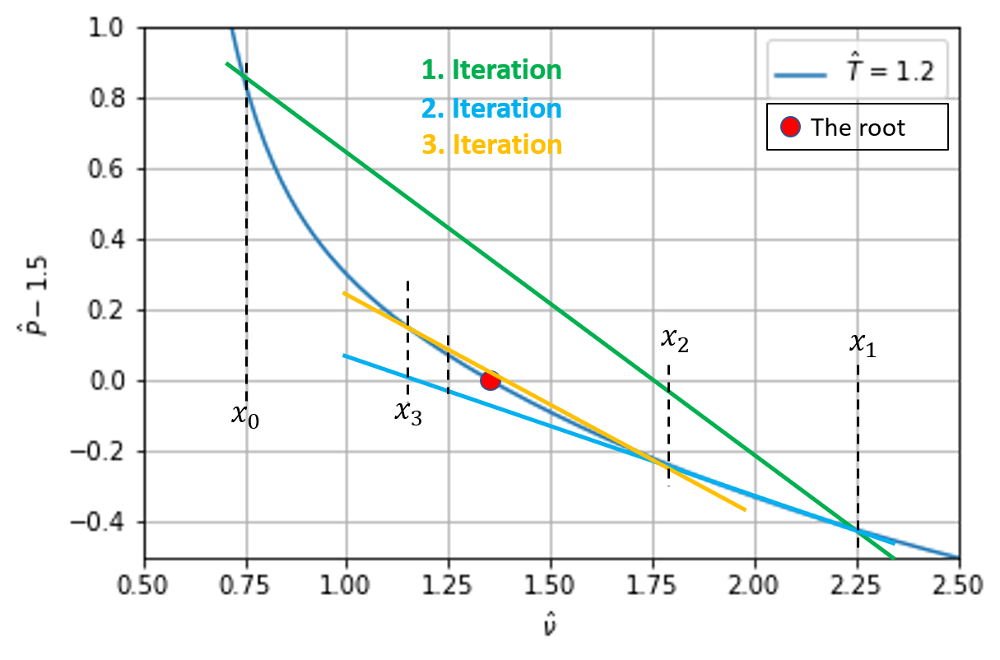
The derivation of the rate of convergence for the secant method is a bit more involved. To simplify the notation we introduce the notation \( \varepsilon_k\equiv x_k-x^* \), where \( x^* \) is the exact solution. Subtracting \( x^* \) from each side of equation \eqref{eq:nlin:sec2} we get
$$ \begin{align} \varepsilon_{k+1}&=x_{k+1}-x^*=\frac{x_{k-1}f(x_k)-x_kf(x_{k-1})}{f(x_k)-f(x_{k-1})}-x^*, \no \label{_auto40}\\ \varepsilon_{k+1}&=\frac{\varepsilon_{k-1}f(x_k)-\varepsilon_k f(x_{k-1})}{f(x_k)-f(x_{k-1})}, \label{eq:nlin:sec3} \end{align} $$we now make a Taylor expansion of \( f(x_k) \) and \( f(x_{k-1}) \) about the root \( x^* \)
$$ \begin{align} f(x_k) &=f(x^*)+f^\prime(x^*)(x_k-x^*)+\frac{1}{2}f^{\prime\prime}(x^*)(x_k-x^*)^2+\cdots ,\no \label{_auto41}\\ &=f^\prime(x^*)\varepsilon_k+\frac{1}{2}f^{\prime\prime}(x^*)\varepsilon_k^2+\cdots . \label{_auto42}\\ f(x_{k-1}) &=f(x^*)+f^\prime(x^*)(x_{k-1}-x^*)+\frac{1}{2}f^{\prime\prime}(x^*)(x_{k-1}-x^*)^2+\cdots,\no \label{_auto43}\\ &=f^\prime(x^*)\varepsilon_{k-1}+\frac{1}{2}f^{\prime\prime}(x^*)\varepsilon_{k-1}^2+\cdots , \label{_auto44} \end{align} $$where we have used the fact that \( f(x^*)=0 \). Inserting these equations into equation \eqref{eq:nlin:sec3} and neglecting terms of order \( \varepsilon_k^3 \) we get
$$ \begin{align} \varepsilon_{k+1}&=\frac{\varepsilon_{k-1}\left[f^\prime(x^*)\varepsilon_k+\frac{1}{2}f^{\prime\prime}(x^*)\varepsilon_k^2\right] -\varepsilon_k\left[ f^\prime(x^*)\varepsilon_{k-1}+\frac{1}{2}f^{\prime\prime}(x^*)\varepsilon_{k-1}^2\right]}{f^\prime(x^*)\varepsilon_k+\frac{1}{2}f^{\prime\prime}(x^*)\varepsilon_k^2-\left[ f^\prime(x^*)\varepsilon_{k-1}+\frac{1}{2}f^{\prime\prime}(x^*)\varepsilon_{k-1}^2\right]},\no \label{_auto45}\\ &=\frac{\varepsilon_k\varepsilon_{k-1}\left[\varepsilon_k-\varepsilon_{k-1}\right]}{\left[f^\prime(x^*)+\frac{1}{2}f^{\prime\prime}(x^*)(\varepsilon_k+\varepsilon_{k-1})\right](\varepsilon_k-\varepsilon_{k-1})},\no \label{_auto46}\\ &=\frac{f^{\prime\prime}(x^*)}{2f^\prime(x^*)}\varepsilon_k\varepsilon_{k-1},label{eq:nlin:sec4} \end{align} $$where we have neglected higher powers of \( \varepsilon \). We are searching for a solution of the form \( \varepsilon_{k+1}=K\varepsilon_k^q \), \( q \) is the rate of convergence. We can invert this equation to get \( \varepsilon_k=K^{-1/q}\varepsilon_{k+1}^{1/q} \), or alternatively \( \varepsilon_{k-1}=K^{-1/q}\varepsilon_{k}^{1/q} \) (just set \( k\to k-1 \)). Inserting these equations into equation \eqref{eq:nlin:sec4}
$$ \begin{equation} \varepsilon_k^q=\frac{f^{\prime\prime}(x^*)}{2f^\prime(x^*)}\varepsilon_kK^{-1/q}\varepsilon_{k}^{1/q}. \label{eq:nlin:sec5} \end{equation} $$Clearly, if this equation is to have a solution we must have
$$ \begin{align} \frac{f^{\prime\prime}(x^*)}{2f^\prime(x^*)}K^{-1/q} &=1\no \label{_auto47}\\ \varepsilon_k^q=\varepsilon_k\varepsilon_{k}^{1/q}=\varepsilon_{k}^{1+1/q}, \label{_auto48} \end{align} $$or \( q=1+1/q \). Solving this equation we get \( q=(1\pm\sqrt{5})/2 \), neglecting the negative solution, we find the rate of convergence for the secant method \( q=(1+\sqrt{5})/2\simeq 1.618 \).
The derivation of Newtons method, equation \eqref{eq:nlin:newton}, done in the previous section was based on figure 26. We will now derive it using a slightly different approach, but which lends itself easier to extend Newtons method to higher dimensions. The starting point is to expand the function around \( x_k \), using Taylors formula
$$ \begin{equation} f(x)=f(x_k)+f^\prime(x_k)(x-x_k) + \cdots\,. \label{eq:nlin:nt} \end{equation} $$Equation \eqref{eq:nlin:newton} can be derived from equation \eqref{eq:nlin:nt} by simply demanding that we keep the linear terms, and that the next point \( x_{k+1} \) is located where the linear approximation intersects the \( x \)-axis, i.e. simply set \( f(x)=0 \), and \( x=x_{k+1} \) in equation \eqref{eq:nlin:nt}.
In higher order dimensions, we solve equation \eqref{eq:nlin:fvec}, and equation \eqref{eq:nlin:nt} is
$$ \begin{equation} \mathbf{f}(\mathbf{x})=\mathbf{f}(\mathbf{x}_k)+ \mathbf{J}(\mathbf{x}_k)(\mathbf{x}-\mathbf{x}_k) + \cdots\,. \label{eq:nlin:ntd} \end{equation} $$\( \mathbf{J}(\mathbf{x}_k) \) is the Jacobian. As before, we simply set \( \mathbf{f}(\mathbf{x})=\mathbf{0} \), \( \mathbf{x}=\mathbf{x}_{k+1} \), and keep the linear terms, hence
$$ \begin{equation} \mathbf{x}_{k+1}=\mathbf{x}_k-\mathbf{J}^{-1}(\mathbf{x}_k)\mathbf{f}(\mathbf{x}_k). \label{eq:nlin:ntd2} \end{equation} $$To make the mathematics a bit more clear, let us specify to \( 2D \). Assume that \( \mathbf{f}(\mathbf{x})=[f_x(x,y),f_y(x,y)] \), then the Jacobian is
$$ \begin{equation} \mathbf{J}(\mathbf{x}_k)= \left( \begin{array}{cc} \frac{\partial f_x}{\partial x}&\frac{\partial f_x}{\partial y}\\ \frac{\partial f_y}{\partial x}&\frac{\partial f_y}{\partial y} \end{array} \right). \label{eq:nlin:jac} \end{equation} $$This method used is to minimize functions (does not work for root finding). In many nonlinear problems, we would like to minimize (or maximize) a function. An ideal 2D example is shown in figure 30. The algorithm moves in the direction of steepest descent. Note that the step size might change towards the search.
Figure 30: A very simple example of the gradient descent method.
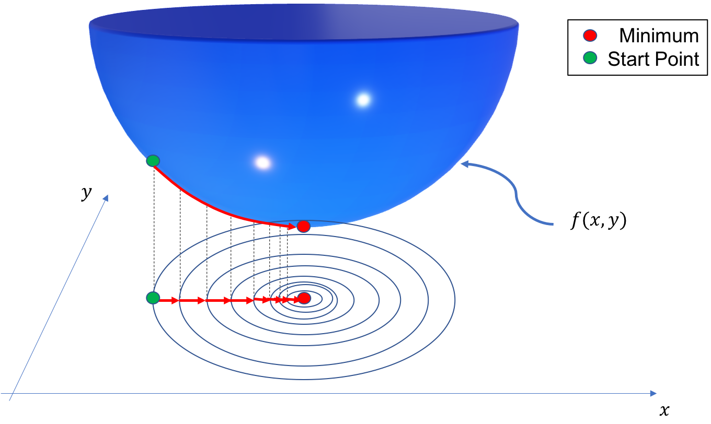
Assume that we have a function \( \mathbf{f}(\mathbf{x}) \), that we would like to minimize. The gradient descent algorithm is simply to update parameters according to the derivative (gradient) of \( \mathbf{f} \)
$$ \begin{equation} \mathbf{x}_{k+1}=\mathbf{x}_{k}-\gamma\nabla\mathbf{f}. \label{eq:nlin:stpdc} \end{equation} $$\( \gamma \) is the learning rate, and a good choice of \( \gamma \) is important. \( \gamma \) might also change from one iteration to the other, and does not have to be constant.
A very typical example is if we have a model and we would like to fit some parameters of the model to a data set (e.g. linear regression). Assume that we have observations \( (x_i,y_i) \) and model predictions \( f(x_i,\mathbf{\beta}) \), the model parameters are contained in the vector \( \mathbf{\beta} \). The least square, \( S \), is the square of the sum of all the residuals, i.e. the difference between the observations and model predictions
$$ \begin{equation} S=\sum_i(y_i-f(x_i,\mathbf{\beta}))^2. \label{eq:nlin:lsq} \end{equation} $$Specializing to linear regression, we choose the model to be linear
$$ \begin{equation} f(x_i,\mathbf{\beta})=b_0+b_1x_i. \label{eq:nlin:lin} \end{equation} $$Equation \eqref{eq:nlin:lsq} now takes the form
$$ \begin{equation} S=\sum_i(y_i-b_0+b_1x_i)^2. \label{eq:nlin:lsq2} \end{equation} $$The gradients are:
$$ \begin{align} \frac{\partial S}{\partial b_0}&=-2\sum_i(y_i-b_0+b_1x_i),\no \label{_auto49}\\ \frac{\partial S}{\partial b_1}&=-2\sum_i(y_i-b_0+b_1x_i)x_i,. \label{eq:nlin:dlsq} \end{align} $$
Solution.
Below is an implementation of the gradient descent method with a constant learning rate
def gradient_descent(f,x,df, g=.001, prec=1e-8,MAXIT=10):
'''Minimize f(x) by gradient descent.
f : min(f(x))
x : starting point
df : derivative of f(x)
g : learning rate
prec: desired precision
Returns x when it is closer than eps to the root,
unless MAXIT are not exceeded
'''
x_old = x
for n in range(MAXIT):
plot_regression_line(x_old)
x_new = x_old - g*df(x_old)
if(abs(np.max(x_new-x_old))<prec):
print('Found solution:', x_new,
', after:', n, 'iterations.' )
return x_new
x_old=x_new
print('Max number of iterations: ', MAXIT, ' reached.')
print('Try to increase MAXIT or decrease prec')
print('Returning best guess, value of function is: ', f(x_new))
return x_new
The linear regression is implemented as below
x_obs_ = np.array([0, 1, 2, 3, 4, 5, 6, 7, 8, 9])
y_obs_ = np.array([1, 3, 2, 5, 7, 8, 8, 9, 10, 12])
def plot_regression_line(b,x=x_obs_, y=y_obs_):
global N_
# plotting the actual points as scatter plot
plt.scatter(x, y, color = "m",
marker = "o", s = 30,label="data")
# predicted response vector
y_pred = b[0] + b[1]*x
# plotting the regression line
if(len(b)>1):
# plt.plot(x, y_pred, color = "g", label = "R-squared = {0:.3f}".format(b[2]))
plt.plot(x, y_pred, color = "g", label = "iteration:" + str(N_) +", (b[0],b[1])= ({0:.3f}".format(b[0]) + ", {0:.3f})".format(b[1]))
plt.legend()
else:
plt.plot(x, y_pred, color = "g")
# putting labels
plt.xlabel('x')
plt.ylabel('y')
plt.grid()
plt.legend()
# plt.savefig('../fig-nlin/stdec'+str(N_)+'.png', bbox_inches='tight',transparent=True)
N_=N_+1
# function to show plot
plt.show()
def Jacobian(x,f,dx=1e-5):
N=len(x)
x0=np.copy(x)
f0=f(x)
J=np.zeros(shape=(N,N))
for j in range(N):
x[j] = x[j] + dx
for i in range(N):
J[i][j] = (f(x)[i]-f0[i])/dx
x[j] = x[j] - dx
return J
def newton_rapson(x,f,J=None, jacobian=False, prec=1e-8,MAXIT=100):
'''Approximate solution of f(x)=0 by Newtons method.
The derivative of the function is calculated numerically
f : f(x)=0.
J : Jacobian
x : starting point
eps : desired precision
Returns x when it is closer than eps to the root,
unless MAX_ITERATIONS are not exceeded
'''
MAX_ITERATIONS=MAXIT
x_old = np.copy(x)
for n in range(MAX_ITERATIONS):
plot_regression_line(x_old)
if not jacobian:
J_=Jacobian(x_old,f)
else:
J_=J(x_old)
z=np.linalg.solve(J_,-f(x_old))
x_new=x_old+z
if(np.sum(abs(x_new-x_old))<prec):
print('Found solution:', x_new,
', after:', n, 'iterations.' )
return x_new
x_old=np.copy(x_new)
print('Max number of iterations: ', MAXIT, ' reached.')
print('Try to increase MAXIT or decrease prec')
print('Returning best guess, value of function is: ', f(x_new))
return x_new
def gradient_descent(f,x,df, g=.001, prec=1e-8,MAXIT=10):
'''Minimize f(x) by gradient descent.
f : min(f(x))
x : starting point
df : derivative of f(x)
g : learning rate
prec: desired precision
Returns x when it is closer than eps to the root,
unless MAXIT are not exceeded
'''
x_old = x
for n in range(MAXIT):
plot_regression_line(x_old)
x_new = x_old - g*df(x_old)
if(abs(np.max(x_new-x_old))<prec):
print('Found solution:', x_new,
', after:', n, 'iterations.' )
return x_new
x_old=x_new
print('Max number of iterations: ', MAXIT, ' reached.')
print('Try to increase MAXIT or decrease prec')
print('Returning best guess, value of function is: ', f(x_new))
return x_new
#end
def S(b,x=x_obs_,y=y_obs_):
return np.sum((y-b[0]-b[1]*x)**2)
def dS(b,x=x_obs_,y=y_obs_):
return np.array([-2*np.sum(y-b[0]-b[1]*x),
-2*np.sum((y-b[0]-b[1]*x)*x)])
def J(b,x=x_obs_,y=y_obs_):
N=len(b)
J=np.zeros(shape=(N,N))
xs=np.sum(x)
J[0][0]=2*len(x)
J[0][1]=2*xs
J[1][0]=2*xs
J[1][1]=2*np.sum(x*x)
return J
N_=0
print('Gradient ')
b=np.array([0,0])
The first four iterations are shown in figure 31. If we choose a learning rate that is too high, we will move past the minimum, and the solution will oscillate. This can be avoided by lowering the learning rate as we iterate, by e.g. replacing g with g/(n+1) in the implementation above.
Figure 31: First four iterations of the gradient descent solution of linear regression.
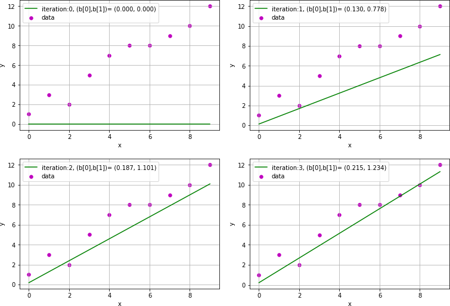
In this chapter we have covered the basic, but you should now be well equipped to dive into other methods. We highly recommend [9] as a starting point, although the code examples are written in C++, the theory is presented in a very accurate, but informal way.
The only way to improve in coding and algorithmic thinking is practice. The concept of one dimensional numerical integration is easy to understand, i.e. to calculate the area under a curve. In this chapter we will implement several numerical methods, and it will serve as a very simple playground that illustrates the key aspects of numerical modeling
The main point of this chapter is not to develop your own integration methods, the built in methods in Scipy will work in most cases. However, the way to break down the main task of calculating an integral into smaller tasks that is understandable by a computer, may work as a template for many different problems you would typically solve using a computer. A second motivation is that by analyzing the origin of numerical errors gives ideas for improving the algorithm, which is transferable to other problems.
Numerical integration is encountered in numerous applications in physics and engineering sciences. Let us first consider the most simple case, a function \( f(x) \), which is a function of one variable, \( x \). The most straight forward way of calculating the area \( \int_a^bf(x)dx \) is simply to divide the area under the function into \( N \) equal rectangular slices with size \( h=(b-a)/N \), as illustrated in figure 32. The area of one box is:
$$ \begin{equation} M(x_k,x_k+h)=f(x_k+\frac{h}{2}) h,\label{eq:numint:mid0} \end{equation} $$and the area of all the boxes is:
$$ \begin{align} I(a,b)&=\int_a^bf(x)dx\simeq\sum_{k=0}^{N-1}M(x_k,x_k+h)\nonumber\\ &=h\sum_{k=0}^{N-1}f(x_k+\frac{h}{2})=h\sum_{k=0}^{N-1}f(a+(k+\frac{1}{2})h). \label{eq:numint:mid1} \end{align} $$Note that the sum goes from \( k=0,1,\ldots,N-1 \), a total of \( N \) elements. We could have chosen to let the sum go from \( k=1,2,\ldots,N \). In Python, C, C++ and many other programming languages the arrays start by indexing the elements from \( 0,1,\ldots \) to \( N-1 \), therefore we choose the convention of having the first element to start at \( k=0 \).
Figure 32: Integrating a function with the midpoint rule.
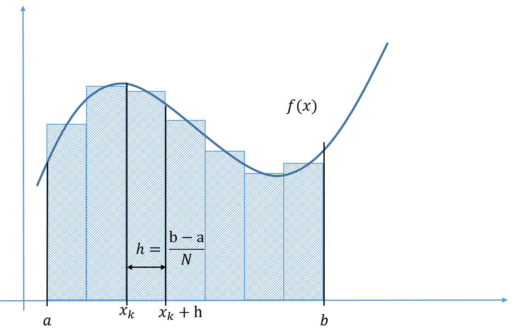
Below is a Python code, where this algorithm is implemented for \( \int_0^\pi\sin (x)dx \)
import numpy as np
# Function to be integrated
def f(x):
return np.sin(x)
def midpoint(f,a,b,N):
"""
f : function to be integrated on the domain [a,b]
N : number of integration points
"""
h=(b-a)/N
x=np.arange(a+0.5*h,b,h)
return h*np.sum(f(x))
N=10
a=0
b=np.pi
Area = midpoint(f,a,b,N)
print('Numerical value= ', Area)
print('Error= ', (2-Area)) # Analytical result is 2
In the implementation above, we have taken advantage of Numpys ability to pass a vector to a function. This greatly enhances the speed and makes clean, readable code. If you were coding in a lower level programming language like Fortran, C or C++, you would probably implement the loop like (in Python syntax):
for k in range(0,N): # loop over k=0,1,..,N-1
val = lower_limit+(k+0.5)*h # midpoint value
area += func(val)
return area*h
The numerical error in the above example is quite low, only about 2$\%$ for \( N=5 \). However, by just looking at the graph above it seems likely that we can develop a better algorithm by using trapezoids instead of rectangles, see figure 33.
Figure 33: Integrating a function with the trapezoidal rule.
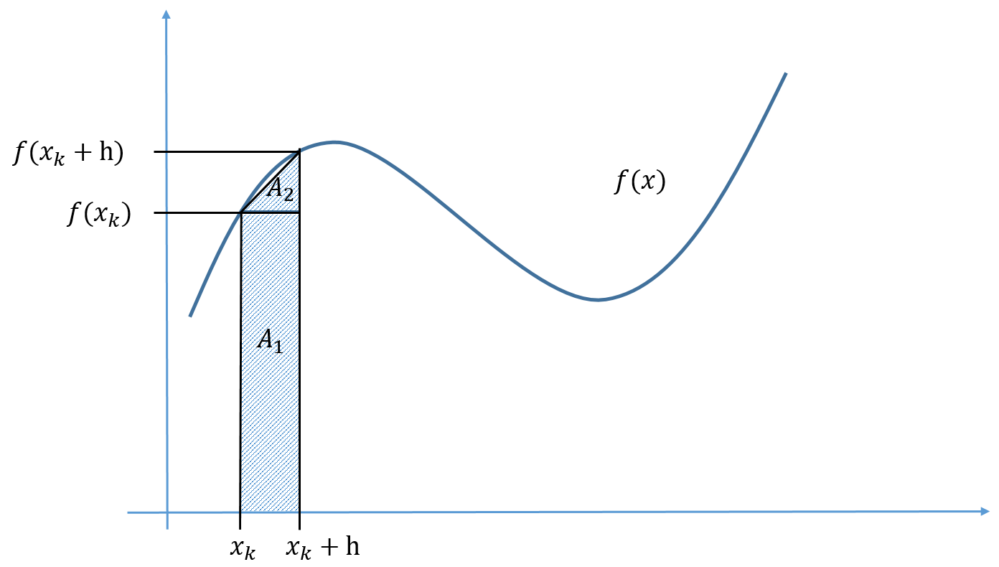
Earlier we approximated the area using the midpoint value: \( f(x_k+h/2)\cdot h \). Now we use \( A=A_1+A_2 \), where \( A_1=f(x_k)\cdot h \) and \( A_2=(f(x_k+h)-f(x_k))\cdot h/2 \), hence the area of one trapezoid is:
$$ \begin{equation} A\equiv T(x_k,x_k+h)=(f(x_k+h)+f(x_k))h/2. \label{_auto50} \end{equation} $$This is the trapezoidal rule, and for the whole interval we get:
$$ \begin{align} I(a,b)&=\int_a^bf(x)dx\simeq\frac{1}{2}h\sum_{k=0}^{N-1}\left[f(x_k+h)+f(x_k)\right] \nonumber \\ &=h\left[\frac{1}{2}f(a)+f(a+h) + f(a+2h) +\nonumber\right. \\ &\left.\qquad\cdots + f(a+(N-2)h)+\frac{1}{2}f(b)\right]\nonumber \\ &=h\left[\frac{1}{2}f(a)+\frac{1}{2}f(b)+\sum_{k=1}^{N-2}f(a+k h)\right]. \label{_auto51} \end{align} $$Note that this formula was bit more involved to derive, but it requires only one more function evaluations compared to the midpoint rule. Below is a python implementation:
def trapezoidal(f,a,b,N):
"""
f : function to be integrated on the domain [a,b]
N : number of integration points
"""
h=(b-a)/N
x=np.arange(a+h,b,h)
return h*(0.5*f(a)+0.5*f(b)+np.sum(f(x)))
In the table below, we have calculated the numerical error for various values of \( N \).
| \( N \) | \( h \) | Error Midpoint | Error Trapezoidal |
| 1 | 3.14 | -57\% | 100\% |
| 5 | 0.628 | -1.66\% | 3.31\% |
| 10 | 0.314 | -0.412\% | 0.824\% |
| 100 | 0.031 | -4.11E-3\% | 8.22E-3\% |
Note that we get the surprising result that this algorithm performs poorer, a factor of 2 than the midpoint rule. How can this be explained? By just looking at figure 32, we see that the midpoint rule actually over predicts the area from \( [x_k,x_k+h/2] \) and under predicts in the interval \( [x_k+h/2,x_{k+1}] \) or vice versa. The net effect is that for many cases the midpoint rule give a slightly better performance than the trapezoidal rule. In the next section we will investigate this more formally.
It is important to know the accuracy of the methods we are using, otherwise we do not know if the computer produce correct results. In the previous examples we were able to estimate the error because we knew the analytical result. However, if we know the analytical result there is no reason to use the computer to calculate the result(!). Thus, we need a general method to estimate the error, and let the computer run until a desired accuracy is reached.
In order to analyze the midpoint rule in more detail we approximate the function by a Taylor series at the midpoint between \( x_k \) and \( x_k+h \):
$$ \begin{align} f(x)&=f(x_k+h/2)+f^\prime(x_k+h/2)(x-(x_k+h/2))\nonumber\\ &+\frac{1}{2!}f^{\prime\prime}(x_k+h/2)(x-(x_k+h/2))^2+\mathcal{O}(h^3) \label{_auto52} \end{align} $$Since \( f(x_k+h/2) \) and its derivatives are constants it is straight forward to integrate \( f(x) \):
$$ \begin{align} I(x_k,x_k+h)&=\int_{x_k}^{x_k+h}\left[f(x_k+h/2)+f^\prime(x_k+h/2)(x-(x_k+h/2))\right.\nonumber\\ &\left.+\frac{1}{2!}f^{\prime\prime}(x_k+h/2)(x-(x_k+h/2))^2+\mathcal{O}(h^3)\right]dx \label{_auto53} \end{align} $$The first term is simply the midpoint rule, to evaluate the two other terms we make the substitution: \( u=x-x_k \):
$$ \begin{align} I(x_k,x_k+h)&=f(x_k+h/2)\cdot h+f^\prime(x_k+h/2)\int_0^h(u-h/2)du\nonumber\\ &+\frac{1}{2}f^{\prime\prime}(x_k+h/2)\int_0^h(u-h/2)^2du+\mathcal{O}(h^4)\nonumber\\ &=f(x_k+h/2)\cdot h-\frac{h^3}{24}f^{\prime\prime}(x_k+h/2)+\mathcal{O}(h^4). \label{_auto54} \end{align} $$Note that all the odd terms cancels out, i.e \( \int_0^h(u-h/2)^m=0 \) for \( m=1,3,5\ldots \). Thus the error for the midpoint rule, \( E_{M,k} \), on this particular interval is:
$$ \begin{equation} E_{M,k}=I(x_k,x_k+h)-f(x_k+h/2)\cdot h=-\frac{h^3}{24}f^{\prime\prime}(x_k+h/2), \label{_auto55} \end{equation} $$where we have ignored higher order terms. We can easily sum up the error on all the intervals, but clearly \( f^{\prime\prime}(x_k+h/2) \) will not, in general, have the same value on all intervals. However, an upper bound for the error can be found by replacing \( f^{\prime\prime}(x_k+h/2) \) with the maximal value on the interval \( [a,b] \), \( f^{\prime\prime}(\eta) \):
$$ \begin{align} E_{M}&=\sum_{k=0}^{N-1}E_{M,k}=-\frac{h^3}{24}\sum_{k=0}^{N-1}f^{\prime\prime}(x_k+h/2)\leq-\frac{Nh^3}{24}f^{\prime\prime}(\eta),\label{eq:numint:em}\\ E_{M}&\leq-\frac{(b-a)^3}{24N^2}f^{\prime\prime}(\eta), \label{_auto56} \end{align} $$where we have used \( h=(b-a)/N \). We can do the exact same analysis for the trapezoidal rule, but then we expand the function around \( x_k-h \) instead of the midpoint. The error term is then:
$$ \begin{equation} E_T=\frac{(b-a)^3}{12N^2}f^{\prime\prime}(\overline{\eta}). \label{_auto57} \end{equation} $$At the first glance it might look like the midpoint rule always is better than the trapezoidal rule, but note that the second derivative is evaluated in different points (\( \eta \) and \( \overline{\eta} \)). Thus it is possible to construct examples where the midpoint rule performs poorer than the trapezoidal rule.
Before we end this section we will rewrite the error terms in a more useful form as it is not so easy to evaluate \( f^{\prime\prime}(\eta) \) (since we do not know which value of \( \eta \) to use). By taking a closer look at equation \eqref{eq:numint:em}, we see that it is closely related to the midpoint rule for \( \int_a^bf^{\prime\prime}(x)dx \), hence:
$$ \begin{align} E_{M}&=-\frac{h^2}{24}h \sum_{k=0}^{N-1}f^{\prime\prime}(x_k+h/2)\simeq-\frac{h^2}{24}\int_a^b f^{\prime\prime}(x)dx \label{_auto58}\\ E_M&\simeq\frac{h^2}{24}\left[f^\prime(b)-f^\prime(a)\right]=-\frac{(b-a)^2}{24N^2}\left[f^\prime(b)-f^\prime(a)\right] \label{_auto59} \end{align} $$The corresponding formula for the trapezoid formula is:
$$ \begin{equation} E_T\simeq \frac{h^2}{12}\left[f^\prime(b)-f^\prime(a)\right]=\frac{(b-a)^2}{12N^2}\left[f^\prime(b)-f^\prime(a)\right] \label{_auto60} \end{equation} $$From the example above we were able to estimate the number of steps needed to reach (at least) a certain precision. In many practical cases we do not deal with functions, but with data and it can be difficult to evaluate the derivative. We also saw from the example above that the algorithm gives a higher precision than what we asked for. How can we avoid doing too many iterations? A very simple solution to this question is to double the number of intervals until a desired accuracy is reached. The following analysis holds for both the trapezoid and midpoint method, because in both cases the (global) error scale as \( h^2 \) .
1: You can do the following analysis by assuming that the local error is \( h^3 \), but then you need to take into account that you need to take twice as many steps, which will give the same result.
Assume that we have evaluated the integral with a step size \( h_1 \), and the computed result is \( I_1 \). Then we know that the true integral is \( I=I_1+c h_1^2 \), where \( c \) is a constant that is unknown. If we now half the step size: \( h_2=h_1/2 \), then we get a new (better) estimate of the integral, \( I_2 \), which is related to the true integral \( I \) as: \( I=I_2+c h_2^2 \). Taking the difference between \( I_2 \) and \( I_1 \) give us an estimation of the error:
$$ \begin{equation} I_2-I_1=I-c h_2^2-(I-ch_1^2)=3c h_2^2, \label{_auto61} \end{equation} $$where we have used the fact that \( h_1=2h_2 \), Thus the error term is:
$$ \begin{equation} E(a,b)=c h_2^2=\frac{1}{3}(I_2-I_1). \label{_auto62} \end{equation} $$This might seem like we need to evaluate the integral twice as many times as needed. This is not the case, by choosing to exactly half the spacing we only need to evaluate for the values that lies halfway between the original points. We will demonstrate how to do this by using the trapezoidal rule, because it operates directly on the \( x_k \) values and not the midpoint values. The trapezoidal rule can now be written as:
$$ \begin{align} I_2(a,b)&=h_2\left[\frac{1}{2}f(a)+\frac{1}{2}f(b)+\sum_{k=1}^{N_2-1}f(a+k h_2)\right], \label{_auto63}\\ &=h_2\left[\frac{1}{2}f(a)+\frac{1}{2}f(b)+\sum_{k=\text{even values}}^{N_2-1}f(a+k h_2)\right.\nonumber\\ &\left.\qquad+\sum_{k=\text{odd values}}^{N_2-1}f(a+k h_2)\right], \label{_auto64} \end{align} $$in the last equation we have split the sum into odd an even values. The sum over the even values can be rewritten:
$$ \begin{equation} \sum_{k=\text{even values}}^{N_2-1}f(a+k h_2)=\sum_{k=0}^{N_1-1}f(a+2k h_2)=\sum_{k=0}^{N_1-1}f(a+k h_1), \label{_auto65} \end{equation} $$note that \( N_2 \) is replaced with \( N_1=N_2/2 \), we can now rewrite \( I_2 \) as:
$$ \begin{align} I_2(a,b)&=h_2\left[\frac{1}{2}f(a)+\frac{1}{2}f(b)+\sum_{k=0}^{N_1-1}f(a+k h_1)\right.\nonumber\\ &\left.+\sum_{k=\text{odd values}}^{N_2-1}f(a+k h_2)\right] \label{_auto66} \end{align} $$Note that the first terms are actually the trapezoidal rule for \( I_1 \), hence:
$$ \begin{equation} I_2(a,b)=\frac{1}{2}I_1(a,b)+h_2\sum_{k=\text{odd values}}^{N_2-1}f(a+k h_2). \label{_auto67} \end{equation} $$The factor \( 1/2 \) in front of \( I_1(a,b) \), appears because \( h_2=h_1/2 \). A possible algorithm is then:
Below is a Python implementation:
def int_adaptive_trapez2(lower_limit, upper_limit,func,tol):
"""
adaptive quadrature, integrate a function from lower_limit
to upper_limit within tol*(upper_limit-lower_limit)
"""
S=[]
S.append([lower_limit,upper_limit])
I=0
iterations=0
while S:
iterations +=1
a,b=S.pop(-1) # last element
m=(b+a)*0.5 # midpoint
I1=0.5*(b-a)*(func(a)+func(b)) #trapezoidal for 1 interval
I2=0.25*(b-a)*(func(a)+func(b)+2*func(m)) #trapezoidal for 2 intervals
if(np.abs(I1-I2)<3*np.abs((b-a)*tol)):
I+=I2 # accuarcy met
else:
S.append([a,m]) # half the interval
S.append([m,b])
print("Number of iterations: ", iterations)
return I
If you compare the number of terms used in the adaptive trapezoidal rule, which was developed by halving the step size, and the adaptive midpoint rule that was derived on the basis of the theoretical error term, you will find the adaptive midpoint rule is more efficient. So why go through all this trouble? In the next section we will see that the development we did for the adaptive trapezoidal rule is closely related to Romberg integration, which is much more effective.
The adaptive algorithm for the trapezoidal rule in the previous section can be easily improved by remembering that the true integral was given by : \( I=I_i+ch_i^2+\mathcal{O}(h^4) \). The error term was in the previous example only used to check if the desired tolerance was achieved, but we could also have added it to our estimate of the integral to reach an accuracy to fourth order:
2: Note that all odd powers of \( h \) is equal to zero, thus the corrections are always in even powers.
$$ \begin{equation} I=I_{i+1}+ch^2+\mathcal{O}(h^4)=I_{i+1}+\frac{1}{3}\left[I_{i+1}-I_{i}\right]+\mathcal{O}(h^4). \label{_auto68} \end{equation} $$As before the error term \( \mathcal{O}(h^4) \), can be written as: \( ch^4 \). Now we can proceed as in the previous section: First we estimate the integral by one step size \( I_i=I+ch_i^4 \), next we half the step size \( I_{i+1}=I+ch_{i+1}^4 \) and use these two estimates to calculate the error term:
$$ \begin{align} I_{i+1}-I_{i}&=I-c h_{i+1}^4-(I-ch_i^4)=-c h_{i+1}^4+c(2h_{i+1})^4=15c h_{i+1}^4,\nonumber\\ ch_{i+1}^4&=\frac{1}{15}\left[I_{i+1}-I_{i}\right]+\mathcal{O}(h^6). \label{_auto69} \end{align} $$but now we are in the exact situation as before, we have not only the error term but the correction up to order \( h^4 \) for this integral:
$$ \begin{equation} I=I_{i+1}+\frac{1}{15}\left[I_{i+1}-I_{i}\right]+\mathcal{O}(h^6).\label{eq:numint:rom} \end{equation} $$Each time we half the step size we also gain a higher order accuracy in our numerical algorithm. Thus, there are two iterations going on at the same time; one is the iteration that half the step size (\( i \)), and the other one is the increasing number of higher order terms added (which we will denote \( m \)). We need to improve our notation, and replace the approximation of the integral (\( I_i \)) with \( R_{i,m} \). Equation \eqref{eq:numint:rom}, can now be written:
$$ \begin{equation} I=R_{i+1,2}+\frac{1}{15}\left[R_{i+1,2}-R_{i,2}\right]+\mathcal{O}(h^6). \label{_auto70} \end{equation} $$A general formula valid for any \( m \) can be found by realizing:
$$ \begin{align} I&=R_{i+1,m+1}+c_mh_i^{2m+2}+\mathcal{O}(h_i^{2m+4})\label{eq:numint:rom0}\\ I&=R_{i,m+1}+c_mh_{i-1}^{2m+2}+\mathcal{O}(h_{i-1}^{2m+4})\nonumber\\ &=R_{i,m+1}+2^{2m+2}c_mh_{i}^{2m+2}+\mathcal{O}(h_{i-1}^{2m+4}),\label{eq:numint:rom1} \end{align} $$where, as before \( h_{i-1}=2h_i \). Subtracting equation \eqref{eq:numint:rom0} and \eqref{eq:numint:rom1}, we find an expression for the error term:
$$ \begin{align} c_mh_{i}^{2m+2}&=\frac{1}{4^{m+1}-1}(R_{i,m}-R_{i-1,m})\label{eq:numint:rom2} \end{align} $$Then the estimate for the integral in equation \eqref{eq:numint:rom1} is:
$$ \begin{align} I&=R_{i,m+1}+\mathcal{O}(h_i^{2m+2}) \label{_auto71}\\ R_{i,m+1}&=R_{i,m}+\frac{1}{4^{m+1}-1}(R_{i+1,m}-R_{i,m}). \label{_auto72} \end{align} $$A possible algorithm is then:
The algorithm is illustrated in figure 34.
Figure 34: Illustration of the Romberg algorithm. Note that for each new evaluation of the integral \( R_{i,0} \), all the correction terms \( R_{i,m} \) (for \( m>0 \)) must be evaluated again.
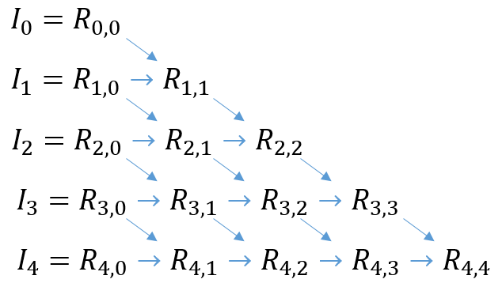
Note that the tolerance term is not the correct one as it uses the error estimate for the current step, which we also use correct the integral in the current step to reach a higher accuracy. Thus the error on the integral will always be lower than the user specified tolerance. Below is a Python implementation:
def int_romberg(func,a, b,tol,show=False):
""" calculates the area of func on the domain [a,b]
for the given tol, if show=True the triangular
array of intermediate results are printed """
Nmax = 100
R = np.empty([Nmax,Nmax]) # storage buffer
h = (b-a) # step size
R[0,0] =.5*(func(a)+func(b))*h
N = 1
for i in range(1,Nmax):
h /= 2
N *= 2
odd_terms=0
for k in range (1,N,2): # 1, 3, 5, ... , N-1
val = a + k*h
odd_terms += func(val)
# add the odd terms to the previous estimate
R[i,0] = 0.5*R[i-1,0] + h*odd_terms
for m in range(i):
# add all higher order terms in h
R[i,m+1] = R[i,m] + (R[i,m]-R[i-1,m])/(4**(m+1)-1)
# check tolerance, best guess
calc_tol = abs(R[i,i]-R[i-1,i-1])
if(calc_tol<tol):
break # estimated precision reached
if(i == Nmax-1):
print('Romberg routine did not converge after ',
Nmax, 'iterations!')
else:
print('Number of intervals = ', N)
if(show==True):
elem = [2**idx for idx in range(i+1)]
print("Steps StepSize Results")
for idx in range(i+1):
print(elem[idx],' ',
"{:.6f}".format((b-a)/2**idx),end = ' ')
for l in range(idx+1):
print("{:.6f}".format(R[idx,l]),end = ' ')
print('')
return R[i,i] #return the best estimate
Note that the Romberg integration only uses 32 function evaluations to reach a precision of \( 10^{-8} \), whereas the adaptive midpoint and trapezoidal rule in the previous section uses 20480 and 9069 function evaluations, respectively.
Before we proceed, we will consider an alternative implementation of the adaptive method presented in the previous sections, with the following modification
Simpsons rule is accurate up to \( \mathcal{O}(h^4) \), and by following the same arguments as above we can estimate the error as \( E_i(a,b)=\frac{1}{15}(I_{i+1}-I_{i}) \). The factor 1/15 (as opposed to 1/3) originates from the higher order accuracy. The integration proceeds as follows
S is an empty listS.append([a,b])while S not empty do:[a,b]=S.pop(-1)simpson_step(a,b)simpson_step(a,m)+simpson_step(m,b)S.append([a,m])S.append([m,b])Note the use of the list S, we remove the interval \( [a,b] \) from the list and calculates the integral. If the integral is not accurate enough we add to new intervals to the list, and continue until we reach the desired accuracy, then we proceed with the next interval. Since we remove (pop) the element from the list, we know that we will finish the evaluation once the list is empty. This algorithm allows for different sub interval to have different degrees of subdivisions, contrary to Rombergs algorithm. The full python implementation is shown below
def simpson_step(a, b,func):
m=0.5*(a+b)
return (b-a)/6*(func(a)+func(b)+4*func(m))
def int_adaptive_simpson(func,a, b,tol):
"""
adaptive quadrature, integrate a function from a
to b within tol*(b-a) uses simpsons rule
"""
S=[]
S.append([a,b])
I=0
iterations=0
while S:
iterations +=1
a,b=S.pop(-1) # last element
m=(b+a)*0.5 # midpoint
I1=simpson_step(a,b,func) #simpsons for 1 interval
I2=simpson_step(a,m,func)+simpson_step(m,b,func) # ...2 intervals
if(np.abs(I1-I2)<15*np.abs((b-a)*tol)):
I+=I2 # accuarcy met
else:
S.append([a,m]) # half the interval
S.append([m,b])
print("Number of iterations: ", iterations)
return I
Many of the methods we have looked into are of the type:
$$ \begin{align} \int_a^b f(x) dx = \sum_{k=0}^{N-1} \omega_k f(x_k),\label{eq:numint:qq1} \end{align} $$where the function is evaluated at fixed interval. For the midpoint rule \( \omega_k=h \) for all values of \( k \), for the trapezoid rule \( \omega_k=h/2 \) for the endpoints and \( h \) for all the interior points. For the Simpsons rule (see exercise) \( \omega_k=h/3, 4h/3,2h/3,4h/3,\ldots,4h/3,h/3 \). Note that all the methods we have looked at so far samples the function in equal spaced points, \( f(a+k h) \), for \( k=0, 1, 2\ldots, N-1 \). If we now allow for the function to be evaluated at unevenly spaced points, we can do a lot better. This realization is the basis for Gaussian Quadrature. We will explore this in the following, but to make the development easier and less cumbersome, we transform the integral from the domain \( [a,b] \) to \( [-1,1] \):
$$ \begin{align} \int_a^bf(t)dt&=\frac{b-a}{2}\int_{-1}^{1}f(x)dx\text{ , where:} \label{_auto73}\\ x&=\frac{2}{b-a}t-\frac{b+a}{b-a}. \label{_auto74} \end{align} $$The factor in front comes from the fact that \( dt=(b-a)dx/2 \), thus we can develop our algorithms on the domain \( [-1,1] \), and then do the transformation back using: \( t=(b-a)x/2+(b+a)/2 \).
The idea we will explore is as follows: If we can approximate the function to be integrated on the domain \( [-1,1] \) (or on \( [a,b] \)) as a polynomial of as large a degree as possible, then the numerical integral of this polynomial will be very close to the integral of the function we are seeking.
This idea is best understood by a couple of examples. Assume that we want to use \( N=1 \) in equation \eqref{eq:numint:qq1}:
$$ \begin{equation} \int_{-1}^{1}f(x)\,dx\simeq\omega_0f(x_0). \label{_auto75} \end{equation} $$We now choose \( f(x) \) to be a polynomial of as large a degree as possible, but with the requirement that the integral is exact. If \( f(x)=1 \), we get:
$$ \begin{equation} \int_{-1}^{1}f(x)\,dx=\int_{-1}^{1}1\,dx=2=\omega_0, \label{_auto76} \end{equation} $$hence \( \omega_0=2 \). If we choose \( f(x)=x \), we get:
$$ \begin{equation} \int_{-1}^{1}f(x)\,dx=\int_{-1}^{1}x\,dx=0=\omega_0f(x_0)=2x_0, \label{_auto77} \end{equation} $$hence \( x_0=0 \).
This equation is equal to the midpoint rule, by choosing \( b=a+h \) we reproduce equation \eqref{eq:numint:mid0}. If we choose \( N=2 \):
$$ \begin{equation} \int_{-1}^{1}f(x)\,dx\simeq\omega_0f(x_0)+\omega_1f(x_1), \label{_auto79} \end{equation} $$we can show that now $ f(x)=1,\,x,\,x^2\,x^3$ can be integrated exact:
$$ \begin{align} \int_{-1}^{1}1\,dx&=2=\omega_0f(x_0)+\omega_1f(x_1)=\omega_0+\omega_1\,, \label{_auto80}\\ \int_{-1}^{1}x\,dx&=0=\omega_0f(x_0)+\omega_1f(x_1)=\omega_0x_0+\omega_1x_1\,, \label{_auto81}\\ \int_{-1}^{1}x^2\,dx&=\frac{2}{3}=\omega_0f(x_0)+\omega_1f(x_1)=\omega_0x_0^2+\omega_1x_1^2\,, \label{_auto82}\\ \int_{-1}^{1}x^3\,dx&=0=\omega_0f(x_0)+\omega_1f(x_1)=\omega_0x_0^3+\omega_1x_1^3\,, \label{_auto83} \end{align} $$hence there are four unknowns and four equations. The solution is: \( \omega_0=\omega_1=1 \) and \( x_0=-x_1=1/\sqrt{3} \).
def int_gaussquad2(func, lower_limit, upper_limit):
x = np.array([-1/np.sqrt(3.),1/np.sqrt(3)])
w = np.array([1, 1])
xp = 0.5*(upper_limit-lower_limit)*x
xp += 0.5*(upper_limit+lower_limit)
area = np.sum(w*func(xp))
return area*0.5*(upper_limit-lower_limit)
For the case \( N=3 \), we find that \( f(x)=1,x,x^2,x^3,x^4,x^5 \) can be integrated exactly:
$$ \begin{align} \int_{-1}^{1}1\,dx&=2=\omega_0+\omega_1+\omega_2\,, \label{_auto86}\\ \int_{-1}^{1}x\,dx&=0=\omega_0x_0+\omega_1x_1+\omega_2x_2\,, \label{_auto87}\\ \int_{-1}^{1}x^2\,dx&=\frac{2}{3}=\omega_0x_0^2+\omega_1x_1^2+\omega_2x_2^2\,, \label{_auto88}\\ \int_{-1}^{1}x^3\,dx&=0=\omega_0x_0^3+\omega_1x_1^3+\omega_2x_2^3\,, \label{_auto89}\\ \int_{-1}^{1}x^4\,dx&=\frac{2}{5}=\omega_0x_0^4+\omega_1x_1^4+\omega_2x_2^4\,, \label{_auto90}\\ \int_{-1}^{1}x^5\,dx&=0=\omega_0x_0^5+\omega_1x_1^5+\omega_2x_2^5\,, \label{_auto91} \end{align} $$the solution to these equations are \( \omega_{0,1,2}=5/9, 8/9, 5/9 \) and \( x_{1,2,3}=-\sqrt{3/5},0,\sqrt{3/5} \). Below is a Python implementation:
def int_gaussquad3(lower_limit, upper_limit,func):
x = np.array([-np.sqrt(3./5.),0.,np.sqrt(3./5.)])
w = np.array([5./9., 8./9., 5./9.])
xp = 0.5*(upper_limit-lower_limit)*x
xp += 0.5*(upper_limit+lower_limit)
area = np.sum(w*func(xp))
return area*0.5*(upper_limit-lower_limit)
Note that the Gaussian quadrature converges very fast. From \( N=2 \) to \( N=3 \) function evaluation we reduce the error (in this specific case) from 6.5% to 0.1%. Our standard trapezoidal formula needs more than 20 function evaluations to achieve this, the Romberg method uses 4-5 function evaluations. How can this be? If we use the standard Taylor formula for the function to be integrated, we know that for \( N=2 \) the Taylor formula must be integrated up to \( x^3 \), so the error term is proportional to \( h^4f^{(4)}(\xi) \) (where \( \xi \) is some x-value in \( [a,b] \)). \( h \) is the step size, and we can replace it with \( h\sim (b-a)/N \), thus the error scale as \( c_N/N^4 \) (where \( c_N \) is a constant). Following the same argument, we find for \( N=3 \) that the error term is \( h^6f^{(6)}(\xi) \) or that the error term scale as \( c_N/N^6 \). Each time we increase \( N \) by a factor of one, the error term reduces by \( N^2 \). Thus if we evaluate the integral for \( N=10 \), increasing to \( N=11 \) will reduce the error by a factor of \( 11^2=121 \).
The Gaussian integration rule of order \( N \) integrates exactly a polynomial of order \( 2N-1 \). From Taylors error formula, see equation \eqref{eq:taylor:error} in the chapter Finite differences, we can easily see that the error term must be of order \( 2N \), and be proportional to \( f^{(2N)}(\eta) \), see [7] for more details on the derivation of error terms. The drawback with an analytical error term derived from series expansion is that it involves the derivative of the function. As we have already explained, this is very unpractical and it is much more practical to use the methods described in the section sec:numint:parct. Let us consider this in more detail, assume that we evaluate the integral using first a Gaussian integration rule with \( N \) points, and then \( N+1 \) points. Our estimates of the "exact" integral, \( I \), would then be:
$$ \begin{align} I&=I_N+ch_{N}^{2N},label{eq:numint:gerr1}\\ I&=I_{N+1}+ch_{N+1}^{2N+1}. \label{eq:numint:gerr2} \end{align} $$In principle \( h_{N+1}\neq h_{N} \), but in the following we will assume that \( h_N\simeq h_{N+1} \), and \( h\ll 1 \). Subtracting equation \eqref{eq:numint:gerr1} and \eqref{eq:numint:gerr2} we can show that a reasonable estimate for the error term \( ch^{2N} \) would be:
$$ \begin{equation} ch^N= I_{N+1}-I_N. \label{_auto92} \end{equation} $$If this estimate is lower than a given tolerance we can be quite confident that the higher order estimate \( I_{N+1} \) approximate the true integral within our error estimate. This is the method implemented in SciPy, integrate.quadrature
Integrating a function over an infinite range can be done by the following trick. Assume that we would like to evaluate
$$ \begin{equation} \int_a^\infty f(x) dx. \label{eq:numint:inf} \end{equation} $$If we introduce the following substitution
$$ \begin{equation} z=\frac{x-a}{1+x-a}, \label{eq:numint:infs} \end{equation} or equivalently \begin{equation} x=a+\frac{z}{1-z}, \label{eq:numint:infs2} \end{equation} $$then if \( x=a \), \( z=0 \), and if \( x\to\infty \) then \( z\to1 \), hence:
$$ \begin{equation} \int_a^\infty f(x) dx = \int_0^1 f(a+\frac{z}{1-z}) \frac{dz}{(1-z)^2}. \label{eq:numint:infs3} \end{equation} $$a) Show that for a linear function, \( y=a\cdot x+b \) both the trapezoidal rule and the rectangular rule are exact
b) Consider \( I(a,b)=\int_a^bf(x)dx \) for \( f(x)=x^2 \). The analytical result is \( I(a,b)=\frac{b^3-a^3}{3} \). Use the Trapezoidal and Midpoint rule to evaluate these integrals and show that the error for the Trapezoidal rule is exactly twice as big as the Midpoint rule.
c) Use the fact that the error term on the trapezoidal rule is twice as big as the midpoint rule to derive Simpsons formula: \( I(a,b)=\sum_{k=0}^{N-1}I(x_k,x_k+h)=\frac{h}{6}\left[f(a)+ 4f(a+\frac{h}{2})+2f(a+h)+4f(a+3\frac{h}{2})+2f(a+2h)+\cdots+f(b)\right] \) Hint: \( I(x_k,x_k+h)=M(x_k,x_k+h)+E_M \) (midpoint rule) and \( I(x_k,x_k+h)=T(x_k,x_k+h)+E_T=T(x_k,x_k+h)-2E_M \) (trapezoidal rule).
Solution.
Simpsons rule is an improvement over the midpoint and trapezoidal rule. It can be derived in different ways, we will make use of the results in the previous section. If we assume that the second derivative is reasonably well behaved on the interval \( x_k \) and \( x_k+h \) and fairly constant we can assume that \( f^{\prime\prime}(\eta)\simeq f^{\prime\prime}(\overline{\eta}) \), hence \( E_T=-2E_M \).
$$ \begin{align} I(x_k,x_k+h)&=M(x_k,x_k+h)+E_M\text{ (midpoint rule)} \label{_auto93}\\ I(x_k,x_k+h)&=T(x_k,x_k+h)+E_T\nonumber\\ &=T(x_k,x_k+h)-2E_M\text{ (trapezoidal rule)}, \label{_auto94} \end{align} $$we can now cancel out the error term by multiplying the first equation with 2 and adding the equations:
$$ \begin{align} 3I(x_k,x_k+h)&=2M(x_k,x_k+h)+T(x_k,x_k+h) \label{_auto95}\\ &=2f(x_k+\frac{h}{2}) h+\left[f(x_k+h)+f(x_k)\right] \frac{h}{2} \label{_auto96}\\ I(x_k,x_k+h)&=\frac{h}{6}\left[f(x_k)+4f(x_k+\frac{h}{2})+f(x_k+h)\right]. \label{_auto97} \end{align} $$Now we can do as we did in the case of the trapezoidal rule, sum over all the elements:
$$ \begin{align} I(a,b)&=\sum_{k=0}^{N-1}I(x_k,x_k+h)\nonumber\\ &=\frac{h}{6}\left[f(a)+ 4f(a+\frac{h}{2})+2f(a+h)+4f(a+3\frac{h}{2})\right.\nonumber\\ &\left.\qquad+2f(a+2h)+\cdots+f(b)\right] \label{_auto98}\\ &=\frac{h^\prime}{3}\left[f(a)+ f(b) + 4\sum_{k= \text{odd}}^{N-2}f(a+k h^\prime)+2\sum_{k= \text{even}}^{N-2}f(a+k h^\prime)\right], \label{_auto99} \end{align} $$note that in the last equation we have changed the step size \( h=2h^\prime \).
d) Show that for \( N=2 \) (\( f(x)=1,x,x^3 \)), the points and Gaussian quadrature rule for \( \int_{0}^{1}x^{1/2}f(x)\,dx \) is \( \omega_{0,1}=-\sqrt{70}{150} + 1/3, \sqrt{70}{150} + 1/3 \) and \( x_{0,1}=-2\sqrt{70}{63} + 5/9, 2\sqrt{70}{63} + 5/9 \)
e) Make a Python program that uses the Midpoint rule to integrate experimental data that are unevenly spaced and given in the form of two arrays.
By 0D models we mean models that are only dependent on one variable, usually time. These models are often called "lumped parameter models", because they ignore spatial dependency and the parameters in the model are adjusted to match experimental data. In many cases it is more important to predict how a system evolves in time, than the spatial dependency. A very recent example is the spread of infectious deceases, like Covid-19, where the evolution of total number of infected people might be the most important and not where the infection happens.
Physical systems evolves in space and time, and very often they are described by a ordinary differential equations (ODE) and/or partial differential equations (PDE). The difference between an ODE and a PDE is that an ODE only describes the changes in one spatial dimension or time, whereas a PDE describes a system that evolves in the \( x- \), \( y- \), \( z- \) dimension and/or in time. In the following we will spend a significant amount of time to explore one of the simplest algorithm, Eulers method. Sometimes this is exactly the algorithm you would like to use, but with very little extra effort much more sophisticated algorithms can easily be implemented, such as the Runge-Kutta fourth order method. However, all these algorithms, will at some point run into the same kind of troubles if used reckless. Thus we will use the Eulers method as a playground, investigate when the algorithm run into trouble and suggests ways to fix it, these approaches can easily be extended to the higher order methods. Most of the other algorithms boils down to the same idea of extrapolating a function using derivatives multiplied with a small step size.
Let us consider a simple example from chemical engineering, a continuous stirred tank reactor (CSTR), see figure 35. The flow is incompressible (\( q_\text{out}=q_\text{in} \)), a fluid is entering on the top and exiting at the bottom, the tank has a fixed volume \( V \). Assume that the tank is filled with saltwater, and that freshwater is pumped into it, how much time does it take before \( 90\% \) of the saltwater is replaced with freshwater? The tank is well mixed, illustrated with the propeller, this means that at every time the concentration is uniform in the tank, i.e. that \( C(t)=C_\text{out}(t) \).
Figure 35: A continuous stirred tank model, \( C(t)=C_\text{out}(t) \), and \( q_\text{out}=q_\text{in} \).
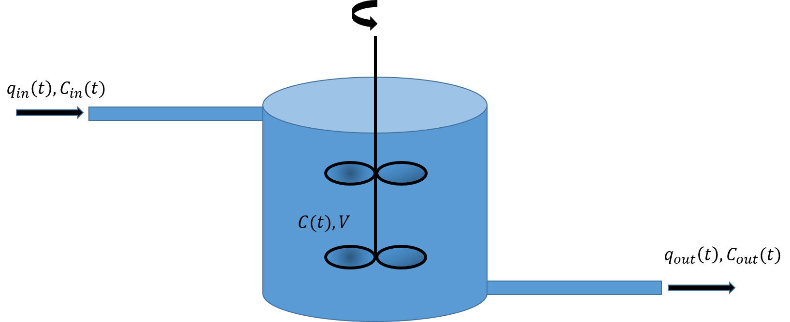
The concentration \( C \) is measured in gram of salt per liter water, and the flow rate \( q \) is liter of water per day. The model for the salt balance in this system can be described in words by:
$$ \begin{align} [\text{accumulation of salt}] &= [\text{salt into the system}] - [\text{salt out of the system}]\nonumber\\ & + [\text{generation of salt}].\label{eq:ode:mbal} \end{align} $$In our case there are no generation of salt within the system so this term is zero. The flow of salt into the system during a time \( \Delta t \) is: \( q_\text{in}(t)\cdot C_\text{in}(t)\cdot \Delta t=q(t)\cdot C_\text{in}(t)\cdot \Delta t \), the flow of salt out of the system is: \( q_\text{out}(t)\cdot C_\text{out}(t)\cdot \Delta t=q(t)\cdot C(t)\cdot \Delta t \), and the accumulation during a time step is: \( C(t+\Delta t)\cdot V - C(t)\cdot V \), hence:
$$ \begin{equation} C(t+\Delta t)\cdot V - C(t)\cdot V = q(t)\cdot C_\text{in}(t)\cdot \Delta t - q(t)\cdot C(t)\cdot \Delta t.\label{eq:ode:cstr1} \end{equation} $$Note that it is not a priori apparent, which time the concentrations and flow rates on the right hand side should be evaluated at, we could have chosen to evaluate them at \( t+\Delta t \), or at any time \( t\in [t,t+\Delta t] \). We will return to this point later in this chapter. Dividing by \( \Delta t \), and taking the limit \( \Delta t\to 0 \), we can write equation \eqref{eq:ode:cstr1} as:
$$ \begin{equation} V\frac{dC(t)}{dt} = q(t)\left[C_\text{in}(t) - C(t)\right].\label{eq:ode:cstr2} \end{equation} $$Seawater contains about 35 gram salt/liter fluid, if we assume that the fresh water contains no salt, we have the boundary conditions \( C_\text{in}(t)=0 \), $C(0)=$35gram/l. The equation \eqref{eq:ode:cstr2} the reduces to:
$$ \begin{equation} V\frac{dC(t)}{dt} = -qC(t),\label{eq:ode:cstr3} \end{equation} $$this equation can easily be solved, by dividing by \( C \), multiplying by \( dt \) and integrating:
$$ \begin{align} V\int_{C_0}^C\frac{dC}{C} &= -q\int_0^tdt,\nonumber\\ C(t)&=C_0e^{-t/\tau},\text{ where } \tau\equiv \frac{V}{q}.\label{eq:ode:sol} \end{align} $$This equation can be inverted to give \( t=-\tau\ln[C(t)/C] \). If we assume that the volume of the tank is 1m$^3$=1000liters, and that the flow rate is 1 liter/min, we find that $\tau$=1000min=0.69days and that it takes about $-0.69\ln0.9\simeq1.6$days to reduce the concentration by 90$\%$ to 3.5 gram/liter.
You might think that the CSTR is a very simple model, and it is, but this type of model is the basic building blocks in chemical engineering. By putting CSTR tanks in series and/or connecting them with pipes, the efficiency of manufacturing various type of chemicals can be investigated. Although the CSTR is an idealized model for the part of a chemical factory, it is actually a very good model for fluid flow in a porous media. By connecting CSTR tanks in series, one can model how chemical tracers propagate in the subsurface. The physical reason for this is that dispersion in porous media will play the role of the propellers and mix the concentration uniformly.
If the system gets slightly more complicated, e.g several tanks in series with a varying flow rate or if salt was generated in the tank, there is a good chance that we have to solve the equations numerically to obtain a solution. Actually, we have already developed a numerical algorithm to solve equation \eqref{eq:ode:cstr2}, before we arrived at equation \eqref{eq:ode:cstr2} in equation \eqref{eq:ode:cstr1}. This is a special case of Eulers method, which is basically to replace the derivative in equation \eqref{eq:ode:cstr2}, with \( (C(t+\Delta t)-C(t))/\Delta t \). By rewriting equation \eqref{eq:ode:cstr1}, so that we keep everything related to the new time step, \( t+\Delta t \), on one side, we get:
$$ \begin{align} VC(t+\Delta t) &= VC(t) + qC_\text{in}(t) - qC(t),\label{eq:ode:eu0}\\ C(t+\Delta t) &= C(t) + \frac{\Delta t}{\tau}\left[C_\text{in}(t) - C(t)\right]\label{eq:ode:eu1}, \end{align} $$we introduce the short hand notation: \( C(t)=C_n \), and \( C(t+\Delta t)=C_{n+1} \), hence the algorithm can be written more compact as:
$$ \begin{equation} C_{n+1} = \left(1-\frac{\Delta t}{\tau}\right)C_n + \frac{\Delta t}{\tau}C_{\text{in},n}\label{eq:ode:eu2}, \end{equation} $$In the script below, we have implemented equation \eqref{eq:ode:eu2}.
def analytical(x):
return np.exp(-x)
def euler_step(c_old, c_in, tau_inv,dt):
fact=dt*tau_inv
return (1-fact)*c_old+fact*c_in
def ode_solv(c_into,c_init,t_final,vol,q,dt):
f=[];t=[]
tau_inv = q/vol
c_in = c_into #freshwater into tank
c_old = c_init #seawater present
ti=0.
while(ti <= t_final):
t.append(ti); f.append(c_old)
c_new = euler_step(c_old,c_in,tau_inv,dt)
c_old = c_new
ti += dt
return t,f
Figure 36: The concentration in the tank for different step size \( \Delta t \).
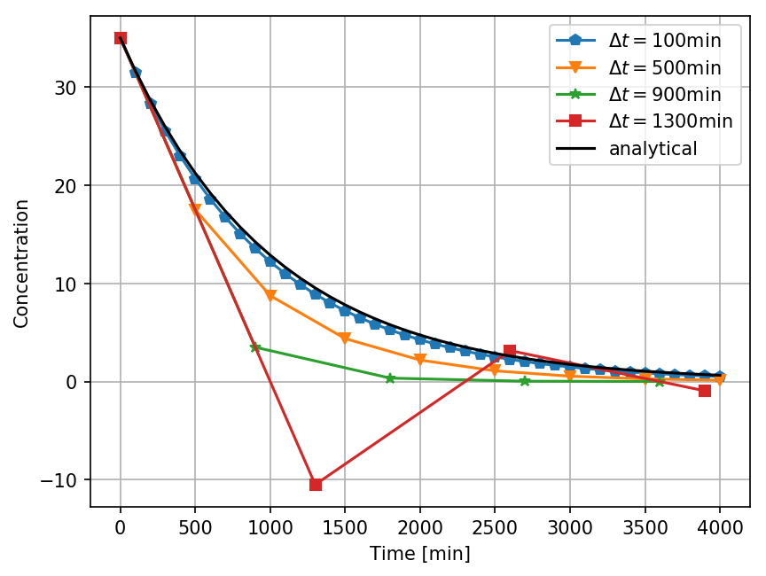
In figure 36 the result of the implementation is shown for different values of \( \Delta t \). Clearly we see that the results are dependent on the step size, as the step increases the numerical solution deviates from the analytical solution. At some point the numerical algorithm fails completely, and produces results that have no meaning.
There are two obvious questions:
Let us consider the first question, clearly when the concentrations gets negative the solution is unphysical. From equation \eqref{eq:ode:eu2}, we see that when \( \Delta t/\tau > 1 \), the concentration become negative. For this specific case (the CSTR), there is a clear physical interpretation of this condition. Inserting \( \tau=V/q \), we can rewrite the condition \( \Delta t/\tau < 1 \) as \( q\Delta t < V \). The volume into the tank during one time step is: \( q\Delta t \), which means that whenever we flush more than one tank volume through the tank during one time step, the algorithm fails. When this happens the new concentration in the tank cannot be predicted from the old one. This makes sense, because we could have switched to a new solution (e.g. seawater) during that time step, then the new solution does not have any relation to the old solution.
The second question, "what is an appropriate step size?", is a bit more difficult to answer. One strategy could be to simply use the results from chapter [Taylor], where we showed that the truncation error had a minimum value with a step size of \( 10^{-8} \) (when using a first order Taylor approximation). How does the value \( 10^{-8} \) relate to the step sizes in minutes used in our Euler implementation? In order to see the connection, we need to rewrite equation \eqref{eq:ode:cstr2} in a dimensionless form, by making the following substitution: \( t\to t/\tau \):
$$ \begin{equation} \frac{dC(\tau)}{d\tau} = \left[C_\text{in}(\tau) - C(\tau)\right].\label{eq:ode:cstr2dim} \end{equation} $$As we found earlier $\tau = 1000$min, thus a step size of e.g. 1 min would correspond to a dimensionless time step of $\Delta t\to$1min/1000min$=10^{-3}$. This number can be directly compared to the value \( 10^{-8} \), which is the lowest value we can choose without getting into trouble with round off errors on the machine.
It is a good idea to formulate our equations in terms of dimensionless variables. The algorithms we develop can then be used in the same form regardless of changes in the system size and flow rates. Thus we do not need to rewrite the algorithm each time the physical system changes. This also means that if you use an algorithm developed by someone else (e.g. in Matlab or Python), you should always formulate the ODE system in dimensionless form before using the algorithm.
A second reason is that from a pure modeling point of view, dimensionless variables is a way of getting some understanding of what kind of combination of the physical parameters that describes the behavior of the system. For the case of the CSTR, there is a time scale \( \tau=V/q \), which is an intrinsic measure of time in the system. No matter what the flow rate through the tank or the volume of the tank is, it will always take 0.1$\tau$ before the concentration in the tank is reduced by 90%.
As already mentioned a step size of \( 10^{-8} \), is probably the smallest we can choose with respect to round off errors, but it is smaller than necessary and would lead to large simulation times. If it takes 1 second to run the simulation with a step size of \( 10^{-3} \), it would take \( 10^5 \) seconds or 1 day with a step size of \( 10^{-8} \). To continue the error analyses, we write our ODE for a general system as:
$$ \begin{align} \frac{dy}{dt}=f(y,t),label{eq:ode:ode} \end{align} $$or in discrete form:
$$ \begin{align} \frac{y_{n+1}-y_n}{h}-\frac{h}{2}y^{\prime\prime}(\eta_n)&=f(y,t).\nonumber\\ y_{n+1}&=y_n+hf(y,t)+\frac{h^2}{2}y^{\prime\prime}(\eta_n). \label{_auto100} \end{align} $$\( h \) is now the (dimensionless) step size, equal to \( \Delta t \) if the derivative is with respect to \( t \) or \( \Delta x \) if the derivative is respect to \( x \) etc. Note that we have also included the error term related to the numerical derivative, \( \eta_n\in[t_n,t_n+h] \). At each step we get an error term, and the distance between the true solution and our estimate, the local error, after \( N \) steps is:
$$ \begin{align} \epsilon=\sum_{n=0}^{N-1}\frac{h^2}{2}y^{\prime\prime}(\eta_n)&=\frac{h^2}{2}\sum_{n=0}^{N-1}f^\prime(y_n,\eta_n)\simeq\frac{h}{2}\int_{t_0}^{t_f}f^\prime(y,\eta)d\eta\nonumber\\ &=\frac{h}{2}\left[f(y(t_f),t_f)-f(y(t_0),t_0)\right].\label{eq:ode:eu3} \end{align} $$Note that when we replace the sum with an integral in the equation above, this is only correct if the step size is not too large. From equation \eqref{eq:ode:eu3} we see that even if the error term on the numerical derivative is \( h^2 \), the local error is proportional to \( h \) (one order lower). This is because we accumulate errors for each step.
In the following we specialize to the CSTR, to see if we can gain some additional insight. First we change variables in equation \eqref{eq:ode:cstr3}: \( y=C(t)/C_0 \), and \( x=t/\tau \), hence:
$$ \begin{equation} \frac{dy}{dx}=-y.\label{eq:ode:simple} \end{equation} $$The solution to this equation is \( y(x)=e^{-x} \), substituting back for the new variables \( y \) and \( x \), we reproduce the result in equation \eqref{eq:ode:sol}. The local error, equation \eqref{eq:ode:eu3}, reduces to:
$$ \begin{align} \epsilon=\frac{h}{2}\left[-y(x_f)+y(x_0)\right]=\frac{h}{2}\left[1-e^{-x_f}\right],\label{eq:ode:eu4} \end{align} $$we have assumed that \( x_0=t_0/\tau=0 \). This gives the estimated local error at time \( x_f \). For \( x_f=0 \), the numerical error is zero, this makes sense because at \( x=0 \) we know the exact solution because of the initial conditions. When we move further away from the initial conditions, the numerical error increases, but equation \eqref{eq:ode:eu4} ensures us that as long as the step size is low enough we can get as close as possible to the true solution, since the error scales as \( h \) (at some point we might run into trouble with round off error in the computer).
Can we prove directly that we get the analytical result? In this case it is fairly simple, if we use Eulers method on equation \eqref{eq:ode:simple}, we get:
$$ \begin{align} \frac{y_{n+1}-y_n}{h}&=-y_nf.\nonumber\\ y_{n+1}&=(1-h)y_n, \label{_auto101} \end{align} $$or alternatively:
$$ \begin{align} y_1&=(1-h)y_0,\nonumber\\ y_2&=(1-h)y_1=(1-h)^2y_0,\nonumber\\ \vdots\nonumber\\ y_{N+1}&=(1-h)^{N}y_0=(1-h)^{x_f/h}y_0. \label{_auto102} \end{align} $$In the last equation, we have used the the fact the number of steps, \( N \), is equal to the simulation time divided by the step size, hence: \( N=x_f/h \). From calculus, the equation above is one of the well known limits for the exponential function: \( \lim_{x\to\infty}(1+k/x)^{mx}=e^{mk} \), hence:
$$ \begin{align} y_n&=(1-h)^{x_f/h}y_0\to e^{-x_f}, \label{_auto103} \end{align} $$when \( h\to0 \). Below is an implementation of the Euler algorithm in this simple case, we also estimate the local error, and global error after \( N \) steps.
import matplotlib.pyplot as plt
import numpy as np
def euler(tf,h):
t=[];f=[]
ti=0.;fi=1.
t.append(ti);f.append(fi)
global_err=0.
while(ti<= tf):
ti+=h
fi=fi*(1-h)
global_err += abs(np.exp(-ti)-fi)
t.append(ti);f.append(fi)
print("error= ", np.exp(-ti)-fi," est.err=", .5*h*(1-np.exp(-ti)))
print("global error=",global_err)
return t,f
t,f=euler(1,1e-5)
By changing the step size \( h \), you can easily verify that the local error systematically increases or decreases proportional to \( h \). Something curious happens with the global error when the step size is changed, it does not change very much. The global error involves a second sum over the local error for each step, which can be approximated as a second integration in equation \eqref{eq:ode:eu4}:
$$ \begin{align} \epsilon_\text{global}=\frac{1}{2}\int_{0}^{x_f}\left[-y(x)+y(0)\right]dx=\frac{1}{2}\left[x_f+e^{-x_f}-1\right].\label{eq:ode:eu5} \end{align} $$Note that the global error does not go to zero when the step size decreases, which can easily be verified by changing the step size. This is strange, but can be understood by the following argument: when the step size decreases the local error scales as \( \sim h \), but the number of steps scales as \( 1/h \), so the global error must scale as \( h\times 1/h \) or some constant value. Usually it is much easier to control the local error than the global error, this should be kept in mind if you ever encounter a problem where it is important control the global error. For the higher order methods that we will discuss later in this chapter, the global error will go to zero when \( h \) decreases.
The answer to our original question, ''What is an appropriate step size?'', will depend on what you want to achieve in terms of local or global error. In most practical situations you would specify a local error that is acceptable for the problem under investigation and then choose a step size where the local error always is lower than this value. In the next subsection we will investigate how to achieve this in practice.
We want to be sure that we use a step size that achieves a certain accuracy in our numerical solution, but at the same time that we do not waste simulation time using a too low step size. The following approach is similar to the one we derived for the Romberg integration, and a special case of what is known as Richardson Extrapolation. The method is easily extended to higher order methods.
We know that Eulers algorithm is accurate to second order. Our estimate of the new value, \( y_1^* \) (where we have used a$\,{}^*$ to indicate that we have used a step size of size \( h \)), should then be related to the true solution \( y(t_1) \) in the following way:
$$ \begin{align} y^*_1=y(t_1)+ch^2.\label{eq:ode:aeb0} \end{align} $$The constant \( c \) is unknown, but it can be found by taking two smaller steps of size \( h/2 \). If the steps are not too large, our new estimate of the value \( y_1 \) will be related to the true solution as:
$$ \begin{align} y_1=y(t_1)+2c\left(\frac{h}{2}\right)^2.\label{eq:ode:aeb1} \end{align} $$The factor 2 in front of \( c \) is because we now need to take two steps, and we accumulate a total error of \( 2c(h/2)^2=ch^2/2 \). It might not be completely obvious that the constant \( c \) should be the same in equation \eqref{eq:ode:aeb0} and \eqref{eq:ode:aeb1}. If you are not convinced, there is an exercise at the end of the chapter. We define:
$$ \begin{align} \Delta\equiv y^*_1-y_1=c\frac{h^2}{2}.\label{eq:ode:ae5} \end{align} $$The truncation error in equation \eqref{eq:ode:aeb1} is:
$$ \begin{align} \epsilon=y(t_1)-y_1=2c\left(\frac{h}{2}\right)^2=\Delta.\label{eq:ode:ae5b} \end{align} $$Now we have everything we need: We want the local error to be smaller than some predefined tolerance, \( \epsilon^\prime \), or equivalently that \( \epsilon\le\epsilon^\prime \). To achieve this we need to use an optimal step size, \( h^\prime \), that gives us exactly the desired error:
$$ \begin{align} \epsilon^\prime=c\frac{{h^\prime}^2}{2}.\label{eq:ode:ae6} \end{align} $$Dividing equation \eqref{eq:ode:ae6} by equation \eqref{eq:ode:ae5b}, we can estimate the optimal step size:
$$ \begin{align} h^\prime=h\sqrt{\left|\frac{\epsilon^\prime}{\epsilon}\right|},\label{eq:ode:ae7} \end{align} $$where the estimated error, \( \epsilon \), is calculated from equation \eqref{eq:ode:ae5b}. Equation \eqref{eq:ode:ae7} serves two purposes, if the estimated error \( \epsilon \) is higher than the tolerance, \( \epsilon^\prime \), we have specified it will give us an estimate for the step size we should choose in order to achieve a higher accuracy, if on the other hand \( \epsilon^\prime > \epsilon \), then we get an estimate for the next, larger step. Before the implementation we note, as we did for the Romberg integration, that equation \eqref{eq:ode:ae5b} also gives us an estimate for the error term in equation \eqref{eq:ode:aeb1} as an improved estimate of \( y_1 \). This we get for free and will make our Euler algorithm accurate to \( h^3 \), hence the improved Euler step, \( \hat{y_1} \), is to subtract the error term from our previous estimate:
$$ \begin{align} \hat{y_1}=y_1-\epsilon=2y_1-y_1^*. \label{_auto104} \end{align} $$Below is an implementation of the adaptive Euler algorithm:
def one_step(c_old, c_in,h):
return (1-h)*c_old+h*c_in
def adaptive_euler(c_into,c_init,t_final,tol=1e-4):
f=[];t=[]
c_in = c_into #freshwater into tank
c_old = c_init #seawater present
ti=0.; h_new=1e-3;
no_steps=0
global_err=0.
while(ti <= t_final):
t.append(ti); f.append(c_old)
toli=10.*tol; # a high init tolerance to enter while loop
while(toli>tol):# first two small steps
hi=h_new
k1 = one_step(c_old,c_in,hi*.5)
k2 = one_step(k1,c_in,hi*.5)
# ... and one large step
k3 = one_step(c_old,c_in,hi)
toli = abs(k3-k2)
h_new=hi*np.sqrt(tol/toli)
no_steps+=3
toli=1.
c_old=2*k2-k3 # higher order correction
# normal Euler, uncomment and inspect the global error
# c_old = k2
ti += hi
global_err += abs(np.exp(-ti)-c_old)
print("No steps=", no_steps, "Global Error=", global_err)
return t,f
Figure 37: The concentration in the tank using adaptive Euler. Number of Euler steps are: 3006, 117, 48 and 36 for the different step sizes.
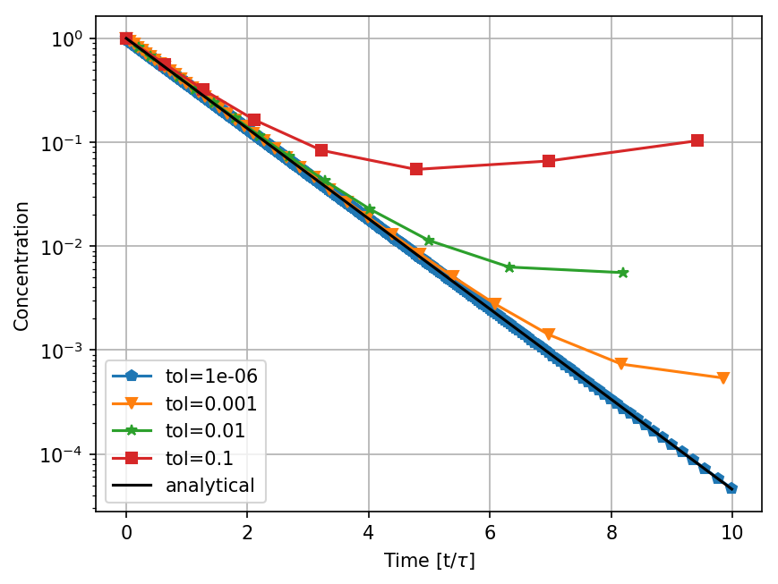
In figure 37 the result of the implementation is shown. Note that the number of steps for an accuracy of \( 10^{-6} \) is only about 3000. Without knowing anything about the accuracy, we would have to assume that we needed a step size of the order of \( h \) in order to reach a local accuracy of \( h \) because of equation \eqref{eq:ode:eu3}. In the current case, we would have needed \( 10^7 \) steps, which would lead to unnecessary long simulation times.
In the previous example we set an absolute tolerance, and required that our estimate \( y_n \) always is within a certain bound of the true solution \( y(t_n) \), i.e. \( |y(t_n)-y_n|\le\epsilon^\prime \). This is a very strong demand, and sometimes it makes more sense to require that we also accept a relative tolerance proportional to function value. In some areas the solution might have a very large value, and then another possibility would be to have an \( \epsilon^\prime \) that varied with the function value: \( \epsilon^\prime = atol +|y|rtol \), where 'atol' is the absolute tolerance and 'rtol' is the relative tolerance. A sensible choice would be to set 'atol=rtol' (e.g. = \( 10^{-4} \)).
Figure 38: Illustration of the Euler algorithm, and a motivation for using the slope a distance from the \( t_n \).
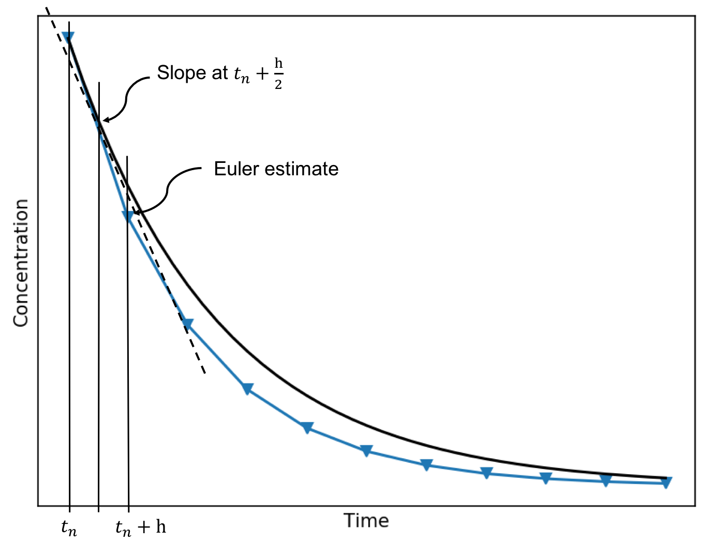
The Euler method only have an accuracy of order \( h \), and a global error that do not go to zero as the step size decrease. The Runge-Kutta methods may be motivated by inspecting the Euler method in figure 38. The Euler method uses information from the previous time step to estimate the value at the new time step. The Runge Kutta methods uses the information about the slope between the points \( t_n \) and \( t_n+h \). By inspecting figure 38, we clearly see that by using the slope at \( t_n+h/2 \) would give us a significant improvement. The 2. order Runge-Kutta method can be derived by Taylor expanding the solution around \( t_n+h/2 \), we do this by setting \( t_n+h=t_n+h/2+h/2 \):
$$ \begin{align} y(t_n+h)=y(t_n+\frac{h}{2})+\frac{h}{2}\left.\frac{dy}{dt}\right|_{t=t_n+h/2}+\frac{h^2}{4}\left.\frac{d^2y}{dt^2}\right|_{t=t_n+h/2} +\mathcal{O}(h^3).\label{eq:ode:rk1} \end{align} $$Similarly we can expand the solution in \( y(t_n) \) about \( t_n+h/2 \), by setting \( t_n=t_n+h/2-h/2 \):
$$ \begin{align} y(t_n)=y(t_n+\frac{h}{2})-\frac{h}{2}\left.\frac{dy}{dt}\right|_{t=t_n+h/2}+\frac{h^2}{4}\left.\frac{d^2y}{dt^2}\right|_{t=t_n+h/2} -\mathcal{O}(h^3).\label{eq:ode:rk2} \end{align} $$Subtracting these two equations the term \( y(t_n+\frac{h}{2}) \), and all even powers in the derivative cancels out:
$$ \begin{align} y(t_n+h)&=y(t_n)+h\left.\frac{dy}{dt}\right|_{t=t_n+h/2}+\mathcal{O}(h^3),\nonumber\\ y(t_n+h)&=y(t_n)+hf(y_{n+h/2},t_n+h/2)+\mathcal{O}(h^3).\label{eq:ode:rk3} \end{align} $$In the last equation, we have used equation \eqref{eq:ode:ode}. Note that we now have an expression that is very similar to Eulers algorithm, but it is accurate to order \( h^3 \). There is one problem, and that is that the function \( f \) is to be evaluated at the point \( y_{n+1/2}=y(t_n+h/2) \) which we do not know. This can be fixed by using Eulers algorithm: \( y_{n+1/2}=y_n+h/2f(y_n,t_n) \). We can do this even if Eulers algorithm has an error term of order \( h^2 \), because the \( f \) in equation \eqref{eq:ode:rk3} is multiplied by \( h \), and thus our algorithm is still has an error term of order \( h^3 \).
Below is a Python implementation of equation \eqref{eq:ode:rk4}:
def fm(c_old,c_in):
return c_in-c_old
def rk2_step(c_old, c_in, h):
k1=h*fm(c_old,c_in)
k2=h*fm(c_old+0.5*k1,c_in)
return c_old+k2
def ode_solv(c_into,c_init,t_final,h):
f=[];t=[]
c_in = c_into #freshwater into tank
c_old = c_init #seawater present
ti=0.
while(ti <= t_final):
t.append(ti); f.append(c_old)
c_new = rk2_step(c_old,c_in,h)
c_old = c_new
ti += h
return t,f
Figure 39: The concentration in the tank for different step size \( \Delta t \).
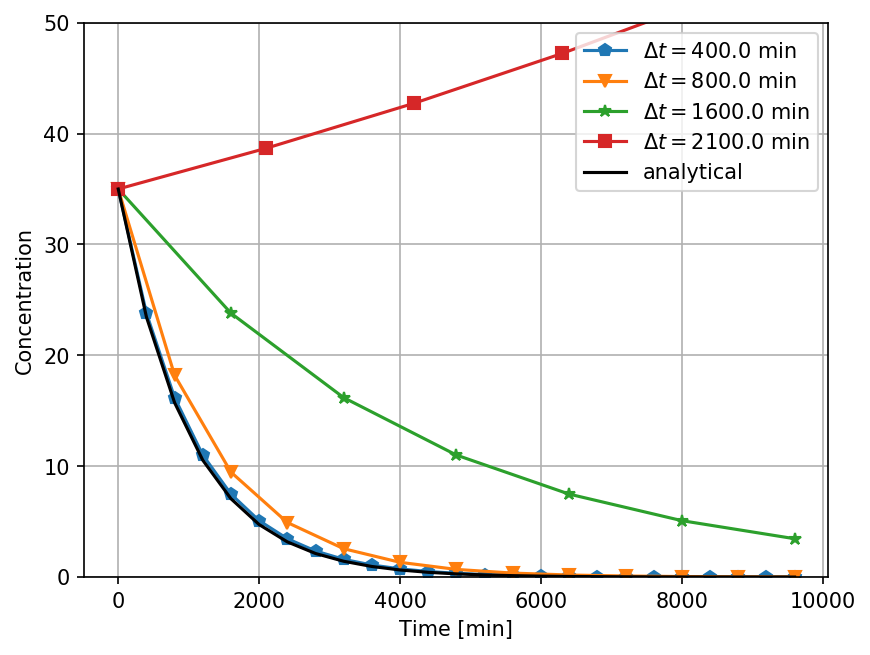
In figure 39 the result of the implementation is shown. Note that when comparing Runge-Kutta 2. order with Eulers method, see figure 39 and 36, we of course have the obvious result that a larger step size can be taken, without loosing numerical accuracy. It is also worth noting that we can take steps that is larger than the tank volume. Eulers method failed whenever the time step was larger than one tank volume (\( h=t/\tau>1 \)), whereas the Runge-Kutta method finds a physical solution for step sizes lower than twice the tank volume. If the step size is larger, we see that the concentration in the tank increases, which is clearly unphysical.
The Runge-Kutta fourth order method is one of he most used methods, it is accurate to order \( h^4 \), and has an error of order \( h^5 \). The development of the algorithm itself is similar to the 2. order method, but of course more involved. We just quote the result:
In figure 40 the result of the Runge-Kutta fourth order is shown, by comparing it to figure 39 it is easy to see that a larger step size can be chosen.
Figure 40: The concentration in the tank for different step size \( \Delta t \).
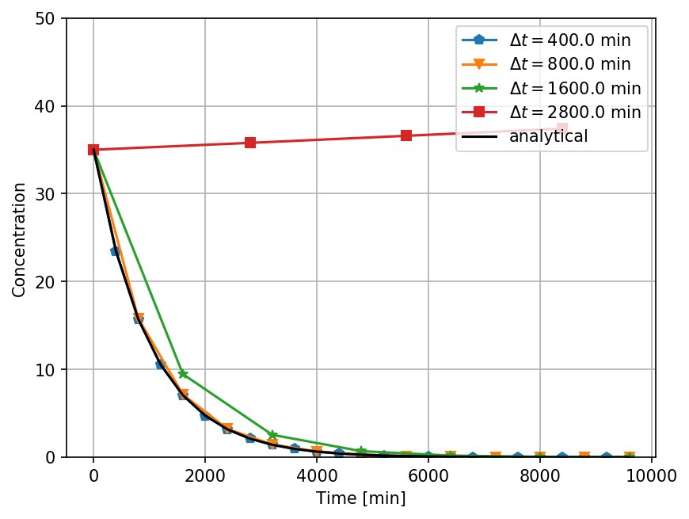
Just as we did with Eulers method, we can implement an adaptive method. The derivation is exactly the same, but this time our method is accurate to fourth order, hence the error term is of order \( h^5 \). We start by taking one large step of size \( h \), our estimate, \( y_1^* \) is related to the true solution, \( y(t_1) \), in the following way:
$$ \begin{align} y^*_1&=y(t_1)+ch^5,\label{eq:ode:rka0} \end{align} $$Next, we take two steps of half the size, \( h/2 \), hence:
$$ \begin{align} y_1&=y(t)+2c\left(\frac{h}{2}\right)^5.\label{eq:ode:rka1} \end{align} $$Subtracting equation \eqref{eq:ode:rka0} and \eqref{eq:ode:rka1}, we find an expression similar to equation \eqref{eq:ode:ae5}:
$$ \begin{align} \Delta\equiv& y_1^*-y_1=c\frac{15}{16}h^5,\label{eq:ode:rka2} \end{align} $$or \( c=16\Delta/(15h^5) \). For the Euler scheme, \( \Delta \) also happened to be equal to the truncation error, but in this case it is:
$$ \begin{align} \epsilon=2c\left(\frac{h}{2}\right)^5=\frac{\Delta}{15}\label{eq:ode:rka5} \end{align} $$we want the local error, \( \epsilon \), to be smaller than some tolerance, \( \epsilon^\prime \). The optimal step size, \( h^\prime \), that gives us exactly the desired error is then:
$$ \begin{align} \epsilon^\prime=2c\left(\frac{{h^\prime}}{2}\right)^5.\label{eq:ode:rka3} \end{align} $$Dividing equation \eqref{eq:ode:rka3} by equation \eqref{eq:ode:rka5}, we can estimate the optimal step size:
$$ \begin{align} h^\prime=h\left|\frac{\epsilon}{\epsilon}\right|^{1/5},\label{eq:ode:rka4} \end{align} $$\( \epsilon \) can be calculated from equation \eqref{eq:ode:rka5}. In figure 41 the result of an implementation is shown (see the exercises).
Figure 41: The concentration in the tank for different step size \( \Delta t \). Number of rk4 steps are: 138, 99, 72 and 66 for the different step sizes and 'rtol=0', for 'rtol=tol' the number of rk4 steps are 81, 72, 63, 63.
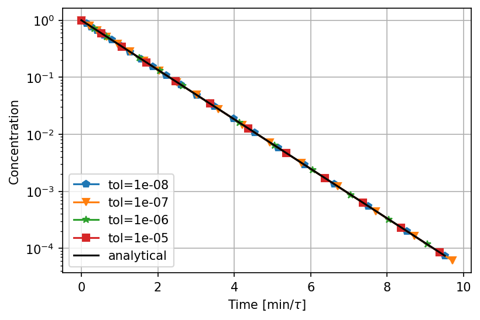
In general we can use the same procedure any method accurate to order \( h^p \), and you can easily verify that:
where \( \beta \) is a safety factor \( \beta\simeq0.8,0.9 \), and you should always be careful that the step size do not become too large so that the method breaks down. This can happens when \( \epsilon \) is very low, which may happen if \( y_1^*\simeq y_1 \) and/or if \( y_1^*\simeq y_1\simeq 0 \).
A mathematical model of a physical system should always be formulated in such a way that it is consistent with the laws of nature. In practical situations this statement is usually equivalent to state that the mathematical model should respect conservation laws. The conservation laws can be conservation of mass, energy, momentum, electrical charge, etc. In our example with the mixing tank, we were able to derive an expression for the concentration of salt out of the tank, equation \eqref{eq:ode:sol}, by demanding conservation of mass (see equation \eqref{eq:ode:cstr1}).
A natural question to ask is then: If our mathematical model respect conservation of mass, are we sure that our solution method respect conservation of mass? We of course expect that when the grid spacing approaches zero our numerical solution will get closer and closer to the analytical solution. Clearly when \( \Delta x\to 0 \), the mass is conserved. So what is the problem? The problem is that in many practical problems we cannot always have a step size that is small enough to ensure that our solution always is close enough to the analytical solution. The physical system we consider might be very complicated (e.g. a model for the earth climate), and our ODE system could be a very small part of a very big system. A very good test of any code is to investigate if the code respect the conservation laws. If we know that our implementation respect e.g. mass conservation at the discrete level, we can easily test mass conservation by summing up all the mass entering, and subtracting the mass out of and present in our system. If the mass is not conserved exactly, there is a good chance that there is a bug in our implementation.
If we now turn to our system, we know that the total amount of salt in the system when we start is \( C(0)V \).
The amount entering is zero, and the amount leaving each time step is \( q(t)C(t)\Delta t \). Thus we should
expect that if we add the amount of salt in the tank to the amount that has left the system
we should always get an amount that is equal to the original amount. Alternatively, we expect
\( \int_{t_0}^t qC(t)dt + C(t)V -C(0)V=0 \). Adding the following code in the while(ti <= t_final): loop:
mout += 0.5*(c_old+c_new)*q*dt
mbal = (c_new*vol+mout-vol*c_init)/(vol*c_init)
it is possible to calculate the amount of mass lost (note that we have used the trapezoidal formula to calculate the integral). In the table below the fraction of mass lost relative to the original amount is shown for the various numerical methods.
| $\Delta t$ | \( h \) | Euler | RK 2. order | RK 4. order |
| 900 | 0.9 | -0.4500 | 0.3682 | 0.0776 |
| 500 | 0.5 | -0.2500 | 0.0833 | 0.0215 |
| 100 | 0.1 | -0.0500 | 0.0026 | 0.0008 |
| 10 | 0.01 | -0.0050 | 2.5E-05 | 8.3E-06 |
We clearly see from the table that the Runge-Kutta methods performs better than Eulers method, but all of the methods violates mass balance.
This might not be a surprise as we know that our numerical solution is always an approximation to the analytical solution. How can we then formulate an algorithm that will respect conservation laws at the discrete level? It turns out that for Eulers method it is not so difficult. Eulers algorithm at the discrete level (see equation \eqref{eq:ode:eu0}) is actually a two-step process: first we inject the fresh water while we remove the ``old`` fluid and then we mix. By thinking about the problem this way, it makes more sense to calculate the mass out of the tank as \( \sum_kq_kC_k\Delta t_k \). If we in our implementation calculates the mass out of the tank as:
mout += c_old*q*dt
mbal = (c_new*vol+mout-vol*c_init)/(vol*c_init)
We easily find that the mass is exactly conserved at every time for Eulers method. The concentration in the tank will of course not be any closer to the analytical solution, but if our mixing tank was part of a much bigger system we could make sure that the mass would always be conserved if we make sure that the mass out of the tank and into the next part of the system was equal to \( qC(t)\Delta t \).
What happens if we have more than one equation that needs to be solved? If we continue with our current example, we might be interested in what would happen if we had multiple tanks in series. This could be a very simple model to describe the cleaning of a salty lake by injecting fresh water into it, but at the same time this lake was connected to two nearby fresh water lakes, as illustrated in figure 42. The weakest part of the model is the assumption about complete mixing, in a practical situation we could enforce complete mixing with the salty water in the first tank by injecting fresh water at multiple point in the lake. For the two next lakes, the degree of mixing is not obvious, but salt water is heavier than fresh water and therefore it would sink and mix with the fresh water. Thus if the flow rate was slow, one might imaging that a more or less complete mixing could occur. Our model then could answer questions like, how long time would it take before most of the salt water is removed from the first lake, and how much time would it take before most of the salt water was cleared from the whole system? The answer to these questions would give practical input on how much and how fast one should inject the fresh water to clean up the system. If we had data from an actual system, we could compare our model predictions with data from the physical system, and investigate if our model description was correct.
Figure 42: A simple model for cleaning a salty lake that is connected to two lakes down stream.
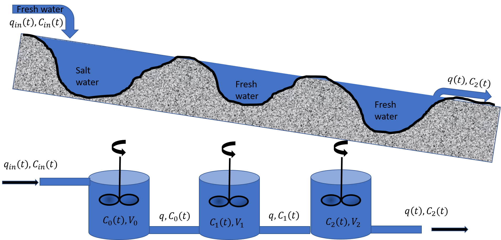
For simplicity we will assume that all the lakes have the same volume, \( V \). The governing equations follows as before, by assuming mass balance (equation \eqref{eq:ode:mbal}):
$$ \begin{align} C_0(t+\Delta t)\cdot V - C_0(t)\cdot V &= q(t)\cdot C_\text{in}(t)\cdot \Delta t - q(t)\cdot C_0(t)\cdot \Delta t,\nonumber\\ C_1(t+\Delta t)\cdot V - C_1(t)\cdot V &= q(t)\cdot C_0(t)\cdot \Delta t - q(t)\cdot C_1(t)\cdot \Delta t,\nonumber\\ C_2(t+\Delta t)\cdot V - C_2(t)\cdot V &= q(t)\cdot C_1(t)\cdot \Delta t - q(t)\cdot C_2(t)\cdot \Delta t.\label{eq:ode:cstr3a} \end{align} $$Taking the limit \( \Delta t\to 0 \), we can write equation \eqref{eq:ode:cstr3a} as:
$$ \begin{align} V\frac{dC_0(t)}{dt} &= q(t)\left[C_\text{in}(t) - C_0(t)\right],\label{eq:ode:cstr3b}\\ V\frac{dC_1(t)}{dt} &= q(t)\left[C_0(t) - C_1(t)\right],\label{eq:ode:cstr3c}\\ V\frac{dC_2(t)}{dt} &= q(t)\left[C_1(t) - C_2(t)\right].\label{eq:ode:cstr3d} \end{align} $$Let us first derive the analytical solution: Only the first tank is filled with salt water \( C_0(0)=C_{0,0} \), \( C_1(0)=C_2(0)=0 \), and \( C_\text{in}=0 \). The solution to equation \eqref{eq:ode:cstr3b} is, as before \( C_0(t)=C_{0,0}e^{-t/\tau} \), inserting this equation into equation \eqref{eq:ode:cstr3c} we find:
$$ \begin{align} V\frac{dC_1(t)}{dt} &= q(t)\left[C_{0,0}e^{-t/\tau} - C_1(t)\right]\label{eq:ode:cstr3e},\\ \frac{d}{dt}\left[e^{t/\tau}C_1\right]&= \frac{C_{0,0}}{\tau}\label{eq:ode:cstr3f},\\ C_1(t)&=\frac{C_{0,0}t}{\tau}e^{-t/\tau}\label{eq:ode:cstr3g}. \end{align} $$where we have use the technique of integrating factors when going from equation \eqref{eq:ode:cstr3e} to \eqref{eq:ode:cstr3f}. Inserting equation \eqref{eq:ode:cstr3g} into equation \eqref{eq:ode:cstr3d}, solving the equation in a similar way as for \( C_1 \) we find:
$$ \begin{align} V\frac{dC_2(t)}{dt} &= q(t)\left[\frac{C_{0,0}t}{\tau}e^{-t/\tau} - C_2(t)\right],\label{eq:ode:cstr3h}\\ \frac{d}{dt}\left[e^{t/\tau}C_2\right]&= \frac{C_{0,0}t}{\tau},\label{eq:ode:cstr3i}\\ C_2(t)&=\frac{C_{0,0}t^2}{2\tau^2}e^{-t/\tau}.\label{eq:ode:cstr3j} \end{align} $$The numerical solution follows the exact same pattern as before if we introduce a vector notation. Before doing that, we rescale the time \( t\to t/\tau \) and the concentrations, \( \hat{C_i}=C_i/C_{0,0} \) for \( i=0,1,2 \), hence:
$$ \begin{align} \frac{d}{dt} \left( \begin{array}{c} \hat{C_0}(t)\\ \hat{C_1}(t)\\ \hat{C_2}(t) \end{array} \right) &=\left( \begin{array}{c} \hat{C_\text{in}}(t) - \hat{C_0}(t)\\ \hat{C_0}(t) - \hat{C_1}(t)\\ \hat{C_1}(t) - \hat{C_2}(t) \end{array} \right),\nonumber \label{_auto105} \\ \frac{d\mathbf{\hat{C}}(t)}{dt}&=\mathbf{f}(\mathbf{\hat{C}},t). \label{_auto106} \end{align} $$In figure 43 results of an implementation using Runge-Kutta 4. order is shown (see exercises for more details).
Figure 43: The concentration in the tanks.
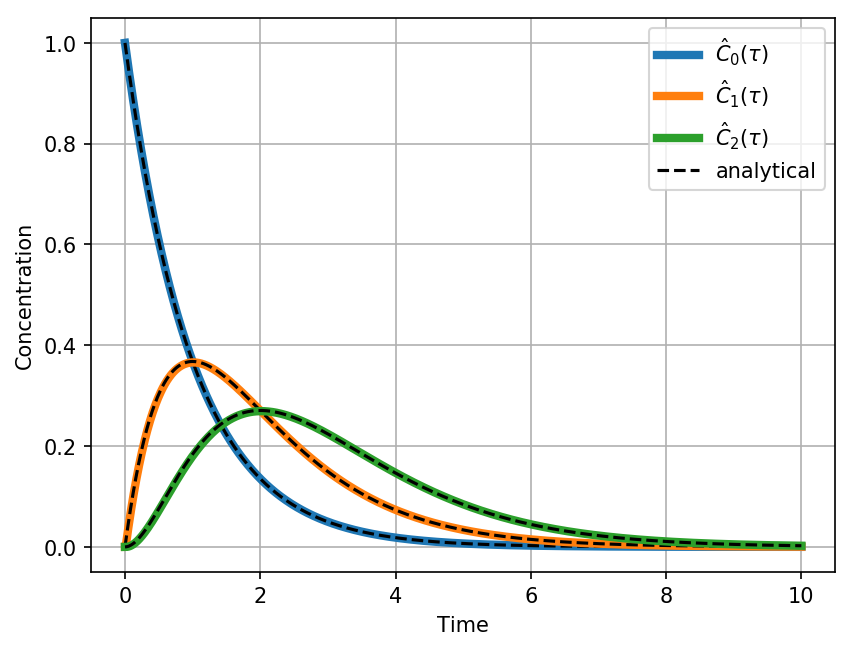
As already mentioned a couple of times, our system could be part of a much larger system. To illustrate this, let us now assume that we have two tanks in series. The first tank is similar to our original tank, but the second tank is a sampling tank, 1000 times smaller.
Figure 44: A continuous stirred tank model with a sampling vessel.
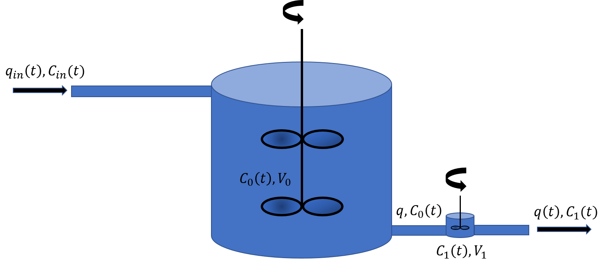
The governing equations can be found by requiring mass balance for each of the tanks (see equation \eqref{eq:ode:mbal}:
$$ \begin{align} C_0(t+\Delta t)\cdot V_0 - C_0(t)\cdot V_0 &= q(t)\cdot C_\text{in}(t)\cdot \Delta t - q(t)\cdot C_0(t)\cdot \Delta t.\nonumber\\ C_1(t+\Delta t)\cdot V_1 - C_1(t)\cdot V_1 &= q(t)\cdot C_0(t)\cdot \Delta t - q(t)\cdot C_1(t)\cdot \Delta t. \label{eq:ode:cstr2a} \end{align} $$Taking the limit \( \Delta t\to 0 \), we can write equation \eqref{eq:ode:cstr2a} as:
$$ \begin{align} V_0\frac{dC_0(t)}{dt} &= q(t)\left[C_\text{in}(t) - C_0(t)\right].\label{eq:ode:cstr2bb}\\ V_1\frac{dC_1(t)}{dt} &= q(t)\left[C_0(t) - C_1(t)\right].\label{eq:ode:cstr2b} \end{align} $$Assume that the first tank is filled with seawater, \( C_0(0)=C_{0,0} \), and fresh water is flooded into the tank, i.e. \( C_\text{in}=0 \). Before we start to consider a numerical solution, let us first find the analytical solution: As before the solution for the first tank (equation \eqref{eq:ode:cstr2bb}) is:
$$ \begin{equation} C_0(t)=C_{0,0}e^{-t/\tau_0}, \label{_auto107} \end{equation} $$where \( \tau_0\equiv V_0/q \). Inserting this equation into equation \eqref{eq:ode:cstr2b}, we get:
$$ \begin{align} \frac{dC_1(t)}{dt} &= \frac{1}{\tau_1}\left[C_{0,0}e^{-t/\tau_0} - C_1(t)\right],\nonumber\\ \frac{d}{dt}\left[e^{t/\tau_2}C_1\right]&= \frac{C_{0,0}}{\tau_1}e^{-t(1/\tau_0-1/\tau_1)}\label{eq:ode:cstr2c},\\ C_1(t)&=\frac{C_{0,0}}{1-\frac{\tau_1}{\tau_0}}\left[e^{-t/\tau_0}-e^{-t/\tau_1}\right],\label{eq:ode:cstr2d} \end{align} $$where \( \tau_1\equiv V_1/q \).
Next, we will consider the numerical solution. You might think that these equations are more simple to solve numerically than the equations with three tanks in series discussed in the previous section. Actually, this system is much harder to solve with the methods we have discussed so far. The reason is that there are now two time scales in the system, \( \tau_1 \) and \( \tau_2 \). The smaller tank sets a strong limitation on the step size we can use, because we should never use step sizes larger than a tank volume. Thus if you use the code in the previous section to solve equation \eqref{eq:ode:cstr2bb} and \eqref{eq:ode:cstr2b}, it will not find the correct solution, unless the step size is lower than \( 10^{-3} \). Equations of this type are known as stiff.
There is no precise definition of ''stiff'', but it is used to describe a system of differential equations, where the numerical solution becomes unstable unless a very small step size is chosen. Such systems occurs because there are several (length, time) scales in the system, and the numerical solution is constrained by the shortest length scale. You should always be careful on how you scale your variables in order to make the system dimensionless, which is of particular importance when you use adaptive methods.
These types of equations are often encountered in practical applications. If our sampling tank was extremely small, maybe \( 10^6 \) smaller than the chemical reactor, then we would need a step size of the order of \( 10^{-8} \) or lower to solve the system. This step size is so low that we easily run into trouble with round off errors in the computer. In addition the simulation time is extremely long. How do we deal with this problem? The solution is actually quite simple. The reason we run into trouble is that we require that the concentration leaving the tank must be a small perturbation of the old one. This is not necessary, and it is best illustrated with Eulers method. As explained earlier Eulers method can be viewed as a two step process: first we inject a volume (and remove an equal amount: \( qC(t)\Delta t \)), and then we mix. Clearly when we try to remove more than what is left, we run into trouble. What we want to do is to remove or flood much more than one tank volume through the tank during one time step, this can be achieved by \( q(t)C(t)\Delta t\to q(t+\Delta t)C(t+\Delta t)\Delta t \). The term \( q(t+\Delta t)C(t+\Delta t)\Delta t \) now represents the mass out of the system during the time step \( \Delta t \).
The methods we have considered so far are known as explicit, whenever we replace the solution in the right hand side of our algorithm with \( y(t+\Delta t) \) or (\( y_{n+1} \)), the method is known as implicit. Implicit methods are always stable, meaning that we can take as large a time step that we would like, without getting oscillating solution. It does not mean that we will get a more accurate solution, actually explicit methods are usually more accurate.
Explicit methods are often called forward methods, as they use only information from the previous step to estimate the next value. The explicit methods are easy to implement, but get into trouble if the step size is too large. Implicit methods are often called backward methods as the next step cannot be calculated directly from the previous solution, usually a non-linear equation has to be solved. Implicit methods are generally much more stable, but the price is often lower accuracy. Many commercial simulators uses implicit methods extensively because they are stable, and stability is often viewed as a much more important criterion than numerical accuracy.
Let us consider our example further, and for simplicity use the implicit Eulers method:
$$ \begin{align} {C_0}_{n+1}V_0 - {C_0}_nV_0 &= q(t+\Delta t){C_\text{in}}_{n+1}\Delta t - q(t+\Delta t){C_0}_{n+1}\Delta t.\nonumber\\ {C_1}_{n+1}V_1 - {C_1}_nV_1 &= q(t+\Delta t){C_0}_{n+1}\Delta t - q(t+\Delta t){C_1}_{n+1}\Delta t. \label{eq:ode:cstr2ai} \end{align} $$This equation is equal to equation \eqref{eq:ode:cstr2a}, but the concentrations on the right hand side are now evaluated at the next time step. The immediate problem is now that we have to find an expression for \( C_{n+1} \) that is given in terms of known variables. In most cases one needs to use a root finding method, like Newtons method, in order to solve equation \eqref{eq:ode:cstr2ai}. In this case it is straight forward to show:
$$ \begin{align} {C_0}_{n+1}&=\frac{{C_0}_n + \frac{\Delta t}{\tau_0}{C_\text{in}}_{n+1}}{1+\frac{\Delta t}{\tau_0}},\nonumber\\ {C_2}_{n+1}&=\frac{{C_1}_n + \frac{\Delta t}{\tau_1}{C_0}_{n+1}}{1+\frac{\Delta t}{\tau_1}}.\label{eq:ode:cstri1} \end{align} $$In figure 45 the result of the implementation is shown, note that quite large step sizes can be used without inducing non physical results.
Figure 45: The concentration in the tanks for \( h=0.01 \).
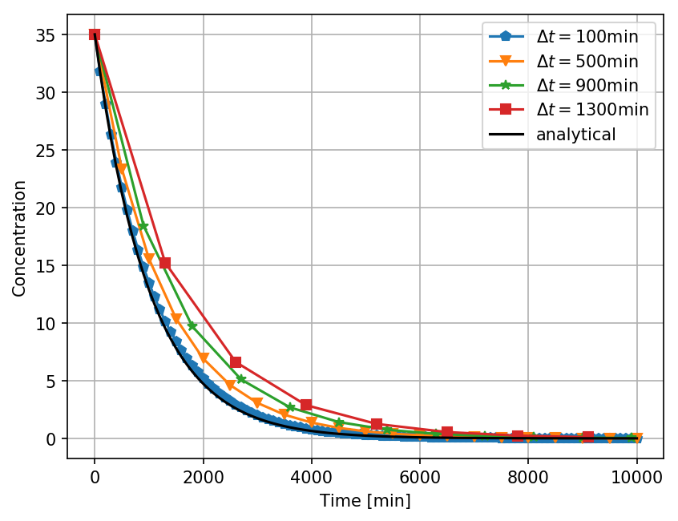
In the following we will take a closer look at the adaptive Eulers algorithm and show that the constant \( c \) is indeed the same in equation \eqref{eq:ode:aeb0} and \eqref{eq:ode:aeb1}. The true solution \( y(t) \), obeys the following equation:
$$ \begin{align} \frac{dy}{dt}&=f(y,t),\label{eq:ode:ay} \end{align} $$and Eulers method to get from \( y_0 \) to \( y_1 \) by taking one (large) step, \( h \) is:
$$ \begin{align} y^*_1&=y_0+hf(y_0,t_0),\label{eq:ode:ae0} \end{align} $$We will also assume (for simplicity) that in our starting point \( t=t_0 \), the numerical solution, \( y_0 \), is equal to the true solution, \( y(t_0) \), hence \( y(t_0)=y_0 \).
Solution.
The local error, is the difference between the numerical solution and the true solution:
$$ \begin{align} \epsilon^*&=y(t_0+h)-y_{1}^*=y(t_0)+y^{\prime}(t_0)h+\frac{1}{2}y^{\prime\prime}(t_0)h^2+\mathcal{O}(h^3)\nonumber\\ &-\left[y_0+hf(y_0,t_0+h)\right], \label{_auto111} \end{align} $$where we have used Taylor expansion to expand the true solution around \( t_0 \), and equation \eqref{eq:ode:ae0}. Using equation \eqref{eq:ode:ay} to replace \( y^\prime(t_0) \) with \( f(y_0,t_0) \), we find:
$$ \begin{align} \epsilon^*=&y(t_0+h)-y_{1}^*=\frac{1}{2}y^{\prime\prime}(t_0)h^2\equiv ch^2, \label{_auto112} \end{align} $$where we have ignored terms of higher order than \( h^2 \), and defined \( c \) as \( c=y^{\prime\prime}(t_0)/2 \). Next we take two steps of size \( h/2 \) to reach \( y_1 \):
$$ \begin{align} y_{1/2}&=y_0+\frac{h}{2}f(y_0,t_0),\label{eq:ode:ae1}\\ y_{1}&=y_{1/2}+\frac{h}{2}f(y_{1/2},t_0+h/2),\label{eq:ode:ae2}\\ y_{1}&=y_{0}+\frac{h}{2}f(y_0,t_0)+\frac{h}{2}f(y_0+\frac{h}{2}f(y_0,t_0),t_0+h/2).\label{eq:ode:ae3} \end{align} $$Note that we have inserted equation \eqref{eq:ode:ae1} into equation \eqref{eq:ode:ae2} to arrive at equation \eqref{eq:ode:ae3}. The truncation error in this case is, as before:
$$ \begin{align} \epsilon&=y(t_0+h)-y_{1}=y(t_0)+y^{\prime}(t_0)h+\frac{1}{2}y^{\prime\prime}(t_0)h^2+\mathcal{O}(h^3)\nonumber\\ &-\left[y_{0}+\frac{h}{2}f(y_0,t_0)+\frac{h}{2}f(y_0+\frac{h}{2}f(y_0,t_0),t_0+h/2)\right].\label{eq:ode:ay5} \end{align} $$This equation is slightly more complicated, due to the term involving \( f \) inside the last parenthesis, we can use Taylor expansion to expand it about \( (y_0,t_0) \):
$$ \begin{align} &f(y_0+\frac{h}{2}f(y_0,t_0),t_0+h/2)=f(y_0,t_0)\nonumber\\ &+\frac{h}{2}\left[f(y_0,t_0)\left.\frac{\partial f}{\partial y}\right|_{y=y_0,t=t_0} +\left.\frac{\partial f}{\partial t}\right|_{y=y_0,t=t_0}\right]+\mathcal{O}(h^2).\label{eq:ode:ay2} \end{align} $$It turns out that this equation is related to \( y^{\prime\prime}(t_0,y_0) \), which can be seen by differentiating equation \eqref{eq:ode:ay}:
$$ \begin{align} \frac{d^2y}{dt^2}&=\frac{df(y,t)}{dt}=\frac{\partial f(y,t)}{\partial y}\frac{dy}{dt}+\frac{\partial f(y,t)}{\partial t} =\frac{\partial f(y,t)}{\partial y}f(y,t)+\frac{\partial f(y,t)}{\partial t}.\label{eq:ode:ay3} \end{align} $$Hence, equation \eqref{eq:ode:ay2} can be written:
$$ \begin{align} f(y_0+\frac{h}{2}f(y_0,t_0),t_0+h/2)=f(y_0,t_0)+\frac{h}{2}y^{\prime\prime}(t_0,y_0),\label{eq:ode:ay4} \end{align} $$hence the truncation error in equation \eqref{eq:ode:ay5} can finally be written:
$$ \begin{align} \epsilon=&y(t_1)-y_{1}=\frac{h^2}{4} y^{\prime\prime}(y_0,t_0)=\frac{1}{2}ch^2,\label{eq:ode:ae4} \end{align} $$a) Show that when we take one step of size \( h \) from \( t_0 \) to \( t_1=t_0+h \), \( c=y^{\prime\prime}(t_0)/2 \) in equation \eqref{eq:ode:aeb0}.
Answer.
The local error, is the difference between the numerical solution and the true solution:
$$ \begin{align} \epsilon^*&=y(t_0+h)-y_{1}^*=y(t_0)+y^{\prime}(t_0)h+\frac{1}{2}y^{\prime\prime}(t_0)h^2+\mathcal{O}(h^3)\nonumber\\ &-\left[y_0+hf(y_0,t_0+h)\right], \label{_auto108} \end{align} $$where we have used Taylor expansion to expand the true solution around \( t_0 \), and equation \eqref{eq:ode:ae0}. Using equation \eqref{eq:ode:ay} to replace \( y^\prime(t_0) \) with \( f(y_0,t_0) \), we find:
$$ \begin{align} \epsilon^*=&y(t_0+h)-y_{1}^*=\frac{1}{2}y^{\prime\prime}(t_0)h^2\equiv ch^2, \label{_auto109} \end{align} $$hence \( c=y^{\prime\prime}(t_0)/2 \).
b) Show that when we take two steps of size \( h/2 \) from \( t_0 \) to \( t_1=t_0+h \), Eulers algorithm is:
$$ \begin{align} y_{1}&=y_{0}+\frac{h}{2}f(y_0,t_0)+\frac{h}{2}f(y_0+\frac{h}{2}f(y_0,t_0),t_0+h/2). \label{_auto110} \end{align} $$
Answer.
Note that we have inserted equation \eqref{eq:ode:ae1b} into equation \eqref{eq:ode:ae2b} to arrive at equation \eqref{eq:ode:ae3b}.
c) Find an expression for the local error when using two steps of size \( h/2 \), and show that the local error is: \( \frac{1}{2}ch^2 \)
Answer.
This equation is slightly more complicated, due to the term involving \( f \) inside the last parenthesis, we can use Taylor expansion to expand it about \( (y_0,t_0) \):
$$ \begin{align} &f(y_0+\frac{h}{2}f(y_0,t_0),t_0+h/2)=f(y_0,t_0)\nonumber\\ &+\frac{h}{2}\left[f(y_0,t_0)\left.\frac{\partial f}{\partial y}\right|_{y=y_0,t=t_0} +\frac{h}{2}\left.\frac{\partial f}{\partial t}\right|_{y=y_0,t=t_0}\right]+\mathcal{O}(h^2).\label{eq:ode:ay2b} \end{align} $$It turns out that this equation is related to \( y^{\prime\prime}(t_0,y_0) \), which can be seen by differentiating equation \eqref{eq:ode:ay}:
$$ \begin{align} \frac{d^2y}{dt^2}&=\frac{df(y,t)}{dt}=\frac{\partial f(y,t)}{\partial y}\frac{dy}{dt}+\frac{\partial f(y,t)}{\partial t} =\frac{\partial f(y,t)}{\partial y}f(y,t)+\frac{\partial f(y,t)}{\partial t}.\label{eq:ode:ay3b} \end{align} $$Hence, equation \eqref{eq:ode:ay2b} can be written:
$$ \begin{align} f(y_0+\frac{h}{2}f(y_0,t_0),t_0+h/2)=f(y_0,t_0)+\frac{h}{2}y^{\prime\prime}(t_0,y_0),\label{eq:ode:ay4b} \end{align} $$hence the truncation error in equation \eqref{eq:ode:ay5b} can finally be written:
$$ \begin{align} \epsilon=&y(t_1)-y_{1}=\frac{h^2}{4} y^{\prime\prime}(y_0,t_0)=\frac{1}{2}ch^2,\label{eq:ode:ae4b} \end{align} $$Monte Carlo methods are named after the Monte Carlo Casino in Monaco, this is because at its core it uses random numbers to solve problems. Monte Carlo methods are quite easy to program, and they are usually much more intuitive than a theoretical approach.
Let us start with a simple illustration of the Monte Carlo Method (MCM), Monte Carlo integration. To the left in figure 46 there is a shape of a pond. Imagine that we wanted to estimate the area of the pond, how could we do it? Assume further that you did not have your phone or any other electronic devices to help you.
Figure 46: Two ponds to illustrate the MCM.
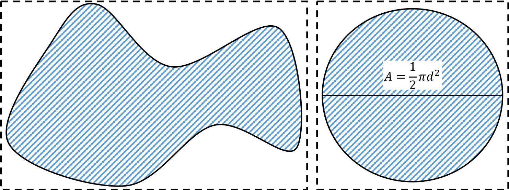
One possible approach is: First to walk around it, and put up some bands (illustrated by the black dotted line). Then estimate the area inside the bands (e.g. 4$\times$3 meters). Then we would know that the area was less than e.g. 12m$^2$. Finally, and this is the difficult part, throw rocks randomly inside the bands. The number of rocks hitting the pond divided by the total number rocks thrown should be equal to the area of the pond divided by the total area inside the bands, i.e. the area of the pond should be equal to:
$$ \begin{equation} A\simeq\text{Area of rectangle}\times\frac{\text{Number of rocks hitting the pond}}{\text{Number of rocks thrown}}. \label{eq:mc:mci} \end{equation} $$It is important that we throw the rocks randomly, otherwise equation \eqref{eq:mc:mci} is not correct. Now, let us investigate this in more detail, and use the idea of throwing rocks to estimate \( \pi \). To the right in figure 46, there is a well known shape, a circle. The area of the circle is \( \pi d^2/4 \), and the shape is given by \( x^2+y^2=d^2/4 \). Assume that the circle is inscribed in a square with sides of \( d \). To throw rocks randomly inside the square, is equivalent pick random numbers with coordinates \( (x,y) \), where \( x\in[0,d] \) and \( y\in[0,d] \). We want all the \( x- \) and $y-$values to be chosen with equal probability, which is equivalent to pick random numbers from a uniform distribution. Below is a Python implementation:
import numpy as np
def estimate_pi(N,d):
# random.seed(2)
D2=d*d/4; dc=0.5*d
A=0
for k in range(0,N):
x=np.random.uniform(0,d)
y=np.random.uniform(0,d)
if((x-dc)**2+(y-dc)**2 <= D2):
A+=1
# estimate area of circle: d*d*A/N
return 4*A/N
N=1000;d=2
pi_est=estimate_pi(N,d)
print('Estimate for pi= ', pi_est,' Error=', np.pi-pi_est)
In the table below, we have run the code for \( d=1 \) and different values of \( N \).
| MC estimate | Error | \( N \) | \( 1/\sqrt{N} \) |
| 3.04 | -0.10159 | 10$^2$ | 0.100 |
| 3.176 | $\,$0.03441 | 10$^3$ | 0.032 |
| 3.1584 | $\,$0.01681 | 10$^4$ | 0.010 |
| 3.14072 | -0.00087 | 10$^5$ | 0.003 |
We clearly see that a fair amount of rocks or numbers needs to be used in order to get a good estimate. If you run this code several times you will see that the results changes from time to time. This makes sense as the coordinates \( x \) and \( y \) are chosen at random.
The code above is not efficient and for MC simulations we usually have to use many random numbers. Instead of
for k in range(0,N):
x=np.random.uniform(0,d)
y=np.random.uniform(0,d)
one should avoid loops, and take advantage of build in functions in Numpy
x=np.random.uniform(0,d,size=N)
y=np.random.uniform(0,d,size=N)
There are much to be said about random number generators. The MCM depends on a good random number generator, otherwise we cannot use the results from statistics to develop our algorithms. Below, we briefly summarize some important points that you should be aware of:
In Pythons random.uniform function, a random seed is chosen each time the code is run, but
if we set e.g. random.seed(2), the code will generate the same sequence of numbers each time it is called.
This section can be skipped as it is not relevant for development of the numerical algorithms, but it is a good place to explain the basic idea behind encryption of messages. A very simple, but not a very good encryption, is to replace all the letters in the alphabet with a number, e.g. A=1, B=2, C=3, etc. This is what is know as a substitution cipher, it does not need to be a number it could be a letter, a sequence of letters, letters and numbers etc. The receiver can solve the code by doing the reverse operation.
The
weakness of this approach is that it can fairly easily be cracked, by
the following approach: First we analyze the encrypted message and find the frequency of each of the symbols.
Assume that we know that the message is written in English, then the
frequency of symbols can be compared with the frequency of
letters from a known English text (the most common is E (12$\%$), then T
(9$\%$), etc.). We would then guess that the most occurring symbol
probably is an E or T. When some of the letters are in place, we
can compare with the frequency of words, and so on. By the help of
computers this process can easily be automated.
A much better algorithm is to not replace a letter with the same symbol. To make it more clear, consider our simple example where A=1, B=2, C=3, \( \ldots \). If we know say that A=1 but we add a random number, then our code would be much harder to crack. Then the letter A could be several places in the message but represented as a complete different number. Thus we could not use the frequency of the various symbols to crack the message.
How can the receiver decrypt the message? Obviously, it can be done if both the sender and receiver have the same sequence of random numbers (or the key). This can be achieved quite simple with random number generators, if we know the seed used we can generate the same sequence of random numbers. If Alice where to send a message to Bob without Eve knowing what it is, Alice and Bob could agree to send a message that was scrambled using Pythons Mersenne-Twister algorithm with seed=2.
The weakness of this approach is of course that Eve could convince Alice or Bob to give her the seed or the key. Another possibility is that Eve could write a program that tested different random number generators and seeds to decipher the message. How to avoid this?
Let us assume that Alice and Bob each had their own hardware random generator. This generator generated random numbers that was truly random, and the sequence could not be guessed by any outsider. Alice do not want to share her key (sequence of random numbers) with Bob, and Bob would not share his key with Alice. How can they send a message without sharing the key? One possible way of doing it is as follows: Alice write a message and encrypt it with her key, she send the message to Bob. Bob then encrypt the message with his key, he sends it back to Alice. Alice then decrypt the message with her key and send it back to Bob. Now, Bob can decrypt it with his own key and read the message. The whole process can be visualized by thinking of the message as box with the message. Alice but her padlock on the box (keeps her key for her self), she sends the message to Bob. Bob locks the box with his padlock, now there are two padlocks on the box. He sends the box back to Alice, Alice unlocks her padlock with her key, and sends it back to Bob. The box now only has Bob's key, he can unlock the box and read the message. The important point is that the box was never unlocked throughout the transaction, and Alice and Bob never had to share the key with anyone.
How many rocks do we need to throw in order to reach a certain accuracy? To answer this question we need some results from statistics. Our problem of calculating the integral is closely related to the binomial distribution. When we throw a rock one of two things can happen i) the rock falls into the water, or ii) it falls outside the pond. If we denote the probability that the rock falls into the pond as \( p \), then the probability that it falls outside the pond, \( q \), has to be \( q=1-p \). This is simply because there are no other possibilities and the sum of the two probabilities has to be one: \( p+q=p+(1-p)=1 \). The binomial distribution is given by:
$$ \begin{equation} p(k)=\frac{n!}{k!(n-k)!}p^k(1-p)^{n-k}. \label{eq:mc:bin} \end{equation} $$\( p(k) \) is the probability that an event happens \( k \) times after \( n \) trials. The mean, \( \mu \), and the variance, \( \sigma^2 \), of the binomial distribution is:
$$ \begin{align} \mu&=\sum_{k=0}^{n-1}kp(k)=np, \label{eq:mc:binm}\\ \sigma^2&=\sum_{k=0}^{n-1}(k-\mu)^2p(k)=np(1-p). \label{eq:mc:bins} \end{align} $$The mean of a distribution is simply the sum divided by the count, the symbol \( \mu \) or \( \overline{x} \) is usually used. For \( N \) observations, \( x_i \), \( \mu=\sum_i x_i/N \). The mean is just an average, it could e.g. be the sum of all the heights of students in the class divided by the number of students. The mean would then be the average height of all the students in the class.
The variance is calculated by taking the difference between each of the data points and the mean, square it, and sum over all data points. Usually the symbol \( \sigma^2 \) is used, \( \sigma^2=\sum_i(\mu-x_i)^2/N \). The variance measures the spread in the data. Furthermore, it squares the distance between the mean and the individual observations, meaning that the points lying far a way from \( \mu \) contributes more to the variance.
Before we proceed, we should take a moment and look a little more into the meaning of equation \eqref{eq:mc:bin} to appreciate its usefulness. A classical example of the use of the binomial formula is to toss a coin, if the coin is fair it will have an equal probability of giving us a head or tail, hence \( p=1/2 \). Equation \eqref{eq:mc:bin}, can answer questions like: ''What is the probability to get only heads after 4 tosses?''. Let us calculate this answer using equation \eqref{eq:mc:bin}, the number of tosses is 4, the number of success is 4 (only heads each time)
$$ \begin{equation} p(k=4)=\frac{4!}{4!(4-4)!}\frac{1}{2}^4(1-\frac{1}{2})^{4-4}=\frac{1}{2^4}=\frac{1}{16}. \label{eq:mc:coin} \end{equation} $$''What is the probability to get three heads in four tosses?'', using the same equation, we find:
$$ \begin{equation} p(k=3)=\frac{4!}{3!(4-3)!}\frac{1}{2}^3(1-\frac{1}{2})^{4-3}=\frac{4}{2^4}=\frac{1}{4}. \label{eq:mc:coin2} \end{equation} $$In figure 47, all the possibilities are shown. The number of possibilities are 16, and there are only one possibility that we get only heads, i.e. the probability is 1/16 as calculated in equation \eqref{eq:mc:coin}. In the figure we also see that there are 4 possible ways we can get three heads, hence the probability is 4/16=1/4 as calculated in equation \eqref{eq:mc:coin2}.
Figure 47: The famous Norwegian Moose coin, and possible outcomes of four coin flips in a row.
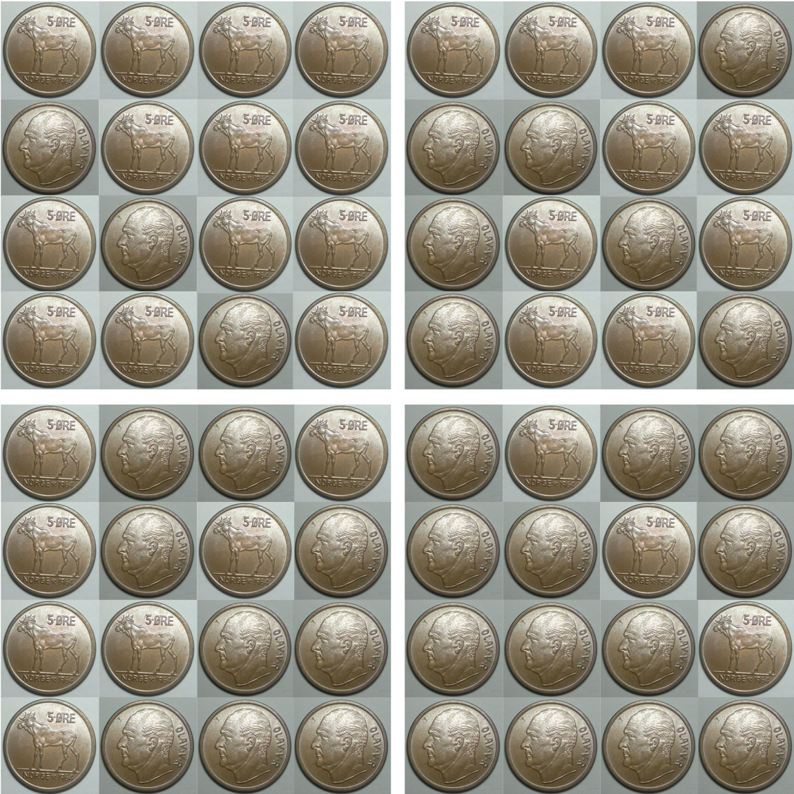
Now, let us return to our original question, ''What is the error on our estimate of the integral, when using the MCM?''. Before we continue we should also clean up our notation, let \( I \) be the value of the true integral, \( A \) is our estimate of the integral, and \( I_N \) is the area of the rectangle. First, let us show that the mean or expectation value of the binomial distribution is related to our estimate of the area of the pond or the circle, \( A \). In our case we draw \( n=N \) random numbers, and \( k \) times the coordinate falls inside the circle, equation \eqref{eq:mc:binm} tells us that the mean value is \( np \). \( p \) is the probability that the coordinate is within the area to be integrated, hence as before \( p \) is equal to the area to be integrated divided by the area of the total domain, thus:
$$ \begin{equation} \mu=np=N\frac{A}{I_N}, \label{_auto113} \end{equation} $$or
$$ \begin{equation} A=I_N\frac{\mu}{N}. \label{_auto114} \end{equation} $$Equation \eqref{eq:mc:bins}, gives us an estimate of the variance of the mean value. Assume for simplicity that we can replace \( 1-p\simeq p \), this is of course only correct if the area of the rectangle is twice as big as our pond, but we are only interested in an estimate of the error, hence \( \sigma^2\simeq np^2 \). We can now use the standard deviation as an estimate of the error of our integral:
$$ \begin{align} I&\simeq I_N\frac{\mu\pm\sigma}{n}=I_N\frac{Np\pm \sqrt{N}p}{N}\nonumber\\ &\simeq I_N(p\pm \frac{p}{\sqrt{N}})=A\pm \frac{A}{\sqrt{N}}. \label{eq:mc:mcmf} \end{align} $$In the last equation we have replaced \( p \) with \( A/I_N \). Hence, the error of our integral is inversely proportional to the square root of the number of points.
How does our previous method compare with some of our standard methods, like the midpoint rule? The error for the MC method scales as \( 1/\sqrt{N} \), in our previous error estimates we used the step length, \( h \), as an indicator of the accuracy, and not \( N \). The s$N$ is related to the number of points as \( h=(b-a)/n \), where \( b \) and \( a \) are the integration limit. Thus our MCM scales as \( 1/\sqrt{n}\sim h^{1/2} \), this is actually worse than the midpoint or trapezoidal rule, which scaled as \( h \).
The MCM can be improved. We will first describe the mean value method. In the last section we calculated the area of a circle by picking random numbers inside a square and estimated the fraction of points inside the circle. This is equivalent to calculate the area of a half circle, and multiply with 2:
$$ \begin{equation} I=2\int_{-d/2}^{d/2}\sqrt{(d/2)^2-x^2}dx=\frac{\pi d^2}{4}. \label{eq:mc:Is} \end{equation} $$The half-circle is now centered at the origin. Before we proceed we write our integral in a general form as:
$$ \begin{equation} I=\int_a^bf(x)dx. \label{eq:mc:I1} \end{equation} $$Instead of counting the number of points inside the curve given by \( f(x) \), we could instead use the mean of the function, which we will define as \( \overline{f}=\sum_k f(x_k)/N \):
$$ \begin{equation} I=\int_a^bf(x)dx\simeq\overline{f}\int_a^bdx=(b-a)\overline{f} =\frac{(b-a)}{N}\sum_{k=0}^{N-1}f(x_k). \label{eq:mc:I2} \end{equation} $$Note that this formula is similar to the midpoint rule, but now the function is not evaluated at the midpoint, but at several points and we use the average value.
Figure 48: Illustration of MC integration for \( N=4 \).
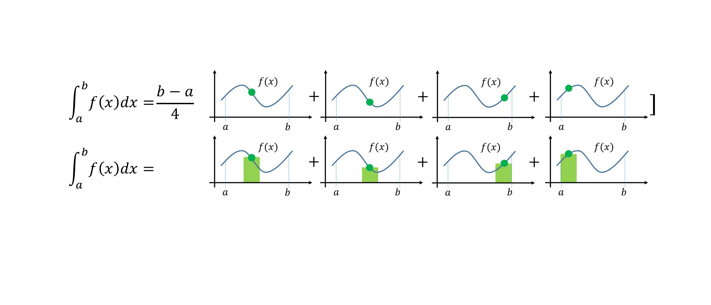
Below is an implementation:
import numpy as np
def f(x,D2):
return 2*np.sqrt((D2-x*x))
def mcm_mean(N,d):
D2=d*d/4
x=np.random.uniform(-d/2,d/2,size=N)
A=np.sum(f(x,D2))
# estimate for area: A/N
return d*A/N
In the table below we have compared the mean value method with the ''hit and miss'' method. We see that the mean value method performs somewhat better, but there are some random fluctuations and in some cases it performs poorer.
| MC-mean | Error | MC | Error | \( N \) |
| 3.1706 | 0.0290 | 3.1600 | 0.0184 | 10$^2$ |
| 3.1375 | -0.0041 | 3.1580 | 0.0164 | 10$^3$ |
| 3.1499 | 0.0083 | 3.1422 | 0.0006 | 10$^4$ |
| 3.1424 | 0.0008 | 3.1457 | 0.0041 | 10$^5$ |
| 3.1414 | -0.0002 | 3.1422 | 0.0006 | 10$^6$ |
We also see that in this case the error scales as \( 1/\sqrt{N} \).
At first sight it might be a little counter intuitive that if we multiply the average value of the function with the size of the integration domain we get an estimate for the integral, as illustrated in the top figure in figure 48. A different, but equivalent way, of viewing the mean value method is the lower figure in figure 48. For each random point we choose, we multiply with the area \( (b-a)/N \), as \( N \) increases the area decreases and the mean value method approaches the midpoint algorithm. The reason the mean value method performs poorer is that we do not sample the function at regular intervals. The law of large numbers, ensures that our estimate approach the true value of the integral.
The MCM is closely tied to statistics, and it is important to have a basic understanding of probability density functions (PDF). In the previous section, we used a random number generator to give us random numbers in an interval. All the numbers are picked with an equal probability. Another way to state this is to say that: we draw random numbers from an uniform distribution. Thus all the numbers are drawn with an equal probability \( p \). What is the value of \( p \)? That value is given from another property of PDF's, all PDF's must be normalized to 1. This is equivalent to state that the sum of all probabilities must be equal to one. Thus for a general PDF, \( p(x) \), we must have:
$$ \begin{equation} \int_{-\infty}^{\infty}p(x)dx=1. \label{eq:mc:pdf1} \end{equation} $$A uniform distribution, \( p(x)=U(x) \), is given by:
$$ \begin{equation} U(x)=\begin{cases} \frac{1}{b-a}, \text{ for }x\in[a,b]\\ 0, \text{ for } x < a \text{ or }x>b, \end{cases} \label{eq:mc:pdfu} \end{equation} $$you can easily verify that \( \int_{-\infty}^{\infty}U(x)=1 \). In the MCM we typically evaluate expectation values. The expectation value, \( E[f] \), for a function is defined:
$$ \begin{equation} E[f]\equiv\int_{-\infty}^{\infty}f(x)p(x)dx\simeq\frac{1}{N}\sum_{k=0}^{N-1}f(x_k), \label{eq:mc:ef} \end{equation} $$specializing to a uniform distribution, \( p(x)=U(x) \), we get:
$$ \begin{equation} E[f]=\int_{-\infty}^{\infty}f(x)U(x)dx=\frac{1}{b-a}\int_a^bf(x)dx. \label{eq:mc:efu} \end{equation} $$Rearranging this equation, we see that we can write the above equation as:
$$ \begin{equation} \int_a^bf(x)dx=(b-a)E[f]\simeq(b-a)\frac{1}{N}\sum_{k=0}^{N-1}f(x_k). \label{eq:mc:efu2} \end{equation} $$This equation is the same as equation \eqref{eq:mc:I2}, but in the previous section we never explained why the expectation value of \( f(x_k) \) was equal to the integral. The derivation above shows that \( \int_a^bf(x)dx \) is equal to the expectation value of \( f(x) \) only under the condition that we pick numbers from a uniform distribution.
To make this a bit more clearer, let us specialize to \( f(x)=x \). In this case the expectation value is equal to the mean:
$$ \begin{equation} E[x]=\mu=\int_{-\infty}^\infty xp(x)=\frac{1}{N}\sum_kx_k. \label{eq:mc:mean} \end{equation} $$In this case we also find that the numerical error scales as \( N^{-1/2} \), from the definition of the variance
$$ \begin{equation} \sigma=\sqrt{\frac{1}{N}\sum_k(f(x_i)-\langle f\rangle)^2}\sim\frac{1}{\sqrt{N}}, \label{eq:mc:varf} \end{equation} $$Monte Carlo integration performs much poorer than any of our previous methods. So why should we use it, or when should we use it? The strength of MC integration is only apparent when there is a large number of dimensions, as we will see in the next section.
The volume of a hyper sphere is known:
$$ \begin{equation} V(R)=\frac{\pi^{D/2}}{\Gamma(D/2+1)}R^D, \label{eq:mc:hyp} \end{equation} $$where \( D \) is the number of dimensions \( \Gamma(D/2+1) \) is the gamma function, if \( n \) is an integer then \( \Gamma(n)=(n-1)! \) and \( \Gamma(n+1/2)=(2n)!/(4^nn!)\sqrt{\pi} \). You can easily verify that for \( D=2,3 \), \( V(R)=\pi R^2, 4/3\pi R^3 \), respectively.
In the case of MC integration, we simply place the sphere inside a cube, and then count the number of points that hits inside the hyper sphere:
def mc_nballII(N=1000,D=3,R=1):
"""
Calculates the volume of a hypersphere using accept and reject
N: Number of random points
D: Number of dimensions
R: Radius of hypersphere
"""
r=0
for d in range(D):
xi=np.random.uniform(-R,R,size=N)
r+=xi*xi
r=np.sqrt(r)
vol = np.sum(r<=R)
print("Number of points inside n-ball: ", vol)
return vol/N*(2*R)**D
Notice how easy it is to do MC integration in any number of dimensions. If you run the code above for \( D=3,\ldots,9 \) you will see that the error is the same regardless of dimensions i.e. it only scales proportional to \( N^{-1/2} \) and not the number of dimensions.
How can we extend the traditional methods to more dimensions? One way of doing it is to call a one dimensional integration routine several times. The volume of a hypersphere can be written
$$ \begin{equation} V(R)=\int_{-R}^{R}\int_{-\sqrt{R^2-x_0^2}}^{\sqrt{R^2-x_0^2}} \int_{-\sqrt{R^2-x_0^2-x_1^2}}^{\sqrt{R^2-x_0^2-x_1^2}}\cdots \int_{-\sqrt{R^2-x_0^2-x_1^2-\cdots -x_{n-2}^2}}^{\sqrt{R^2-x_0^2-x_1^2-\cdots -x_{n-2}^2}}dx_0dx_1dx_2\cdots dx_{n-1}. \label{eq:mc:hypV} \end{equation} $$To simplify the notation lets look a little bit closer at \( D=3 \) (\( n=2 \)). We can always do the last integration regardless of the number of dimensions
$$ \begin{equation} V(R)=2\int_{-R}^{R}\int_{-\sqrt{R^2-x_0^2}}^{\sqrt{R^2-x_0^2}} \sqrt{R^2-x_0^2-x_1^2}dx_0dx_1. \label{eq:mc:hypV2} \end{equation} $$This equation can be rewritten as
$$ \begin{align} V(R)&=2\int_{-R}^{R}F(x_0)dx_0,\nonumber\\ F(x_0)&\equiv\int_{-\sqrt{R^2-x_0^2}}^{\sqrt{R^2-x_0^2}}\sqrt{R^2-x_0^2-x_1^2}dx_1, \label{eq:mc:hypV3} \end{align} $$when integrating \( F(x_0) \), we do it by dividing the x-axis from \( -R \) to \( R \) into \( N \) equal slices as before. We also need to evaluate \( F(x_0) \) for each value of \( x_0 \), which is slightly more tricky, see figure 49 for an illustration.
Figure 49: Illustration of a 2D integration to evaluate the volume of a sphere.
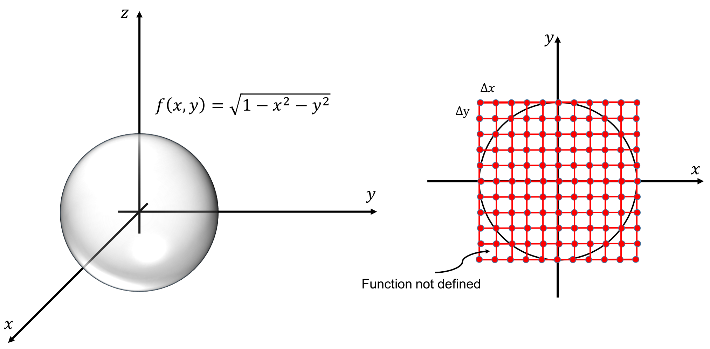
The multi dimensional integral is done by placing a box around the sphere, and divide this box into \( N\times N \) equal boxes. If start the integration at \( x=-R \), \( F(-R)=0 \), because the integrand is zero. If we move one step to the left, we need to integrate from \( y=-R \) to \( y=R \). We see from the figure to the right in figure 49 that the function is not defined for two first points. Thus we need to make sure that if we are outside the integration bounds the function is zero. Below is an implementation that uses recursive function calls
def dd_trapez(lower_limit,upper_limit,func,x,i,N,D):
h = (upper_limit-lower_limit)/N
if(i == D-1):
funci=d1_trapez
else:
funci=dd_trapez
x[i] = lower_limit
area = funci(lower_limit, upper_limit,func,x,i+1,N,D)
x[i] = upper_limit
area += funci(lower_limit, upper_limit,func,x,i+1,N,D)
area *= 0.5
x[i] = lower_limit
for k in range(1,N): # loop over k=1,..,N-1
x[i] += h # midpoint value
area += funci(lower_limit, upper_limit,func,x,i+1,N,D)
return area*h
Recursive implementation is very elegant, and more transparent, but it comes with a price. The reason is that when a function is called additional memory is allocated to store the local variables. If we where to calculate \( 100! \), 100 copies of the variable \( n \) are created, whereas using a loop only one variable is created. Each time a function is called more memory is allocated, and if the recursive calls are too many it might cause memory overflow. If you try to call fact_rec(1000), Python will give an error, because the maximum number of recursions are reached, it can be changed by:
import sys
sys.setrecursionlimit(1500)
In the chapter about numerical integration, we did an error analysis on the trapezoidal rule and found that it scaled as \( h^2 \). As we see from the example above, a higher order integration is simply to do a series of 1D integrations in all the dimensions, thus the error term should be \( h_{x_0}^2+h_{x_1}^2+\cdots+h_{x_{d-1}}^2 \). If we use the same spatial resolution in all dimensions, then the overall error scale as \( h^2 \). If we let \( n \) denote the number of points in each directions, \( h\sim 1/n \), the total number of points used is \( N=n\times n\cdots n=n^d \). Thus, the error term scales as \( h^2\sim N^{-2/d} \), and we see that if \( d\geq 4 \), the MC integration is expected to perform better.
The central limit theorem is a corner stone in statistics, and it is the reason for why the normal distribution is so widely used. The central limit theorem states that if we calculate the average of an independent random variable, the average will be distributed according to a normal distribution. Not that the central limit theorem does not state anything about the distribution of the original variable. We will not prove the central limit theorem, but illustrate it with two examples.
a) First we will investigate a random variable that follows a uniform distribution. Write a Python function that returns the average of \( N \) uniformly distributed numbers in \( [0,1] \).
Solution.
def average(N):
x=[np.random.uniform() for _ in range(N)]
return np.mean(x)
# or alternatively, and equally fast
def average2(N):
x=0
for i in range(N):
x+=np.random.uniform()
return x/N
# or much faster:
def average3(N):
x=np.random.uniform(size=N)
return np.mean(x)
b) Calculate the average \( M \) times and make a histogram of the values.
Solution.
def hist(M,N=100):
c) Repeat the above exercise for a Poisson distribution.
Solution.
def average3(N):
x=np.random.uniform(size=N)
return np.mean(x)
def hist(M,N=100):
y=[average3(N) for _ in range(M)]
plt.hist(x=y, bins='auto', color='#0504aa',alpha=0.7, rwidth=0.85)
plt.show()
def average4(N):
x=[np.random.poisson() for _ in range(N)]
return np.mean(x)
It is quite remarkable that the distribution of the average values from both a uniform and Poisson distribution follows a normal distribution. The general proof is not that complicated, but the ramifications are large. The central limit theorem explains why it makes sense to use the standard deviation as a measure of confidence for the mean value.
The human mind is not good at logical thinking, and if we use our intuition we often get into trouble. A well known example is the ''Birthday Paradox'', it is simply to answer the following question: ''How many randomly selected people do we need in order that there is a 50\% chance that two of them have birthday on the same date?''
a) Write a Python function that pick a random date
Solution.
Below are two examples, the first one picks a date, while the second one just picks a random day at year.
#from datetime import date
#%%
import numpy as np
#def get_date():
# """ return a random date in the current year """
# start_dt = date.today().replace(day=1, month=1).toordinal()
# end_dt = date.today().replace(day=31, month=12).toordinal()
# random_day = date.fromordinal(np.random.randint(start_dt, end_dt))
# return random_day
def get_day():
""" return a random day in a year """
return np.random.randint(1,365)
b) Write a function that takes as argument, number of persons in a group, and returns 1 if two of them has birthday on the same date and 0 otherwise.
Solution.
.
def NoPeople(p):
""" pick random dates in a year, return 1 if two
is in the same date before p is reached """
dates=[]
for n in range(p):
date=get_day()
if date in dates:
return 1
else:
dates.append(date)
return 0
c) Write a function that returns the probability that two people in a group of \( p \) persons have birthday on the same day, and determine how many people we need to have a probability of 50\%.
Solution.
In order to get some statistics, we need to sample \( N \) groups and return the fraction of groups that had two persons with the same birthday.
def BP(p, N):
prob=0.
for i in range(N):
prob += NoPeople(p)
return prob/N
print(BP(200,1000))
By trial an error, we find that 23 persons is needed in order to have a probability of